E.G.O GIFT
림버스 컴퍼니 림컴 림버스 조합식 에깊 거던
-
화상-
I
E.G.O GIFT 최대 강화 효과 
융해된 파라핀++ - 기본 효과
화상 위력, 화상 횟수, 특수 화상을 부여하는 스킬로 합 승리 시,
(남은 코인 수/2) 만큼 대상 적에게 화상 위력 부여. - + (1강) 효과
화상 위력, 화상 횟수, 특수 화상을 부여하는 스킬로 합 승리 시,
(남은 코인 수/2+1) 만큼 대상 적에게 화상 위력 부여. - ++ (2강) 효과
화상 위력, 화상 횟수, 특수 화상을 부여하는 스킬로 합 승리 시,
(남은 코인 수+1) 만큼 대상 적에게 화상 위력 부여.
재에서 재로++ - 기본 효과
전투 시작 시 모든 적(환상체일 경우, 모든 부위)이 화상에 걸린 경우,
적 전체(환상체일 경우, 모든 부위)에게 화상 위력 2 부여. - + (1강) 효과
전투 시작 시 화상에 걸린 적 전체(환상체일 경우, 모든 부위)에게 화상 위력 2 부여. - ++ (2강) 효과
전투 시작 시 적 전체(환상체일 경우, 모든 부위)에게 화상 위력 3 부여.
타오르는 지성++ - 기본 효과
화상 효과로 적을 처치하였다면 다음 턴 시작 시,
화상 위력을 부여하는 스킬을 보유한 아군 인격 둘이 피해량 증가 1 얻음. - + (1강) 효과
화상 효과로 적을 처치하였다면 다음 턴 시작 시,
화상 위력을 부여하는 스킬을 보유한 아군 인격 둘이 피해량 증가 2 얻음. - ++ (2강) 효과
화상 효과로 적을 처치하였다면 다음 턴 시작 시,
화상 위력을 부여하는 스킬을 보유한 아군 인격 셋이 피해량 증가 2 얻음.
편광++ - 기본 효과
아군이 대상보다 정신력이 30 이상 높을 경우,
화상 위력 또는 화상 횟수 또는 특수 화상을 부여하는 스킬로 입히는 피해량 +7.5%. - + (1강) 효과
아군이 대상보다 정신력이 25 이상 높을 경우,
화상 위력 또는 화상 횟수 또는 특수 화상을 부여하는 스킬로 입히는 피해량 +12.5%. - ++ (2강) 효과
아군이 대상보다 정신력이 15 이상 높을 경우,
화상 위력 또는 화상 횟수 또는 특수 화상을 부여하는 스킬로 입히는 피해량 +20%.
- 기본 효과
-
II
E.G.O GIFT 최대 강화 효과
울화통++ - 기본 효과
[편성 1번, 2번 인격 전용 효과]
화상 또는 특수 화상에 걸린 적에게 스킬 효과로 화상 또는 특수 화상을 부여할 경우, 다음 턴에 신속 1 얻음.
신속을 이미 보유한 경우, 효과가 강화되어 신속 1, 공격 레벨 증가 2 얻음.
(스킬 당 1회, 턴당 최대 2회) - + (1강) 효과
[편성 1번, 2번, 3번 인격 전용 효과]
화상 또는 특수 화상에 걸린 적에게 스킬 효과로 화상 또는 특수 화상을 부여할 경우, 다음 턴에 신속 1 얻음.
신속을 이미 보유한 경우, 효과가 강화되어 신속 2, 공격 레벨 증가 2 얻음.
(스킬 당 1회, 턴당 최대 2회) - ++ (2강) 효과
[편성 1번, 2번, 3번 인격 전용 효과]
화상 또는 특수 화상에 걸린 적에게 스킬 효과로 화상 또는 특수 화상을 부여할 경우, 다음 턴에 신속 1 얻음.
신속을 이미 보유한 경우, 효과가 강화되어 신속 2, 공격 레벨 증가 2, 피해량 증가 2 얻음.
(스킬 당 1회, 턴당 최대 2회)
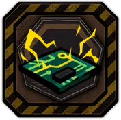
일점타격논리회로X - 기본 효과
화상 위력 또는 특수 화상을 부여하는 스킬 또는 질투 속성 스킬을 사용하여 적에게 적중 시,
대상에게 해당 스킬의 코인 수 절반만큼 추가로 화상 위력 부여.(소수는 올림하여 계산)
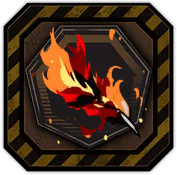
작열우모++ - 기본 효과
화상 위력 또는 특수 화상을 부여하는 스킬 또는 색욕 속성의 스킬을 사용하여 대상에게 적중 시,
대상에게 화상 위력 3 부여.
턴 시작 시 화상 20 이상을 보유한 적의 경우, 화상이 2배로 증가. - + (1강) 효과
화상 위력 또는 특수 화상을 부여하는 스킬 또는 색욕 속성의 스킬을 사용하여 대상에게 적중 시,
대상에게 화상 위력 4 부여.
턴 시작 시 화상 20 이상을 보유한 적의 경우, 화상이 2배로 증가. - ++ (2강) 효과
화상 위력 또는 특수 화상을 부여하는 스킬 또는 색욕 속성의 스킬을 사용하여 대상에게 적중 시,
대상에게 화상 위력 4 부여.
턴 시작 시 화상 20 이상을 보유한 적의 경우, 화상이 2.5배로 증가.
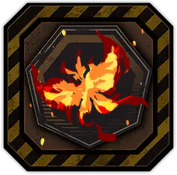
지옥나비의 꿈++ - 기본 효과
화상 또는 특수 화상에 걸린 적에게 스킬 효과로 화상 위력 또는 특수 화상을 부여할 경우,
모든 적에게 화상 위력 3 무작위로 나누어 부여.
분노 완전 공명을 발동하였다면 전투 시작 시,
모든 적에게 화상 위력 5 무작위로 나누어 부여. - + (1강) 효과
화상 또는 특수 화상에 걸린 적에게 스킬 효과로 화상 위력 또는 특수 화상을 부여할 경우,
모든 적에게 화상 위력 4 무작위로 나누어 부여.
분노 완전 공명을 발동하였다면 전투 시작 시,
모든 적에게 화상 위력 6 무작위로 나누어 부여. - ++ (2강) 효과
화상 또는 특수 화상에 걸린 적에게 스킬 효과로 화상 위력 또는 특수 화상을 부여할 경우,
모든 적에게 화상 위력 5 무작위로 나누어 부여.
분노 공명을 발동하였다면 전투 시작 시,
모든 적에게 화상 위력 8 무작위로 나누어 부여.
만년 동안 끓는 솥X - 기본 효과
화상 위력, 화상 횟수 또는 특수 화상을 부여하는 스킬의 합 위력 +1.

만년 화롯불X - 기본 효과
턴 종료 시, 화상 횟수를 3 이상 보유한 적이 화상을 1회 더 발동함. (화상 횟수 1 감소)
- 기본 효과
-
III
E.G.O GIFT 최대 강화 효과 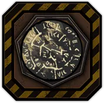
그을린 원반X - 기본 효과
화상 상태인 적이 사망하였을 경우(환상체일 경우, 본체 사망 시),
남은 화상 위력 수치의 절반만큼을 다음 턴 시작 시 화상 위력 수치가 제일 적은 적 중 하나에게 부여.
턴 시작 시 화상 상태인 적에게 이번 턴 동안 공격 레벨 감소 4 부여.
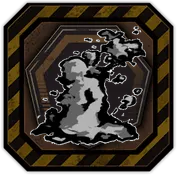
먼지에서 먼지로++ - 기본 효과
스테이지 시작 시, 모든 적(환상체일 경우, 무작위 부위 하나)에게 화상 위력 5, 화상 횟수 3 부여.
나태 완전 공명을 발동하였다면 전투 시작 시,
모든 적(환상체일 경우, 무작위 부위 하나)에게 화상 위력 3, 화상 횟수 2 부여. - + (1강) 효과
스테이지 시작 시, 모든 적(환상체일 경우, 무작위 부위 하나)에게 화상 위력 6, 화상 횟수 3 부여.
나태 완전 공명을 발동하였다면 전투 시작 시,
모든 적(환상체일 경우, 무작위 부위 하나)에게 화상 위력 4, 화상 횟수 2 부여. - ++ (2강) 효과
스테이지 시작 시, 모든 적(환상체일 경우, 무작위 부위 하나)에게 화상 위력 8, 화상 횟수 3 부여.
나태 공명을 발동하였다면 전투 시작 시,
모든 적(환상체일 경우, 무작위 부위 하나)에게 화상 위력 4, 화상 횟수 3 부여.
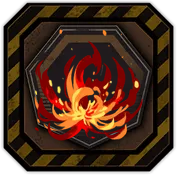
불빛꽃X - 기본 효과
[편성 1번, 2번 인격 전용 효과]
아군이 적을 공격할 때 대상의 남은 체력이 최대 체력의 (보유한 화상 위력)% 이하일 경우,
(환상체일 경우, 본체 체력으로 계산)
화상 위력 또는 화상 횟수 또는 특수 화상을 부여하는 공격 스킬로 입히는 피해량 +50%.
뜨거운 육즙 다리살X - 기본 효과
스킬로 적에게 화상 부여시 화상 횟수 3 증가. (턴 당 최대 3회)
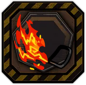
잔불X - 기본 효과
턴 시작 시, 화상 횟수가 2 이상, 8 미만인 모든 적(환상체일 경우, 모든 부위)의 화상 횟수 1~2 증가.
화상을 보유한 적이 아군으로부터 화상 위력, 화상 횟수 또는 특수 화상을 부여하는 공격 스킬로 5회 적중받을 경우,
(E.G.O 스킬 포함)
화상이 1회 발동하고 화상 횟수 1 감소. (적 별로 턴 당 2회, 환상체일 경우 부위 별로 계산)
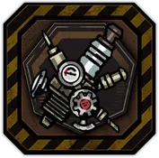
재점화 플러그X - 기본 효과
화상 횟수를 부여하는 기본 공격 스킬의 피해량 +20%, 화상 횟수 부여량 +1.
해당 스킬을 사용하여 화상 또는 특수 화상을 보유한 적에게 적중 시, 방어 레벨 감소 1 부여. (인격 별로 턴 당 2회)
모든 기본 공격 스킬이 화상 위력, 화상 횟수 또는 특수 화상을 부여하는 인격이 턴 시작 시,
생존한 턴만큼 공격 레벨 증가를 얻음. (등장 턴 제외, 최대 5)
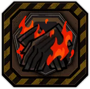
점화 장갑X - 기본 효과
화상 위력 또는 특수 화상을 부여하는 기본 공격 스킬로 적과 합 승리 시, 화상 위력 2 부여. (인격 별로 턴 당 2회)
화상 횟수를 부여하는 기본 공격 스킬로 적과 합 승리 시, 대상의 화상 횟수 2 증가. (적 별로 턴 당 3회)
화상 위력, 화상 횟수 또는 특수 화상을 부여하는 기본 공격 스킬이 각 스킬의 보유량만큼 공격 레벨이 증가. (최대 3) 해당 스킬의 보유량이 3개 이상인 경우, 공격 레벨이 2만큼 추가로 증가.
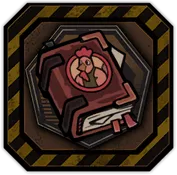
요리 비법 전서X - 기본 효과
턴 시작 시, 화상 위력, 화상 횟수 또는 특수 화상을 부여하는 공격 스킬을 보유한 인격이 5인 이상일 때 발동.
(E.G.O 스킬 제외, 출격 인원을 기준으로 함)
화상 위력, 화상 횟수 또는 특수 화상을 부여하는 스킬의 최종 위력 +1.
화상 위력, 화상 횟수 또는 특수 화상을 부여하는 스킬로 합 승리 시,
(남은 코인 수/2+1)만큼 대상 적에게 화상 위력을 부여.
- 기본 효과
-
IV
E.G.O GIFT 최대 강화 효과 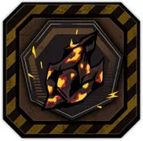
불꽃의 편린++ - 기본 효과
턴 종료 시, 화상 상태인 적에게 대상이 보유한 화상 횟수의 절반만큼을 소모하여
(화상 위력 (파열 위력 X 파열 횟수) 만큼의 탐식 피해를 입음. (파열 횟수 최대 5까지 적용) 소모한 화상 횟수)만큼 추가 분노 피해를 입힘. (화상 횟수 최대 5 소모)
불꽃의 편린 효과로 소모한 화상 횟수의 절반만큼, 다음 턴 동안 대상의 방어 레벨 감소. (최대 3) - + (1강) 효과
턴 종료 시, 화상 상태인 적에게 대상이 보유한 화상 횟수의 절반만큼을 소모하여
(화상 위력 (파열 위력 X 파열 횟수) 만큼의 탐식 피해를 입음. (파열 횟수 최대 5까지 적용) 소모한 화상 횟수)만큼 추가 분노 피해를 입힘. (화상 횟수 최대 7 소모)
불꽃의 편린 효과로 소모한 화상 횟수의 절반만큼, 다음 턴 동안 대상의 방어 레벨 감소. (최대 5) - ++ (2강) 효과
턴 종료 시, 화상 상태인 적에게 대상이 보유한 화상 횟수의 절반만큼을 소모하여
(화상 위력 (파열 위력 X 파열 횟수) 만큼의 탐식 피해를 입음. (파열 횟수 최대 5까지 적용) 소모한 화상 횟수)만큼 추가 분노 피해를 입힘. (화상 횟수 최대 10 소모)
불꽃의 편린 효과로 소모한 화상 횟수의 절반만큼, 다음 턴 동안 대상의 방어 레벨 감소. (최대 8)
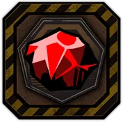
업화 조각X - 기본 효과
화상 위력, 화상 횟수 또는 특수 화상을 부여하는 E.G.O 스킬 사용시 발동.
소모하는 (분노 E.G.O 자원 +나머지 E.G.O 자원의 합/3)만큼 최종 위력이 증가, 피해량 +50%.
분노 속성 E.G.O 스킬의 경우, 효과가 강화되어
공격 시작 전에 화상 횟수를 추가로 부여
(ZAYIN의 경우 2, 등급이 오를수록 +1)하고 피해량 +(공격 가중치/공격 대상 수 (파열 위력 X 파열 횟수) 만큼의 탐식 피해를 입음. (파열 횟수 최대 5까지 적용) 20)%.
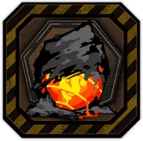
부화하지 않은 불씨++ - 기본 효과
사망할 정도의 피해를 입었다면,
해당 공격 동안 체력이 1로 유지되고 해당 공격 종료시 전체 체력의 20%만큼 회복함. (전투당 1회 발동) - + (1강) 효과
사망할 정도의 피해를 입었다면,
해당 공격 동안 체력이 1로 유지되고 해당 공격 종료시 전체 체력의 20%만큼 회복함. (전투당 1회 발동)
자신에게 화상이 있으면,
대신 해당 공격 동안 체력이 1로 유지되고 해당 공격 종료시 전체 체력의 30%만큼 회복함.
(위 효과와 합쳐 전투 당 1회 발동) - ++ (2강) 효과
사망할 정도의 피해를 입었다면,
해당 공격 동안 체력이 1로 유지되고 해당 공격 종료시 전체 체력의 20%만큼 회복함. (전투당 1회 발동)
자신에게 화상이 있으면,
대신 해당 공격 동안 체력이 1로 유지되고 해당 공격 종료시 전체 체력의 40%만큼 회복함.
(위 효과와 합쳐 전투 당 1회 발동)
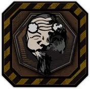
진혼X - 기본 효과
턴 시작 시, 화상 위력, 화상 횟수 또는 특수 화상을 부여하는 공격 스킬을 보유한 인격이 5인 이상일 때 발동.
(E.G.O 스킬 제외, 출격 인원을 기준으로 함)
웨이브 첫 번째 턴 시작 시,
모든 적(환상체일 경우, 모든 부위)에게 화상 횟수 3을 부여하고 화상 위력 15를 무작위로 나누어 부여.
화상 위력, 화상 횟수 또는 특수 화상을 부여하는 스킬의
최종 위력 +1, 코인 위력 +1, 화상 위력 부여 값 +1, 화상 횟수 부여 값 +1.
화상 위력, 화상 횟수 또는 특수 화상을 부여하는 스킬로 합 승리 시,
(남은 코인 수 + 1)만큼 대상 적에게 화상 위력을 부여.

훔쳐온 불꽃X - 기본 효과
턴 시작 시, 화상 위력, 화상 횟수 또는 특수 화상을 부여하는 공격 스킬을 보유한 인격이 5인 이상일 때 발동.
(E.G.O 스킬 제외, 출격 인원을 기준으로 함)
스킬(E.G.O 스킬 포함) 적중 시 대상의 화상 횟수가 3 이상이면,
대상의 화상을 1회 발동함. (화상 횟수 1 감소, 스킬당 1회 발동)
턴 종료 시, 화상 횟수를 3 이상 보유한 적이 화상을 1회 더 발동함. (화상 횟수 1 감소)
화상 상태인 적이 사망하였을 경우(환상체일 경우, 본체 사망 시),
남은 화상 위력 수치만큼을 다음 턴 시작 시 화상 위력 수치가 제일 적은 적 중 하나에게 부여.
턴 종료 시 화상 상태인 적에게 이번 턴 동안 공격 레벨 감소 4 부여.
화상을 보유한 적이 사망하였을 경우, 다음 턴 시작 시,
화상 부여 스킬을 보유한 아군 (사망한 적의 화상 위력/15)명이 피해량 증가 2 얻음. (턴 당 1회 발동)
- 기본 효과
-
-
출혈-
I
E.G.O GIFT 최대 강화 효과
녹슨 입마개++ - 기본 효과
스킬을 사용하여 적에게 적중 시 12 이상의 체력 피해를 입혔다면,
대상에게 출혈 위력 2 부여.
참격 스킬을 사용할 경우, 효과가 강화되어 출혈 위력 4 부여. - + (1강) 효과
스킬을 사용하여 적에게 적중 시 12 이상의 체력 피해를 입혔다면,
대상에게 출혈 위력 3 부여.
참격 스킬을 사용할 경우, 효과가 강화되어 출혈 위력 5 부여. - ++ (2강) 효과
스킬을 사용하여 적에게 적중 시 1 이상의 체력 피해를 입혔다면,
대상에게 출혈 위력 3 부여.
참격 스킬을 사용할 경우, 효과가 강화되어 출혈 위력 5, 출혈 횟수 1 부여.
늘어붙은 쇠말뚝X - 기본 효과
단일 코인 스킬을 사용하여 적에게 적중 시,
대상에게 출혈 위력 1 부여하고 다음 턴까지 방어 레벨 감소 2 부여.
대상이 출혈 상태일 경우, 효과가 강화되어 출혈 위력 3 부여.

억류된 찬송++ - 기본 효과
전투 시작 시 모든 적(환상체의 경우, 모든 부위)이 출혈에 걸린 경우,
다음 턴에 모든 아군이 신속 1 얻음. - + (1강) 효과
전투 시작 시 모든 적(환상체의 경우, 모든 부위)이 출혈에 걸린 경우,
다음 턴에 모든 아군이 신속 1, 피해량 증가 1 얻음. - ++ (2강) 효과
전투 시작 시 모든 적(환상체의 경우, 모든 부위)이 출혈에 걸린 경우,
다음 턴에 모든 아군이 신속 2, 피해량 증가 1, 공격 레벨 증가 2 얻음.
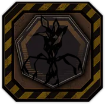
옭아맨 타래++ - 기본 효과
속도가 제일 빠른 아군이 출혈 위력, 출혈 횟수 또는 특수 출혈을 부여하는 스킬을 사용하여
적에게 피해를 입힐 경우, 피해량 +12.5%. - + (1강) 효과
속도가 제일 빠른 아군 둘이 출혈 위력, 출혈 횟수 또는 특수 출혈을 부여하는 스킬을 사용하여
적에게 피해를 입힐 경우, 피해량 +15%. - ++ (2강) 효과
속도가 제일 빠른 아군 셋이 출혈 위력, 출혈 횟수 또는 특수 출혈을 부여하는 스킬을 사용하여
적에게 피해를 입힐 경우, 피해량 +20%.
- 기본 효과
-
II
E.G.O GIFT 최대 강화 효과 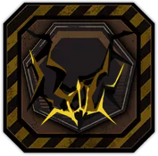
경외심++ - 기본 효과
[편성 1번, 2번 인격 전용 효과]
출혈 위력, 출혈 횟수 또는 특수 출혈을 부여하는 스킬 사용 시,
메인 공격 대상의 출혈 횟수가 7 이상이면 피해량 +10%. - + (1강) 효과
[편성 1번, 2번, 3번 인격 전용 효과]
출혈 위력, 출혈 횟수 또는 특수 출혈을 부여하는 스킬 사용 시,
메인 공격 대상의 출혈 횟수가 5 이상이면 피해량 +15%. - ++ (2강) 효과
[편성 1번, 2번, 3번 인격 전용 효과]
출혈 위력, 출혈 횟수 또는 특수 출혈을 부여하는 스킬 사용 시,
메인 공격 대상의 출혈 횟수가 3 이상이면 피해량 +20%.
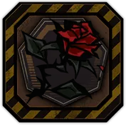
밀라르카X - 기본 효과
출혈 위력, 출혈 횟수 또는 특수 출혈을 부여하는 스킬의 합 위력 +1.
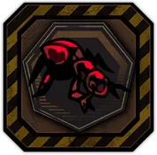
상처붙이++ - 기본 효과
출혈 위력 또는 특수 출혈을 부여하는 스킬을 사용하여 적에게 적중 시,
대상에게 출혈 위력 4 부여. - + (1강) 효과
출혈 위력 또는 특수 출혈을 부여하는 스킬 또는 분노 속성의 스킬을 사용하여 적에게 적중 시,
대상에게 출혈 위력 5 부여. - ++ (2강) 효과
출혈 위력 또는 특수 출혈을 부여하는 스킬 또는 분노 속성의 스킬을 사용하여 적에게 적중 시,
대상에게 출혈 위력 5, 출혈 횟수 1 부여.
작고 나쁠 인형X - 기본 효과
전투 시작 단계에서 출혈에 걸린 적에게 가하는 피해량 +10%.
전투 시작 단계에서 출혈에 걸린 적에게 대상에게 받는 피해량 -20%.
오만 속성 공격 스킬을 보유한 아군의 경우, 효과가 강화되어 출혈에 걸린 적에게 가하는 피해량 +20%.
오만 속성 공격 스킬을 보유한 아군의 경우, 효과가 강화되어 출혈에 걸린 적에게 받는 피해량 -30%.
흰 목화++ - 기본 효과
턴 시작 시 흐트러짐 상태인 적들이 있을 경우,
대상은 흐트러짐 상태에서 풀려나는 대신 (8 + 흐트러짐 단계 (파열 위력 X 파열 횟수) 만큼의 탐식 피해를 입음. (파열 횟수 최대 5까지 적용) 4)만큼 출혈 위력을 얻고
그 수치의 절반만큼 대상에게 공격 레벨 감소 부여.
(동일한 적에게는 전투 당 1회 발동하며, 흐트러짐 상태에서 풀려나지 않는 특정 적에게는 발동하지 않음) - + (1강) 효과
턴 시작 시 흐트러짐 상태인 적들이 있을 경우,
대상은 흐트러짐 상태에서 풀려나는 대신 (10 + 흐트러짐 단계 (파열 위력 X 파열 횟수) 만큼의 탐식 피해를 입음. (파열 횟수 최대 5까지 적용) 4)만큼 출혈 위력을 얻고
그 수치 만큼 대상에게 공격 레벨 감소 부여.
(동일한 적에게는 전투 당 1회 발동하며, 흐트러짐 상태에서 풀려나지 않는 특정 적에게는 발동하지 않음) - ++ (2강) 효과
턴 시작 시 흐트러짐 상태인 적들이 있을 경우,
대상은 흐트러짐 상태에서 풀려나는 대신 (12 + 흐트러짐 단계 (파열 위력 X 파열 횟수) 만큼의 탐식 피해를 입음. (파열 횟수 최대 5까지 적용) 6)만큼 출혈 위력을 얻고
그 수치 만큼 대상에게 공격 레벨 감소와 방어 레벨 감소 부여.
(동일한 적에게는 전투 당 1회 발동하며, 흐트러짐 상태에서 풀려나지 않는 특정 적에게는 발동하지 않음)

못과 망치의 책X - 기본 효과
아군이 출혈 위력, 출혈 횟수 또는 특수 출혈을 부여하는 스킬로 적과 합하여 승리 시,
못 1 ~ 2 부여.
N사 광신도 소속일 경우, 턴 시작 시 광신 1 얻음.
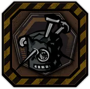
불결함X - 기본 효과
아군이 출혈 위력, 출혈 횟수 또는 특수 출혈을 부여하는 스킬로 출혈 상태인 적을 공격할 경우,
대상에게 입히는 피해량 +15%.
적의 체력이 최대 체력의 33% 이하인 경우,
효과가 강화되어 입히는 피해량 +25%.
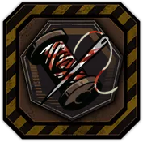
오염된 실과 바늘X - 기본 효과
매 턴마다 처음으로 적에게 피해를 입힌 스킬에 적용.
(피해량 / 3)만큼 출혈 위력을 부여.
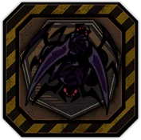
치사랑X - 기본 효과
기본 공격 스킬 효과로 출혈 위력 또는 특수 출혈을 적에게 부여할 때마다
대상에게 출혈 횟수 2 증가. (모든 인격 합하여 턴 당 3회 발동)
대상의 출혈 횟수당 피해량 +1%. (최대 20%)
- 기본 효과
-
III
E.G.O GIFT 최대 강화 효과 
녹슨 커터 나이프++ - 기본 효과
흐트러짐 상태가 아닌 적에게 스킬 효과로 출혈 위력 또는 특수 출혈을 부여할 때마다
대상에게 출혈 위력 1, 출혈 횟수 1 부여.
색욕 속성 스킬을 사용한 경우, 효과가 강화되어 출혈 위력 3, 출혈 횟수 1 부여. - + (1강) 효과
스킬 효과로 출혈 위력 또는 특수 출혈을 부여할 때마다
대상에게 출혈 위력 2, 출혈 횟수 1 부여.
색욕 속성 스킬을 사용한 경우, 효과가 강화되어 출혈 위력 3, 출혈 횟수 1 부여. - ++ (2강) 효과
스킬 효과로 출혈 위력 또는 특수 출혈을 부여할 때마다
대상에게 출혈 위력 3, 출혈 횟수 1 부여.
색욕 속성 스킬을 사용한 경우, 효과가 강화되어 출혈 위력 3, 출혈 횟수 2 부여.
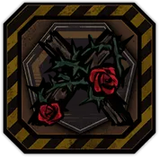
안식처X - 기본 효과
[편성 1번, 2번 인격 전용 효과]
출혈 위력, 출혈 횟수 또는 특수 출혈을 부여하는 스킬을 사용하여 합 승리 시 발동
(남은 코인 수/2)만큼 대상에게 출혈 횟수를 부여하고 다음 턴에 그 수치만큼 공격 레벨 증가 얻음.
코인 수가 2 이하인 스킬의 경우, 효과가 강화되어 그 수치가 (남은 코인 수+3)로 적용됨.
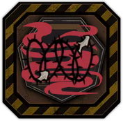
연기와 철조망++ - 기본 효과
아군이 스킬 효과로 적에게 부여하는 출혈 위력 수치가 2배로 적용.
턴 종료 시 출혈 상태인 적들이 다음 턴에 속도가 2만큼 감소. - + (1강) 효과
아군이 스킬 효과로 적에게 부여하는 출혈 위력 수치가 2배로 적용.
턴 종료 시 출혈 상태인 적들이 다음 턴에 속도가 3만큼 감소. - ++ (2강) 효과
아군이 스킬 효과로 적에게 부여하는 출혈 위력 수치가 2.5배로 적용.
턴 종료 시 출혈 상태인 적들이 다음 턴에 속도가 3만큼 감소.
찢어진 피주머니X - 기본 효과
아군이 합 승리 시, 적의 출혈을 1회 발동시킴 (턴 당 3회 발동).
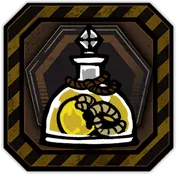
갇힌 구더기X - 기본 효과
적에게 탐식 속성 공격 스킬 사용 시,
대상에게 구더기 2 부여. (E.G.O 스킬 제외)
출혈 위력, 출혈 횟수 또는 특수 출혈을 부여하는 스킬일 경우에는 효과가 강화되어
대상에게 구더기 3 부여.
조각난 칼날X - 기본 효과
이번 전투 동안 공격 스킬 효과로 적에게 출혈 위력 또는 특수 출혈을 처음으로 부여할 경우,
출혈 횟수 2 추가로 부여. (전투 당 1회)
흑운회 소속일 경우 효과가 강화되어
적에게 처음으로 피해를 주었을 경우 출혈 위력 4, 출혈 횟수 4 추가로 부여.
라만차랜드 자유이용권X - 기본 효과
출혈, 특수 출혈과 파열의 합이 10 이상 부여된 적에게 공격 적중 시
호흡 위력 1을 얻음, 자신의 호흡 횟수 1 증가. (스킬당 최대 2회 발동)
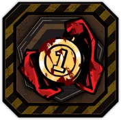
승리의 증표X - 기본 효과
적 처치 시 현재 정신력이 가장 낮은 아군 1명의 정신력 3 회복.
공격 종료 시 출혈, 특수 출혈과 파열의 합이 10 이상 부여된 적이 사망한 경우,
다음 턴에 아군 중 1명이 공격 레벨 증가 2 얻음. (대상을 처치한 아군에게 우선으로 부여)
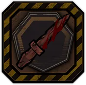
치성X - 기본 효과
턴 시작 시, 출혈 위력, 출혈 횟수 또는 특수 출혈을 부여하는 공격 스킬을 보유한 인격이 5인 이상일 때 발동.
(E.G.O 스킬 제외, 출격 인원을 기준으로 함)
속도가 가장 빠른 아군 1명의 출혈 위력, 출혈 횟수 또는 특수 출혈을 부여하는 스킬의 코인 위력 +1, 피해량 +50%.
출혈 위력, 출혈 횟수 또는 특수 출혈을 부여하는 스킬의 최종 위력 +1.
- 기본 효과
-
IV
E.G.O GIFT 최대 강화 효과 
매혹 조각X - 기본 효과
출혈 위력, 출혈 횟수 또는 특수 출혈을 부여하는 E.G.O 스킬 사용 시 발동.
소모하는 (색욕 E.G.O 자원 +나머지 E.G.O 자원의 합/3)만큼 최종 위력이 증가, 피해량 +50%.
색욕 속성 E.G.O 스킬의 경우, 효과가 강화되어
공격 시작 전에 출혈 횟수를 추가로 부여(E.G.O 등급에 비례하며 ZAYIN의 경우 2, 등급이 오를수록 +1)하고
대상이 보유한 출혈 위력만큼 색욕 피해 추가로 입힘.
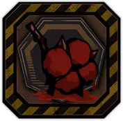
붉게 물든 목화++ - 기본 효과
스테이지 첫 턴 시작 시, 모든 적(환상체일 경우, 모든 부위)에게 출혈 위력 1, 출혈 횟수 15 부여.
턴 시작 시 출혈 상태인 적의 공격 레벨과 방어 레벨이 이번 턴 동안 (출혈 위력 / 3)만큼 감소.
(출혈 위력 30 스택 시, 효과 최대) - + (1강) 효과
웨이브 첫 턴 시작 시, 모든 적(환상체일 경우, 모든 부위)에게 출혈 위력 2, 출혈 횟수 15 부여.
턴 시작 시 출혈 상태인 적의 공격 레벨과 방어 레벨이 이번 턴 동안 (출혈 위력 / 3)만큼 감소.
(출혈 위력 30 스택 시, 효과 최대) - ++ (2강) 효과
웨이브 첫 턴 시작 시, 모든 적(환상체일 경우, 모든 부위)에게 출혈 위력 4, 출혈 횟수 20 부여.
턴 시작 시 출혈 상태인 적의 공격 레벨과 방어 레벨이 이번 턴 동안 (출혈 위력 / 2)만큼 감소.
(출혈 위력 30 스택 시, 효과 최대)
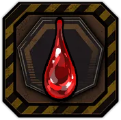
떨어진 한 방울X - 기본 효과
혈찬을 소모하는 스킬을 보유한 인격이 3인 이상일 때 발동.
(E.G.O 스킬 제외, 대기 인원 제외)
혈찬을 소모하는 스킬의 사용 전, 공격 대상의 출혈 위력이 30 이상일 때,
대상의 출혈 위력을 15로 감소시키고, 감소한 출혈 위력만큼 혈찬을 생성함.
(턴 당 적 전체에서 1회 발동, 광역 스킬의 경우 메인 타겟에게만 적용됨)
해당 효과로 생성한 혈찬 10 당, 혈찬을 소모하는 스킬을 보유한 인격에게
다음 턴에 위력 증가 1, 피해량 증가 1 부여. (최대 4)
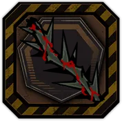
탐하는 가시X - 기본 효과
3턴마다, 출혈이 있는 적 (부위)에 탐식극(貪食棘)을 2 부여함.
모든 적 (부위)에 출혈이 있으면, 탐식극(貪食棘)을 4 부여함.
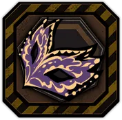
퍼레이드의 가면+ - 기본 효과
적이 증원되는 전투에서 새로운 적이 등장하면,
전투 시작 시 해당 적에게 출혈 3, 출혈 횟수 2 부여.
아군에 <혈귀>가 있다면, 적이 증원될 때 모든 적의 출혈을 1회 발동시키고,
모든 적의 출혈 횟수 1 감소. - + (1강) 효과
적이 증원되는 전투에서 새로운 적이 등장하면,
전투 시작 시 해당 적에게 출혈 5, 출혈 횟수 3 부여.
아군에 <혈귀>가 있다면, 적이 증원될 때 모든 적의 출혈을 1회 발동시키고,
모든 적의 출혈 횟수 1 감소.

피안개X - 기본 효과
턴 시작 시, 출혈 위력, 출혈 횟수 또는 특수 출혈을 부여하는 공격 스킬을 보유한 인격이 5인 이상일 때 발동.
(E.G.O 스킬 제외, 출격 인원을 기준으로 함)
아군이 스킬 효과로 적에게 부여하는 출혈 위력과 출혈 횟수가 2배로 적용.
턴 시작 시 편성 순서가 제일 빠른 아군의
출혈 위력, 출혈 횟수 또는 특수 출혈을 부여하는 스킬의 코인 위력 +2, 피해량 +100%.
해당 캐릭터가 공격하거나, 합을 진행한 적이 사망했으면,
사망한 적의 남은 출혈 위력을 모든 적에게 무작위로 나눠서 부여. (집중 전투인 경우, 부위로 판정)
출혈 위력, 횟수 또는 특수 출혈을 부여하는 스킬의 코인 위력 +1.

출혈성 쇼크X - 기본 효과
턴 시작 시, 출혈 위력, 출혈 횟수 또는 특수 출혈을 부여하는 공격 스킬을 보유한 인격이 5인 이상일 때 발동.
(E.G.O 스킬 제외, 출격 인원을 기준으로 함)
아군이 합 승리 시, 적의 출혈을 1회 발동시킴. (아군 1명당 턴 당 1회)
적이 출혈 피해로 흐트러질 수 있으며, 적이 합 진행 중 출혈 피해로 흐트러지면,
적의 남은 코인 수만큼 출혈을 발동시킴.
모든 적이 출혈이 부여되어 있으면 방어 레벨 2 감소.
턴 종료 시 (출혈이 발동한 횟수 (파열 위력 X 파열 횟수) 만큼의 탐식 피해를 입음. (파열 횟수 최대 5까지 적용) 2)만큼 다음 턴에 방어 레벨 감소를 얻음. (최대 20)
스킬 효과로 출혈 위력 또는 특수 출혈을 부여할 때마다 대상에게 출혈 위력 3, 출혈 횟수 1 부여.
완전함X - 기본 효과
아군이 출혈 위력, 출혈 횟수 또는 특수 출혈을 부여하는 스킬로 적과 합하여 승리 시, 못 2 ~ 3 부여.
N사 N사 광신도 소속 인격이 출혈 상태인 적을 공격할 때 피해량 +25%,
시작 시 광신 1 얻음.
해당 소속 인격의 정신력이 최대일 경우, 피해량 증가 3을 추가로 얻음.
N사 광신도 소속 인격의 최종 위력 +1, 더하기 코인 위력 +1, 빼기 코인 위력 -1, 공격 스킬의 못 부여량 +1.

절경X - 기본 효과
턴 시작 시, 흑운회 소속 인격이 3인 이상일 때 발동.
아군이 턴 시작 시 색욕 위력 증가 2, 참격 위력 증가 1 얻음,
흑운회 소속 인격이 사용하는 기본 공격 스킬의
코인 위력 +(4 / 코인 수, 최소 1), 출혈 위력 부여량 +1, 출혈 횟수 부여량 +1, 피해량 +(80 / 코인 수)%.
흑운회 소속 인격의 첫 흐트러짐 구간을 무효로 하고, 체력이 최대 체력의 50% 미만이면 턴 시작 시 보호 2 얻음.
이번 턴에 적에게 피해를 받은 흑운회 소속 인격이 다음 턴에 신속 2 얻음.
- 기본 효과
-
-

진동-
I
E.G.O GIFT 최대 강화 효과 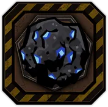
극독성 외피++ - 기본 효과
진동 위력 또는 진동 횟수를 부여하는 스킬(본인 또는 아군을 대상으로 하는 경우 포함)을 사용하여 합 승리 시,
(남은 코인 수/2)만큼 대상 적에게 진동 위력 부여. - + (1강) 효과
진동 위력 또는 진동 횟수를 부여하는 스킬(본인 또는 아군을 대상으로 하는 경우 포함)을 사용하여 합 승리 시,
남은 코인 수만큼 대상 적에게 진동 위력 부여. - ++ (2강) 효과
진동 위력 또는 진동 횟수를 부여하는 스킬(본인 또는 아군을 대상으로 하는 경우 포함)을 사용하여 합 승리 시,
남은 코인 수만큼 대상 적에게 진동 위력과 (남은 코인 수/2)만큼 진동 횟수 부여.

닉시 다이버전스++ - 기본 효과
스테이지 첫 턴 시작 시, 적 전체(환상체일 경우, 모든 부위)에게 진동 위력 4, 진동 횟수 4 부여.
질투 속성 스킬을 사용하여 적에게 적중 시, 대상에게 진동 위력 2 부여. - + (1강) 효과
웨이브 첫 턴 시작 시, 적 전체(환상체일 경우, 모든 부위)에게 진동 위력 4, 진동 횟수 4 부여.
질투 속성 스킬을 사용하여 적에게 적중 시, 대상에게 진동 위력 2 부여. - ++ (2강) 효과
웨이브 첫 턴 시작 시, 적 전체(환상체일 경우, 모든 부위)에게 진동 위력 5, 진동 횟수 5 부여.
질투 속성 스킬을 사용하여 적에게 적중 시, 대상에게 진동 위력 3 부여.

보석 진동자X - 기본 효과
진동 횟수를 소모한 스킬로 합 승리시, 대상에게 진동이 없다면 대상의 진동 횟수 2 증가.
해당 공격 스킬을 포함하여 나태 공명 3 이상이면, 대신 대상의 진동 횟수 3 증가.
초록빛 결실++ - 기본 효과
흐트러짐 상태가 아닌 적에게 탐식 속성 스킬을 사용하여 적중하였거나,
또는 스킬 효과로 진동 위력을 부여할 경우,
모든 적(환상체일 경우, 모든 부위)에게 진동 위력 4 무작위로 나누어 부여. - + (1강) 효과
흐트러짐 상태가 아닌 적에게 탐식 속성 스킬을 사용하여 적중하였거나,
또는 스킬 효과로 진동 위력을 부여할 경우,
모든 적(환상체일 경우, 모든 부위)에게 진동 위력 6 무작위로 나누어 부여. - ++ (2강) 효과
흐트러짐 상태가 아닌 적에게 탐식 속성 스킬을 사용하여 적중하였거나,
또는 스킬 효과로 진동 위력을 부여할 경우,
모든 적(환상체일 경우, 모든 부위)에게 진동 위력 8 무작위로 나누어 부여.
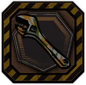
기름때 찌든 스패너X - 기본 효과
타격 스킬의 피해량 +10%.
타격 스킬 마지막 코인 적중 시, 적에게 진동 위력 2 부여. (턴당 1회)
- 기본 효과
-
II
E.G.O GIFT 최대 강화 효과 
감합된 톱니바퀴X - 기본 효과
턴 시작 시, 진동 위력, 진동 횟수 또는 특수 진동을 부여하는 공격 스킬을 보유한 인격이 5인 이상일 때 발동.
(E.G.O 스킬 제외, 출격 인원을 기준으로 함) 이번 턴에 대상에게 진동 폭발을 6회 부여하였을 경우,
대상의 현재 체력 기준 0%에 새로운 흐트러짐 구간 추가. (전투 당 1회 발동)
진폭 변환, 진폭 얽힘 시 취약 1 부여. (턴 당 최대 1회)
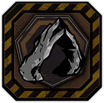
거울 촉각 공감각X - 기본 효과
아군이 진동 위력 또는 진동 횟수를 부여하는 스킬(본인 또는 아군을 대상으로 하는 경우 포함)로
적을 흐트러뜨릴 경우, (E.G.O 스킬 제외)
다음 턴에 대상이 보유한 진동 위력의 1/3만큼을
다른 무작위 적들(환상체일 경우, 무작위 부위)에게 진동 위력을 나누어 부여함.
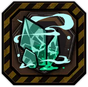
시큼한 주향++ - 기본 효과
[편성 1번, 2번 인격 전용 효과]
진동 위력 또는 진동 횟수를 부여하는 스킬(본인 또는 아군을 대상으로 하는 경우 포함)의 공격 레벨 +2.
메인 공격 대상이 진동 상태이고 흐트러진 경우, 스킬로 가하는 피해량 +(흐트러짐 단계 (파열 위력 X 파열 횟수) 만큼의 탐식 피해를 입음. (파열 횟수 최대 5까지 적용) 7.5)%.
진동 위력 또는 진동 횟수를 부여하는 스킬로 적을 공격할 경우,
효과가 강화되어 피해량 +(흐트러짐 단계 (파열 위력 X 파열 횟수) 만큼의 탐식 피해를 입음. (파열 횟수 최대 5까지 적용) 15)%. - + (1강) 효과
[편성 1번, 2번, 3번 인격 전용 효과]
진동 위력 또는 진동 횟수를 부여하는 스킬(본인 또는 아군을 대상으로 하는 경우 포함)의 공격 레벨 +2.
메인 공격 대상이 진동 상태이고 흐트러진 경우, 스킬로 가하는 피해량 +(흐트러짐 단계 (파열 위력 X 파열 횟수) 만큼의 탐식 피해를 입음. (파열 횟수 최대 5까지 적용) 10)%.
진동 위력 또는 진동 횟수를 부여하는 스킬로 적을 공격할 경우,
효과가 강화되어 피해량 +(흐트러짐 단계 (파열 위력 X 파열 횟수) 만큼의 탐식 피해를 입음. (파열 횟수 최대 5까지 적용) 20)%. - ++ (2강) 효과
[편성 1번, 2번, 3번 인격 전용 효과]
진동 위력 또는 진동 횟수를 부여하는 스킬(본인 또는 아군을 대상으로 하는 경우 포함)의 공격 레벨 +3.
메인 공격 대상이 진동 상태이고 흐트러진 경우, 스킬로 가하는 피해량 +(흐트러짐 단계 (파열 위력 X 파열 횟수) 만큼의 탐식 피해를 입음. (파열 횟수 최대 5까지 적용) 12.5)%.
진동 위력 또는 진동 횟수를 부여하는 스킬로 적을 공격할 경우,
효과가 강화되어 피해량 +(흐트러짐 단계 (파열 위력 X 파열 횟수) 만큼의 탐식 피해를 입음. (파열 횟수 최대 5까지 적용) 25)%.
잔향++ - 기본 효과
턴 종료 시, 진동 위력을 10 이상 보유한 적(환상체일 경우, 해당 부위)에게 다음 턴에 속박 2 부여.
대상이 진동 위력을 20 이상 보유한 경우, 효과가 강화되어 속박 2, 마비 1 부여. - + (1강) 효과
턴 종료 시, 진동 위력을 8 이상 보유한 적(환상체일 경우, 해당 부위)에게
다음 턴에 속박 2, 방어 레벨 감소 2 부여.
대상이 진동 위력을 15 이상 보유한 경우, 효과가 강화되어 속박 2, 마비 1, 방어 레벨 감소 2 부여. - ++ (2강) 효과
턴 종료 시, 진동 위력을 5 이상 보유한 적(환상체일 경우, 해당 부위)에게
다음 턴에 속박 2, 방어 레벨 감소 3 부여.
대상이 진동 위력을 10 이상 보유한 경우, 효과가 강화되어 속박 2, 마비 1, 방어 레벨 감소 4 부여.
진동형 팔찌++ - 기본 효과
스킬을 사용하여 적에게 적중 시, 다음 턴에 대상에게 진동 위력 1 부여.
분노 속성 스킬을 사용할 경우, 효과가 강화되어 진동 위력 2 부여. - + (1강) 효과
스킬을 사용하여 적에게 적중 시, 다음 턴에 대상에게 진동 위력 1 부여.
분노 속성 스킬을 사용할 경우, 효과가 강화되어 진동 위력 3 부여. - ++ (2강) 효과
스킬을 사용하여 적에게 적중 시, 다음 턴에 대상에게 진동 위력 2 부여.
분노 속성 스킬을 사용할 경우, 효과가 강화되어 진동 위력 4 부여.

흔들리는 술통X - 기본 효과
턴 시작 시, 자신의 진동 횟수가 8 이상이면 합 위력 +1.
자신의 진동 횟수를 소모하는 스킬로 적으 처치하거나 흐트러짐 상태로 만들었으면,
(소모된 진동 횟수 / 4)만큼 자신의 진동 횟수 증가. (스킬당 1회)
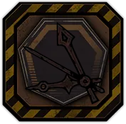
녹슨 시계침X - 기본 효과
웨이브 첫 턴 시작 시, 속도가 제일 높은 적 1명에게
(9-현재 속도)만큼 진동 위력(최소 3)과 그 수치의 절반만큼 진동 횟수를 부여.
(올림하여 처리. 환상체일 경우 부위 하나)
턴 시작 시 진동 또는 특수 진동을 12 이상 보유한 적에게 받는 피해량 -10%.

빛바랜 시계 케이스X - 기본 효과
자신보다 속도가 높은 적과 합 진행 시, 합 위력 +1.
자신보다 속도가 높은 적에게 피해를 가할 때,
대상에게 진동 위력 3, 진동 횟수 2 부여. (턴 당 1회)

에칭 시계침X - 기본 효과
웨이브 첫 턴 시작 시, 속도가 제일 낮은 적 3명에게
(9-현재 속도)만큼 진동 위력 부여. (최소 3)
턴 시작 시 진동 또는 특수 진동을 12 이상 보유한 적을 대상으로 가하는 피해량 +10%.
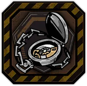
은빛 시계 케이스X - 기본 효과
진동 위력 또는 진동 횟수 또는 특수 진동을 부여하는
공격 스킬(E.G.O 스킬 제외)로 적에게 피해를 입힐 때, 가하는 피해량 +10%.
해당 스킬로 적에게 이번 턴 동안 진동 폭발을 적용하였다면,
다음 턴에 진동 횟수 2 부여. (턴 당 1회)
- 기본 효과
-
III
E.G.O GIFT 최대 강화 효과
녹아내린 눈알X - 기본 효과
진동 폭발된 적에게 다음 턴에 공격 레벨 감소 5와 방어 레벨 감소 5 부여. (턴 당 최대 3회)
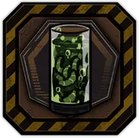
생체 맹독 바이알++ - 기본 효과
진동 위력을 보유한 적이 사망할 경우,
대상이 보유한 (진동 위력과 진동 횟수의 합 (파열 위력 X 파열 횟수) 만큼의 탐식 피해를 입음. (파열 횟수 최대 5까지 적용) 0.5)만큼
다음 턴에 무작위 적 하나(환상체일 경우, 무작위 부위)에게 나태 피해를 입힘. - + (1강) 효과
진동 위력을 보유한 적이 사망할 경우,
대상이 보유한 (진동 위력과 진동 횟수의 합 (파열 위력 X 파열 횟수) 만큼의 탐식 피해를 입음. (파열 횟수 최대 5까지 적용) 0.75)만큼
다음 턴에 무작위 적 하나(환상체일 경우, 무작위 부위)에게 나태 피해를 입힘. - ++ (2강) 효과
진동 위력을 보유한 적이 사망할 경우,
대상이 보유한 (진동 위력과 진동 횟수의 합 (파열 위력 X 파열 횟수) 만큼의 탐식 피해를 입음. (파열 횟수 최대 5까지 적용) 1.25)만큼
다음 턴에 무작위 적 하나(환상체일 경우, 무작위 부위)에게 나태 피해를 입힘.
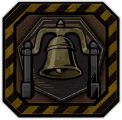
진실의 종++ - 기본 효과
진동 폭발이 적용된 적에게 이번 턴에 취약 1 부여.
(공격 스킬을 사용하여 진동 폭발 부여 시, 스킬 당 최대 1회) - + (1강) 효과
진동 폭발이 적용된 적에게 이번 턴과 다음 턴에 취약 1 부여.
(공격 스킬을 사용하여 진동 폭발 부여 시, 스킬 당 최대 1회) - ++ (2강) 효과
진동 폭발이 적용된 적에게 이번 턴과 다음 턴에 취약 2 부여.
(공격 스킬을 사용하여 진동 폭발 부여 시, 스킬 당 최대 1회)
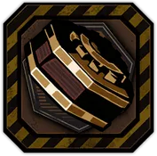
톱니바퀴 태엽X - 기본 효과
[편성 1번, 2번 인격 전용 효과]
진동 위력 또는 진동 횟수를 부여하는 스킬(본인 또는 아군을 대상으로 하는 경우 포함)의 합 위력 +1.
진동 상태인 적에게 진동 위력 또는 진동 횟수를 부여하는 공격 스킬로 피해를 입힐 경우,
피해량 +(적이 보유한 진동 위력+5)% (E.G.O 스킬 제외).
오만 속성 스킬일 경우, 효과가 강화되어
피해량 +(적이 보유한 진동 위력과 진동 횟수의 합+5)%.
낙수의 잔X - 기본 효과
진동 위력 또는 진동 횟수 또는 특수 진동을 부여하는 공격 스킬(E.G.O 스킬 제외)을 보유한 아군이
적과 합하여 승리 시 진동 위력 2, 진동 횟수 2 부여. (턴 당 2회)
유로지비 인격일 경우 효과가 강화되어, 진동 위력 3, 진동 횟수 3 부여. (턴 당 3회)
해당 인격이 자신보다 공격 레벨이 높은 적과 합 진행 시 합 위력 +2,
합하여 승리 시 가하는 피해량 +20%.
진원점X - 기본 효과
턴 시작 시, 진동 위력 또는 진동 횟수를 부여하는 공격 스킬을 보유한 인격이 5인 이상일 때 발동.
(E.G.O 스킬 제외, 출격 인원을 기준으로 함)
(인격이 스스로 진동 횟수를 얻는 경우에는 발동 x)
자신의 진동 횟수를 소모한 스킬로 합 승리시, 대상에게 진동이 없다면 대상의 진동 횟수 3 증가.
턴 시작 시 합 위력이 (자신의 진동 횟수/5)만큼 증가. (최대 3)
자신의 진동 횟수를 소모하는 스킬을 사용했을 때, 적 처치 혹은 흐트러짐 상태로 만들 경우,
(소모한 진동 횟수 / 2)만큼 자신의 진동 횟수 증가. (스킬당 1회)
손거울X - 기본 효과
웨이브 첫 턴 시작 시, 속도가 제일 낮은 적 둘
(환상체일 경우 무작위 부위 둘, 적이 단일 대상일 경우 효과가 중첩되지 않음)를 선택하여
다음 턴부터 턴 시작 시 속박 5, 방어 레벨 감소 3을 부여.
적이 흐트러짐에서 풀려날 때, 보유한 흐트러짐 구간이 없다면
대상의 현재 체력 기준 66%에 새로운 흐트러짐 구간 추가. (전투 당 3회)
아군이 진동 위력 또는 진동 횟수를 부여하는 공격 스킬(본인 또는 아군을 대상으로 하는 경우 포함)로
적을 흐트러뜨릴 경우 (E.G.O 스킬 제외), 다음 턴에 대상이 보유한 진동 위력의 절반만큼
다른 무작위 적들(환상체일 경우, 부위)에게 진동 위력을 나누어 부여하고,
흐트러진 대상은 보유한 진동 위력이 2배로 증가.
- 기본 효과
-
IV
E.G.O GIFT 최대 강화 효과 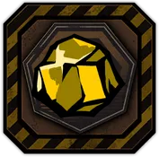
타성 조각X - 기본 효과
진동 위력 또는 진동 횟수 또는 특수 진동을 부여하는 E.G.O 스킬 사용 시 발동.
소모하는 (나태 E.G.O 자원 +나머지 E.G.O 자원의 합/3)만큼 최종 위력이 증가, 피해량 +50%.
나태 속성 E.G.O 스킬의 경우, 효과가 강화되어
공격 시작 전에 진동 횟수를 추가로 부여(ZAYIN의 경우 2, 등급이 오를수록 +1)하고,
피해량 +(대상이 보유한 진동 위력 x1.5)%.
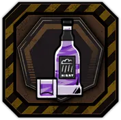
폭우++ - 기본 효과
턴 시작 시, 모든 적(환상체일 경우, 모든 부위)에게
진동 위력을 (현재 턴 (파열 위력 X 파열 횟수) 만큼의 탐식 피해를 입음. (파열 횟수 최대 5까지 적용) 2) 부여, 진동 횟수 2 부여.
턴 종료 시, 모든 적(환상체일 경우, 모든 부위)에게 진동 폭발 효과 부여.
- + (1강) 효과
턴 시작 시, 모든 적(환상체일 경우, 모든 부위)에게
진동 위력을 (3 + 현재 턴 (파열 위력 X 파열 횟수) 만큼의 탐식 피해를 입음. (파열 횟수 최대 5까지 적용) 2) 부여, 진동 횟수 3 부여.
턴 종료 시, 모든 적(환상체일 경우, 모든 부위)에게 진동 폭발 효과 부여.
- ++ (2강) 효과
턴 시작 시, 모든 적(환상체일 경우, 모든 부위)에게
진동 위력을 (5 + 현재 턴 (파열 위력 X 파열 횟수) 만큼의 탐식 피해를 입음. (파열 횟수 최대 5까지 적용) 2) 부여, 진동 횟수 3 부여.
턴 종료 시, 모든 적(환상체일 경우, 모든 부위)에게 진동 폭발 효과 2회 부여.

연성진동X - 기본 효과
턴 시작 시, 진동 위력 또는 진동 횟수를 부여하는 공격 스킬을 보유한 인격이 5인 이상일 때 발동.
(E.G.O 스킬 제외, 출격 인원을 기준으로 함)
웨이브 첫 턴 시작 시, 적 전체(환상체일 경우, 모든 부위)에 진동 5, 진동 횟수 5 부여.
진동 폭발이 적용된 적에게 이번 턴과 다음 턴에 진동 위력 5, 취약 2 부여.
(공격 스킬을 사용하여 진동 폭발 부여 시, 스킬 당 최대 1회)
이번 턴에 대상에게 진동 폭발을 3회 부여하였을 경우,
다음 턴 시작 시 대상을 흐트러뜨리고 현재 체력 기준 66%, 33%에 흐트러짐 구간 추가.
(전투 당 1회 발동)
진폭 변환, 진폭 얽힘 시 취약 1 부여. (턴 당 최대 3회)

무진팔방종X - 기본 효과
턴 시작 시, 진동 위력 또는 진동 횟수를 부여하는 공격 스킬을 보유한 인격이 5인 이상일 때 발동.
(E.G.O 스킬 제외, 출격 인원을 기준으로 함)
(인격이 스스로 진동 횟수를 얻는 경우에는 발동 x)
진동 위력 또는 진동 횟수를 부여하거나 자신의 진동 횟수를 소모한 스킬로 합 승리시,
남은 코인만큼 대상에게 진동 위력 부여. 대상에게 진동이 없으면, 대상의 진동 횟수 3 증가.
턴 시작 시 합 위력 증가를 1 + (자신의 진동 횟수/5)만큼 얻음. (최대 3)
자신의 진동 횟수를 소모하는 스킬을 사용했을 때, 적 처치 혹은 흐트러짐 상태로 만들 경우
(소모한 진동 횟수 / 2)만큼 자신의 진동 횟수 증가. (스킬당 1회)
자신의 진동 횟수를 소모하는 스킬의 피해량 +(자신이 소모한 진동 횟수 + 적이 보유한 진동 위력 + 5)%.
(E.G.O 스킬 제외, 최대 50%)

회중시계 : 타입 EX - 기본 효과
턴 시작 시, 진동 위력, 진동 횟수 또는 특수 진동을 부여하는 공격 스킬을 보유한 인격이 5인 이상일 때 발동.
(E.G.O 스킬 제외, 출격 인원을 기준으로 함)
진동 위력 또는 진동 횟수 또는 특수 진동을 부여하는 아군이 사용하는 3스킬의 코인 위력 +2, 피해량 +25%.
진동 위력 또는 진동 횟수 또는 특수 진동을 부여하는 아군이 자신보다 속도가 2 이상 느린 적에게 피해를 입힐 때
가하는 피해량 +(대상이 보유한 진동 위력, 최대 25)%, 피해를 입힐 때마다 방어 레벨 감소 2 부여. (최대 6)
웨이브 첫 턴 시작 시, 속도가 제일 높은 적 1명에게 (12-현재 속도)만큼
진동 위력(최소 6)과 그 수치의 절반만큼 진동 횟수를 부여. (올림하여 처리, 환상체일 경우 부위 하나)

회중시계 : 타입 LX - 기본 효과
턴 시작 시, 진동 위력, 진동 횟수 또는 특수 진동을 부여하는 공격 스킬을 보유한 인격이 5인 이상일 때 발동.
(E.G.O 스킬 제외, 출격 인원을 기준으로 함)
진동 위력 또는 진동 횟수 또는 특수 진동을 부여하는 아군이 사용하는 3스킬의 코인 위력 +2, 피해량 +25%.
진동 위력 또는 진동 횟수 또는 특수 진동을 부여하는 아군이
공격 스킬(E.G.O 스킬 포함)을 사용하여 적을 진폭 변환할 경우,
변환되는 진동 위력과 진동 횟수가 1.5배로 적용(다른 유형으로 변환되는 경우에만 적용)되고
다음 턴에 방어 레벨 감소 5를 부여. (턴 당 1회)
웨이브 첫 턴 시작 시, 속도가 제일 낮은 적 3명에게 (12-현재 속도)만큼 진동 위력 부여. (최소 6)

회중시계 : 타입 PX - 기본 효과
턴 시작 시, 진동 위력, 진동 횟수 또는 특수 진동을 부여하는 공격 스킬을 보유한 인격이 5인 이상일 때 발동.
(E.G.O 스킬 제외, 출격 인원을 기준으로 함)
진동 위력 또는 진동 횟수 또는 특수 진동을 부여하는 아군이 사용하는 3스킬의 코인 위력 +2, 피해량 +25%.
진동 위력 또는 진동 횟수 또는 특수 진동을 부여하는 아군이 합을 진행할 때,
자신보다 속도가 2 이상 높은 적과 진행할 경우 합 위력 +2, 피해량 +(대상이 보유한 진동 위력, 최대 50)%.
턴 시작 시, 속도가 제일 느린 아군 셋이 속도가 느린 순으로
공격 레벨 증가 5, 공격 레벨 증가 3, 공격 레벨 증가 2를 얻음.

회중시계 : 타입 YX - 기본 효과
턴 시작 시, 진동 위력, 진동 횟수 또는 특수 진동을 부여하는 공격 스킬을 보유한 인격이 5인 이상일 때 발동.
(E.G.O 스킬 제외, 출격 인원을 기준으로 함)
진동 위력 또는 진동 횟수 또는 특수 진동을 부여하는 아군이 사용하는 3스킬의 코인 위력 +2, 피해량 +25%.
유로지비 소속 인격일 경우 효과가 강화되어
스킬 3의 코인 위력 +2, 피해량 +(25 + 대상이 보유한 진동 위력과 진동 횟수의 합, 최대 100)%.
유로지비 소속 인격이 턴 시작 시, 자신의 진동 횟수 3 증가.
- 기본 효과
-
-
파열-
I
E.G.O GIFT 최대 강화 효과 
부서진 리볼버X - 기본 효과
턴 시작 시, 파열 상태(환상체일 경우, 부위)인 적의
공격 레벨과 방어 레벨이 이번 턴 동안 2만큼 감소.
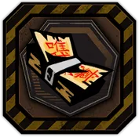
부적 묶음++ - 기본 효과
스킬을 사용하여 적에게 적중 시 12 이상의 체력 피해를 입혔다면, 대상에게 파열 위력 2 부여.
참격 스킬을 사용할 경우, 효과가 강화되어 파열 위력 4 부여. - + (1강) 효과
스킬을 사용하여 적에게 적중 시 12 이상의 체력 피해를 입혔다면, 대상에게 파열 위력 3 부여.
참격 스킬을 사용할 경우, 효과가 강화되어 파열 위력 5 부여. - ++ (2강) 효과
스킬을 사용하여 적에게 적중 시 1 이상의 체력 피해를 입혔다면, 대상에게 파열 위력 3 부여.
참격 스킬을 사용할 경우, 효과가 강화되어 파열 위력 5 부여, 파열 횟수 1 증가.
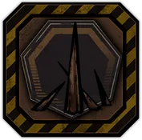
뼈 말뚝X - 기본 효과
파열 효과가 적이 보유한 보호막에 입히는 피해량 +100%.
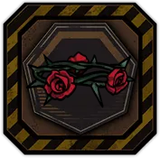
장미 면류관++ - 기본 효과
턴 시작 시, 무작위 적 하나(환상체일 경우, 모든 부위)에게 파열 위력 4 부여.
탐식 완전 공명을 발동하였다면 전투 시작 시, 모든 적에게 파열 위력 2 부여. - + (1강) 효과
턴 시작 시, 무작위 적 둘(환상체일 경우, 모든 부위)에게 파열 위력 4 부여.
탐식 완전 공명을 발동하였다면 전투 시작 시, 모든 적에게 파열 위력 3 부여. - ++ (2강) 효과
턴 시작 시, 무작위 적 셋(환상체일 경우, 모든 부위)에게 파열 위력 4 부여.
탐식 완전 공명을 발동하였다면 전투 시작 시, 모든 적에게 파열 위력 4 부여.
- 기본 효과
-
II
E.G.O GIFT 최대 강화 효과 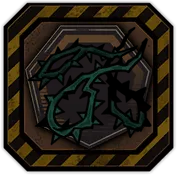
가시오랏줄X - 기본 효과
턴 시작 시, 파열 위력 또는 파열 횟수를 부여하는 공격 스킬을 보유한 인격이 5인 이상일 때 발동.
(E.G.O 스킬 제외, 출격 인원을 기준으로 함)
전투 중 적의 파열 횟수가 1 아래로 떨어질 때, 파열 횟수 대신 파열 위력 20을 소모.
(파열 위력이 20 미만이 될 경우, 효과 종료)
전투 중 적중 시 적의 파열 횟수가 1인 경우, 파열 횟수를 부여할 때 부여량 +1. (전투 당 2회)
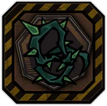
가시 올가미++ - 기본 효과
턴 종료 시, 모든 적에게 현재 속도만큼 파열 위력을 부여.
색욕 완전 공명을 발동하였다면 전투 시작 시, 무작위 적 하나에게 파열 위력 3, 파열 횟수 3 부여. - + (1강) 효과
턴 종료 시, 모든 적에게 (현재 속도 + 1)만큼 파열 위력을 부여.
색욕 완전 공명을 발동하였다면 전투 시작 시, 무작위 적 하나에게 파열 위력 4, 파열 횟수 3 부여. - ++ (2강) 효과
턴 종료 시, 모든 적에게 (현재 속도 + 2)만큼 파열 위력을 부여.
색욕 완전 공명을 발동하였다면 전투 시작 시, 무작위 적 하나에게 파열 위력 5, 파열 횟수 4 부여.
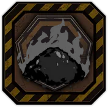
유연 화약++ - 기본 효과
[편성 1번, 2번 인격 전용 효과]
턴 종료 시 이번 턴에 파열 위력 또는 파열 횟수를 부여하는 공격 스킬을 한 번이라도 사용하였다면,
다음 턴에 신속 1 얻음.
자신의 속도가 6 이상이면, 파열 위력 또는 파열 횟수를 부여하는 공격 스킬의 피해량 +12.5%. - + (1강) 효과
[편성 1번, 2번, 3번 인격 전용 효과]
턴 종료 시 이번 턴에 파열 위력 또는 파열 횟수를 부여하는 공격 스킬을 한 번이라도 사용하였다면,
다음 턴에 신속 1 얻음.
자신의 속도가 5 이상이면, 파열 위력 또는 파열 횟수를 부여하는 공격 스킬의 피해량 +15%. - ++ (2강) 효과
[편성 1번, 2번 3번 인격 전용 효과]
턴 종료 시 이번 턴에 파열 위력 또는 파열 횟수를 부여하는 공격 스킬을 한 번이라도 사용하였다면,
다음 턴에 신속 1~2 얻음.
자신의 속도가 4 이상이면, 파열 위력 또는 파열 횟수를 부여하는 공격 스킬의 피해량 +20%.

해진 우산++ - 기본 효과
[편성 1번, 2번 인격 전용 효과]
파열 위력 또는 파열 횟수를 부여하는 공격 스킬을 사용하여 합 승리 시,
대상 적에게 파열 횟수 2 부여. (인격 별로 턴 당 1회)
대상이 파열 상태가 아닐 경우, 효과가 강화되어 파열 위력 3, 파열 횟수 2 부여. - + (1강) 효과
[편성 1번, 2번 3번 인격 전용 효과]
파열 위력 또는 파열 횟수를 부여하는 공격 스킬을 사용하여 합 승리 시,
대상 적에게 파열 위력 2, 파열 횟수 2 부여. (인격 별로 턴 당 1회)
대상이 파열 상태가 아닐 경우, 효과가 강화되어 파열 위력 4, 파열 횟수 2 부여. - ++ (2강) 효과
[편성 1번, 2번 3번 인격 전용 효과]
파열 위력 또는 파열 횟수를 부여하는 공격 스킬을 사용하여 합 승리 시,
대상 적에게 파열 위력 4, 파열 횟수 2 부여. (인격 별로 턴 당 1회)
대상이 파열 상태가 아닐 경우, 효과가 강화되어 파열 위력 6, 파열 횟수 3 부여.
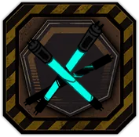
형광색 램프++ - 기본 효과
턴 종료 시 파열 상태인 적의 수(환상체일 경우, 모든 부위) + 1만큼,
다음 턴에 무작위 아군 하나에게 피해량 증가 1, 신속 1 효과 중 하나를 부여. - + (1강) 효과
턴 종료 시 파열 상태인 적의 수(환상체일 경우, 모든 부위) + 3만큼,
다음 턴에 무작위 아군 하나에게 피해량 증가 1, 신속 1 효과 중 하나를 부여. - ++ (2강) 효과
턴 종료 시 파열 상태인 적의 수(환상체일 경우, 모든 부위) + 3만큼,
다음 턴에 무작위 아군 하나에게 피해량 증가 1, 신속 1 효과를 부여.

종말의 파편X - 기본 효과
대상의 파열 위력이 15 미만이면, 파열 위력 부여 시 추가 1 부여.

괴문자 부적X - 기본 효과
자신의 공격 스킬로 파열을 가진 대상을 처치할 시, (집중 전투의 경우 부위 파괴)
대상의 파열 위력을 나누어 모든 적 (집중 전투의 경우 부위)에게 부여함. (최대 2씩, 소수점 버림)
자신의 공격 스킬로 주살【신속】을 가진 대상을 처치할 시, (집중 전투의 경우 부위 파괴)
위 효과를 대신하여 대상의 파열 위력과 횟수를 나누어 모든 적 (집중 전투일 경우 부위)에게 부여함.
(최대 2씩, 소수점 버림)
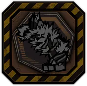
묘각X - 기본 효과
자신의 속도가 대상보다 빠를 때,
스킬로 부여하는 파열 혹은 파열 횟수를 대상에게 (속도 차 / 3)만큼 추가 부여. (최대 3)
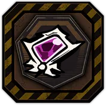
흑단 브로치X - 기본 효과
스테이지 첫 턴 시작 시, 모든 적에게 파열 위력 2, 파열 횟수 2 부여.
3턴 동안 턴 종료 시, 모든 적에게 다음 턴에 속박 2 부여.
- 기본 효과
-
III
E.G.O GIFT 최대 강화 효과 
근무용 통상 배터리X - 기본 효과
스킬을 사용하여 적에게 적중 시, 대상에게 파열 위력 3 부여.
질투 속성 스킬을 사용할 경우, 효과가 강화되어 대상에게 파열 위력 5 부여.
벼락가지++ - 기본 효과
스킬 효과로 파열 위력을 부여할 때마다 대상에게 파열 위력 1, 파열 횟수 1 부여. - + (1강) 효과
스킬 효과로 파열 위력을 부여할 때마다 대상에게 파열 위력 2, 파열 횟수 1 부여. - ++ (2강) 효과
스킬 효과로 파열 위력을 부여할 때마다 대상에게 파열 위력 3, 파열 횟수 1 부여.
우울 속성 스킬을 사용할 경우, 효과가 강화되어 파열 위력 3, 파열 횟수 2 부여.
죽음바라기X - 기본 효과
[편성 1번, 2번 인격 전용 효과]
파열 위력 또는 파열 횟수를 부여하는 공격 스킬의 합 위력 +1, 공격 레벨 +2, 피해량 +15%.
(E.G.O 스킬 제외)
단일 코인 스킬일 경우, 효과가 강화되어 합 위력 +2, 공격 레벨 +2, 피해량 +40%.
가시 전투화X - 기본 효과
파열 횟수를 부여하는 기본 공격 스킬로 적과 합 승리 시, 대상의 파열 횟수 3 증가. (적 별로 턴 당 2회)
적중 시 대상 적에게 파열이 없으면, 파열 위력을 부여하는 코인 효과가 파열 위력을 부여하는 대신,
파열 횟수를 부여. (최대 4, 적 별로 턴 당 2회, 환상체일 경우 부위 별로 계산)
파열 위력 또는 파열 횟수를 부여하는 기본 공격 스킬이 각 스킬의 보유량만큼 공격 레벨이 증가. (최대 3)
해당 스킬의 보유량이 3개 이상인 경우, 공격 레벨이 2만큼 추가로 증가.
강화제 Mk.4X - 기본 효과
파열 위력 또는 파열 횟수를 부여하는 기본 공격 스킬을 사용하여
파열 위력을 15 이하로 보유한 적에게 마지막 코인 적중 시, 대상의 파열 횟수 3 증가. (인격 별로 턴 당 1회)
파열 횟수를 부여하는 기본 공격 스킬의 합 위력 +1, 피해량 +20%.
목이 뻑뻑 가슴살X - 기본 효과
스킬로 적에게 파열 부여시 파열 횟수 3 증가.
새겨넣어진 괴문자X - 기본 효과
파열을 가진 대상과 합을 할 때, (대상의 파열 / 20)만큼 합 위력이 증가. (최대 2)
주살【신속】을 가진 대상과 합을 할 때, 위 효과를 대신하여 (대상의 파열 / 15)만큼 합 위력이 증가. (최대 3)
주살【신속】 효과로 피해를 줄 때, (주살【신속】 피해 / 3)만큼 고정 피해를 입힙.
잔가지X - 기본 효과
파열을 보유한 적이 아군으로부터 파열 위력 또는 파열 횟수를 부여하는 공격 스킬(E.G.O 스킬 포함)로 적중받아
파열이 3회 발동할 때마다 다음 턴에 공격 레벨 감소 2 얻음. (적 별로 턴 당 3회, 환상체일 경우 부위별로 계산)
파열 횟수를 부여하는 기본 공격 스킬로 적 처치 시,
사망한 대상이 보유한 남은 파열 횟수를 다음 턴에 무작위 적에게 부여. (턴 당 2회)
크랲게 뇌수 담금주X - 기본 효과
아군이 파열 위력 또는 파열 횟수를 부여하는 스킬로 파열 상태인 적을 공격할 때,
대상의 파열 횟수에 비례하여 입히는 피해량 +(대상의 파열 횟수 (파열 위력 X 파열 횟수) 만큼의 탐식 피해를 입음. (파열 횟수 최대 5까지 적용) 1.25, 최대 50)%.
아군이 흐트러짐 상태에서 풀려날 때 최대 체력의 20%만큼 체력을 회복. (전투당 2회)
거울 속의 꽃X - 기본 효과
매 턴 시작 시 모든 적에게 파열 위력 3 부여, 파열 횟수 1 증가. (집중 전투일 경우, 모든 부위에 적용)
파열, 호흡을 부여하거나 획득하는 공격 스킬을 보유한 인격이 편성된 수에 따라 기프트 효과 강화.
(E.G.O 스킬 제외, 대기 인원 포함)
- 6인 이상
스킬 적중 시 파열 피해가 발생했다면, 호흡 횟수 1 얻음. (스킬 당 3회)
- 10인 이상
스킬 적중 시 크리티컬이 발생했다면, 파열 횟수 1 증가. (스킬 당 3회)
기괴한 석상X - 기본 효과
턴 시작 시, 파열 위력 또는 파열 횟수를 부여하는 공격 스킬을 보유한 인격이 5인 이상일 때 발동.
(E.G.O 스킬 제외, 출격 인원을 기준으로 함)
파열 효과가 적이 보유한 보호막에 입히는 피해량 +100%.
대상의 파열 위력이 15 미만이면, 파열 위력 부여 시 추가 2 부여.
스킬 효과로 인해 파열을 부여하지 못하는 경우 코인 위력 +1.
- 기본 효과
-
IV
E.G.O GIFT 최대 강화 효과 
욕망 조각X - 기본 효과
파열 위력 또는 파열 횟수를 부여하는 E.G.O 스킬 사용시 발동.
소모하는 (탐식 E.G.O 자원 +나머지 E.G.O 자원의 합/3)만큼 최종 위력이 증가, 피해량 +50%.
탐식 속성 E.G.O 스킬을 사용할 경우, E.G.O 등급에 비례하여
파열 횟수를 추가로 부여(ZAYIN의 경우 2, 등급이 오를수록 +1)하고
피해량 +(사용한 E.G.O 자원 종류의 수x15)%.
쾌감++ - 기본 효과
턴 시작 시, 적 전체(환상체일 경우, 모든 부위)에게 파열 위력 3, 파열 횟수 3 부여.
턴 종료 시, 파열 횟수가 3 이상인 모든 적(환상체일 경우, 부위마다 별도로 판정)이
(파열 위력 (파열 위력 X 파열 횟수) 만큼의 탐식 피해를 입음. (파열 횟수 최대 5까지 적용) 파열 횟수) 만큼의 탐식 피해를 입음. (파열 횟수 최대 5까지 적용) - + (1강) 효과
턴 시작 시, 적 전체(환상체일 경우, 모든 부위)에게 파열 위력 4, 파열 횟수 3 부여.
턴 종료 시, 파열 횟수가 3 이상인 모든 적(환상체일 경우, 부위마다 별도로 판정)이
(파열 위력 (파열 위력 X 파열 횟수) 만큼의 탐식 피해를 입음. (파열 횟수 최대 5까지 적용) 파열 횟수) 만큼의 탐식 피해를 입음. (파열 횟수 최대 7까지 적용) - ++ (2강) 효과
턴 시작 시, 적 전체(환상체일 경우, 모든 부위)에게 파열 위력 6, 파열 횟수 3 부여.
턴 종료 시, 파열 횟수가 3 이상인 모든 적(환상체일 경우, 부위마다 별도로 판정)이
(파열 위력 (파열 위력 X 파열 횟수) 만큼의 탐식 피해를 입음. (파열 횟수 최대 5까지 적용) 파열 횟수) 만큼의 탐식 피해를 입음. (파열 횟수 최대 10까지 적용)

황홀경X - 기본 효과
턴 시작 시, 파열 위력 또는 파열 횟수를 부여하는 공격 스킬을 보유한 인격이 5인 이상일 때 발동.
(E.G.O 스킬 제외, 출격 인원을 기준으로 함)
스킬을 사용하여 적에게 적중 시, 대상에게 파열 위력 5 부여.
전투 중 적의 파열 횟수가 1 아래로 떨어질 때, 파열 횟수 대신 파열 위력 10을 소모.
(파열 위력이 10 미만이 될 경우, 효과 종료)
대상의 파열 횟수가 3 미만이면, 파열 횟수를 부여할 때 부여량 +1. (전투 당 3회)

파탄X - 기본 효과
턴 시작 시, 파열 위력 또는 파열 횟수를 부여하는 공격 스킬을 보유한 인격이 5인 이상일 때 발동.
(E.G.O 스킬 제외, 출격 인원을 기준으로 함)
파열 효과가 적이 보유한 보호막에 입히는 피해량 +150%.
턴 시작 시, 파열 상태인 적 또는 부위의 공격 레벨과 방어 레벨이 (3 + 파열 위력/2) 만큼 감소.(최대 6)
스킬 효과로 파열 위력을 부여할 때마다 대상에게 파열 위력 2, 파열 횟수 1 부여.
파열 위력, 횟수 또는 특수 파열을 부여하는 더하기 코인 스킬의 코인 위력 +1.
파열 위력, 횟수 또는 특수 파열을 부여하는 빼기 코인 스킬의 기본 위력 +(4/코인 수) (최소 1. 소수점 버림)
이전칠자X - 기본 효과
턴 시작 시, 파열 위력 또는 파열 횟수를 부여하는 공격 스킬을 보유한 인격이 5인 이상일 때 발동.
(E.G.O 스킬 제외)
자신의 공격 스킬로 파열을 가진 대상을 처치할 시, (집중 전투의 경우 부위 파괴)
대상의 파열 위력을 나누어 모든 적 (집중 전투일 경우 부위)에게 부여함. (최대 3씩)
자신의 공격 스킬로 주살【신속】을 가진 대상을 처치할 시, (집중 전투의 경우 부위 파괴)
위 효과를 대신하여 대상의 파열 위력과 횟수를 나누어 모든 적 (집중 전투일 경우 부위)에게 부여함.
(최대 6씩)
파열을 가진 대상과 합을 할 때, (대상의 파열 / 20)만큼 합 위력이 증가. (최대 2)
주살【신속】을 가진 대상과 합을 할 때,
위 효과를 대신하여 (대상의 파열 / 10)만큼 코인 위력이 증가. (최대 2)
주살【신속】 효과로 피해를 줄 때, (주살【신속】 피해 / 2)만큼 고정 피해 입힘.

부치지 못한 편지X - 기본 효과
[편성 1번, 2번 인격 전용 효과]
파열 위력 또는 파열 횟수를 부여하는 공격 스킬을 사용하여 합 승리 시,
대상 적에게 파열 위력 5, 파열 횟수 3 부여. (인격 별로 턴 당 1회)
자신보다 속도가 낮은 적과 합을 진행할 때, 최종 위력 +1, 피해량 +25%.
공격 레벨 증가 버프를 보유한 적과 합하여 승리 시,
다음 턴 동안 자신은 공격 레벨 증가 3을 얻고 합에서 패배한 적에게는 공격 레벨 감소 3 부여.
(증가, 감소 최대 9)
- 기본 효과
-
-

침잠-
I
E.G.O GIFT 최대 강화 효과
가시밭길++ - 기본 효과
침잠 위력 또는 특수 침잠을 부여하는 스킬로 적에게 체력 피해를 입힌 경우,
턴 종료 시 대상에게 침잠 위력 3, 침잠 횟수 2 부여. (동일한 적에게는 턴당 1회 발동)
우울 또는 색욕 완전 공명을 발동하였다면 전투 시작 시,
모든 적(환상체일 경우, 무작위 부위 하나)에게 침잠 위력 2, 침잠 횟수 3 부여. - + (1강) 효과
침잠 위력 또는 특수 침잠을 부여하는 스킬로 적에게 체력 피해를 입힌 경우,
턴 종료 시 대상에게 침잠 위력 3, 침잠 횟수 2 부여. (동일한 적에게는 턴당 1회 발동)
우울 또는 색욕 공명을 발동하였다면 전투 시작 시,
모든 적(환상체일 경우, 무작위 부위 하나)에게 침잠 위력 2, 침잠 횟수 3 부여. - ++ (2강) 효과
침잠 위력 또는 특수 침잠을 부여하는 스킬로 적에게 체력 피해를 입힌 경우,
턴 종료 시 대상에게 침잠 위력 4, 침잠 횟수 3 부여. (동일한 적에게는 턴당 1회 발동)
우울 또는 색욕 공명을 발동하였다면 전투 시작 시,
모든 적(환상체일 경우, 무작위 부위 하나)에게 침잠 위력 3, 침잠 횟수 3 부여.
고목 함정++ - 기본 효과
침잠 위력, 침잠 횟수 또는 특수 침잠을 부여하는 공격 스킬의 피해량 +5%. (E.G.O 스킬 제외)
코인 수가 2개 이하인 경우, 효과가 강화되어 합 위력 +1, 피해량 +10%. - + (1강) 효과
침잠 위력, 침잠 횟수 또는 특수 침잠을 부여하는 공격 스킬의 피해량 +7.5%. (E.G.O 스킬 제외)
코인 수가 2개 이하인 경우, 효과가 강화되어 합 위력 +1, 피해량 +12.5%. - ++ (2강) 효과
침잠 위력, 침잠 횟수 또는 특수 침잠을 부여하는 공격 스킬의 피해량 +10%. (E.G.O 스킬 제외)
코인 수가 2개 이하인 경우, 효과가 강화되어 합 위력 +1, 피해량 +15%.
넝마++ - 기본 효과
침잠 위력, 침잠 횟수 또는 특수 침잠을 부여하는 공격 스킬을 보유한 인격이 합 승리시
정신력 5를 추가로 회복(턴 당 1회)하고, 정신력이 최대일 경우에는 피해량 +7.5%.
해당 인격이 빼기 코인 스킬(E.G.O 스킬 제외)을 사용할 경우, 효과가 변경되어
스킬 사용시 정신력이 -15 이상일 경우에는 정신력이 -15로 감소하고
피해량 +(정신력 감소한 수치)%, 정신력이 -15 미만일 경우에는 피해량 +15%. - + (1강) 효과
침잠 위력, 침잠 횟수 또는 특수 침잠을 부여하는 공격 스킬을 보유한 인격이 합 승리시
정신력 6을 추가로 회복(턴 당 1회)하고, 정신력이 최대일 경우에는 피해량 +10%.
해당 인격이 빼기 코인 스킬(E.G.O 스킬 제외)을 사용할 경우, 효과가 변경되어
스킬 사용시 정신력이 -15 이상일 경우에는 정신력이 -15로 감소하고
피해량 +(정신력 감소한 수치 +5)%, 정신력이 -15 미만일 경우에는 피해량 +20%. - ++ (2강) 효과
침잠 위력, 침잠 횟수 또는 특수 침잠을 부여하는 공격 스킬을 보유한 인격이 합 승리시
정신력 7을 추가로 회복(턴 당 1회)하고, 정신력이 최대일 경우에는 피해량 +12.5%.
해당 인격이 빼기 코인 스킬(E.G.O 스킬 제외)을 사용할 경우, 효과가 변경되어
스킬 사용시 정신력이 -15 이상일 경우에는 정신력이 -15로 감소하고
피해량 +(정신력 감소한 수치 +10)%, 정신력이 -15 미만일 경우에는 피해량 +25%.
머리 없는 초상화++ - 기본 효과
전투 시작 시, 정신력이 0 미만인 모든 적(환상체일 경우, 무작위 부위 하나)에게 침잠 위력 2 부여.
질투 속성 스킬을 사용할 때마다 다음 턴에 모든 적(환상체일 경우, 무작위 부위 하나)에게 침잠 위력 1 나누어 부여. - + (1강) 효과
전투 시작 시, 정신력이 0 미만인 모든 적(환상체일 경우, 무작위 부위 하나)에게 침잠 위력 3 부여.
질투 속성 스킬을 사용할 때마다 다음 턴에 모든 적(환상체일 경우, 무작위 부위 하나)에게 침잠 위력 2 나누어 부여. - ++ (2강) 효과
전투 시작 시, 정신력이 0 미만인 모든 적(환상체일 경우, 무작위 부위 하나)에게 침잠 위력 4, 침잠 횟수 1 부여.
질투 속성 스킬을 사용할 때마다 다음 턴에 모든 적(환상체일 경우, 무작위 부위 하나)에게 침잠 위력 3 나누어 부여.
칸타빌레X - 기본 효과
기본 공격 스킬 사용시, 적의 침잠 위력이 5 이상이면, 대상의 (침잠 위력 / 10)만큼 자신의 정신력 회복. (최대 3)
- 기본 효과
-
II
E.G.O GIFT 최대 강화 효과
녹아내린 시계태엽X - 기본 효과
턴 시작 시, 침잠 상태인 적의 공격 레벨과 방어 레벨이 이번 턴 동안 3만큼 감소.

뒤엉킨 뼛조각X - 기본 효과
턴 시작 시, 침잠 위력, 침잠 횟수, 혹은 특수 침잠을 부여하는 공격 스킬을 보유한 인원이 5인 이상일 때 발동.
(E.G.O 스킬 제외, 출격 인원을 기준으로 함.)
턴 시작시 침잠을 보유한 적 (환상체일 경우 모든 부위)들이
(직전 턴에 피격을 받아 소모한 침잠 횟수/3)만큼 침잠 횟수를 다시 얻음.
기본 스킬 적중 대상의 정신력이 0 미만일 경우,(정신력이 없을 경우 우울 내성이 1.5 이상일 때)
(침잠 위력/10)만큼 우울 속성 피해를 입힘. (최소 대미지 1, 해당 효과는 턴 당 10회 발동 가능)
유골 부스러기X - 기본 효과
전투 시작 단계에서 침잠 상태인 적에게 가하는 피해량 +12.5%, 대상에게 받는 피해량 -12.5%.
우울 속성 스킬을 보유한 아군은 효과가 강화되어,
침잠 상태인 적에게 가하는 피해량 +20%, 대상에게 받는 피해량 -20%.
장엄++ - 기본 효과
[편성 1번, 2번 인격 전용 효과]
침잠 위력과 침잠 횟수의 합이 10 이상인 적에게
침잠 위력, 침잠 횟수 또는 특수 침잠을 부여하는 공격 스킬로 피해를 입힐 경우,
공격 종료 시 침잠 위력 2, 침잠 횟수 2 부여. (인격별 턴 당 2회)
집중 전투 방식의 전투 스테이지에서는 효과가 변경되어
침잠 위력 4, 침잠 횟수 2 부여. (인격별 턴 당 1회)
색욕 완전 공명을 발동하였다면 전투 시작 시,
모든 적(환상체일 경우, 무작위 부위 하나)에게 침잠 위력 2, 침잠 횟수 3 부여. - + (1강) 효과
[편성 1번, 2번, 3번 인격 전용 효과]
침잠 위력과 침잠 횟수의 합이 8 이상인 적에게
침잠 위력, 침잠 횟수 또는 특수 침잠을 부여하는 공격 스킬로 피해를 입힐 경우,
공격 종료 시 침잠 위력 3, 침잠 횟수 2 부여. (인격별 턴 당 2회)
집중 전투 방식의 전투 스테이지에서는 효과가 변경되어
침잠 위력 5, 침잠 횟수 2 부여. (인격별 턴 당 1회)
색욕 완전 공명을 발동하였다면 전투 시작 시,
모든 적(환상체일 경우, 무작위 부위 하나)에게 침잠 위력 2, 침잠 횟수 3 부여. - ++ (2강) 효과
[편성 1번, 2번, 3번 인격 전용 효과]
침잠 위력과 침잠 횟수의 합이 5 이상인 적에게
침잠 위력, 침잠 횟수 또는 특수 침잠을 부여하는 공격 스킬로 피해를 입힐 경우,
공격 종료 시 침잠 위력 3, 침잠 횟수 3 부여. (인격별 턴 당 2회)
집중 전투 방식의 전투 스테이지에서는 효과가 변경되어
침잠 위력 5, 침잠 횟수 3 부여. (인격별 턴 당 1회)
색욕 완전 공명을 발동하였다면 전투 시작 시,
모든 적(환상체일 경우, 무작위 부위 하나)에게 침잠 위력 2, 침잠 횟수 3 부여.
적색 지령++ - 기본 효과
아군이 스킬 효과로 적에게 침잠 위력, 침잠 횟수 또는 특수 침잠을 부여할 때마다
해당 인격이 다음 턴에 공격 레벨이 1 증가. (최대 3)
우울 또는 분노 속성 공격 스킬을 보유한 아군의 경우, 효과가 강화되어
침잠 위력 또는 침잠 횟수를 부여할 때마다 다음 턴에 공격 레벨이 2 증가. (최대 4) - + (1강) 효과
아군이 스킬 효과로 적에게 침잠 위력, 침잠 횟수 또는 특수 침잠을 부여할 때마다
해당 인격이 다음 턴에 공격 레벨이 1 증가. (최대 4)
우울 또는 분노 속성 공격 스킬을 보유한 아군의 경우, 효과가 강화되어
침잠 위력 또는 침잠 횟수를 부여할 때마다 다음 턴에 공격 레벨이 2 증가. (최대5 ) - ++ (2강) 효과
아군이 스킬 효과로 적에게 침잠 위력, 침잠 횟수 또는 특수 침잠을 부여할 때마다
해당 인격이 다음 턴에 공격 레벨이 2 증가. (최대 4)
우울 또는 분노 속성 공격 스킬을 보유한 아군의 경우, 효과가 강화되어
침잠 위력 또는 침잠 횟수를 부여할 때마다 다음 턴에 공격 레벨이 3 증가. (최대 6)

빛바랜 외투X - 기본 효과
턴 종료 시 정신력이 -45인 적이 3명 이상이면, 다음 턴에 모든 아군이 공격 레벨 증가 2 얻음.
얼어붙은 아우성X - 기본 효과
턴 시작 시 속도가 제일 낮은 인격 하나에게 효과 적용.
해당 아군이 합에서 승리하거나 적에게 피격 시, 적에게 침잠 위력 3 부여.
정신 오염 가속 가스X - 기본 효과
침잠 위력, 침잠 횟수 또는 특수 침잠을 부여하는 공격 스킬로 합을 진행한 후 공격 피해를 입힐 경우,
적중시 진행한 합 횟수만큼 침잠 위력 부여. (최대 부여량 3, 턴 당 3회 발동)
흘러내린 엔케팔린X - 기본 효과
적의 침잠 횟수가 감소 또는 소모 시
(대상의 침잠 위력)% 확률로 감소 또는 소모 직전 침잠 횟수 1 증가.(턴 당 3회 발동, 최대 100%)
(최대 공명 수 x 2)% 만큼 기본 확률 증가. (최대 12%)
해당 최대 공명이 우울 또는 질투 공명이면 부여하는 침잠 횟수 +1.
- 기본 효과
-
III
E.G.O GIFT 최대 강화 효과
고장난 나침반++ - 기본 효과
웨이브 첫 턴 시작 시, 모든 적(환상체일 경우, 모든 부위)에게
침잠 횟수 (5 + 등장한 적의 수 (파열 위력 X 파열 횟수) 만큼의 탐식 피해를 입음. (파열 횟수 최대 5까지 적용) 3)만큼 무작위로 나누어 부여. (환상체일 경우, 적 숫자는 본체 하나로 계산) - + (1강) 효과
웨이브 첫 턴 시작 시, 모든 적(환상체일 경우, 모든 부위)에게
침잠 횟수 (10 + 등장한 적의 수 (파열 위력 X 파열 횟수) 만큼의 탐식 피해를 입음. (파열 횟수 최대 5까지 적용) 3)만큼 무작위로 나누어 부여. (환상체일 경우, 적 숫자는 본체 하나로 계산) - ++ (2강) 효과
웨이브 첫 턴 시작 시, 모든 적(환상체일 경우, 모든 부위)에게
침잠 횟수 (10 + 등장한 적의 수 (파열 위력 X 파열 횟수) 만큼의 탐식 피해를 입음. (파열 횟수 최대 5까지 적용) 4)만큼 무작위로 나누어 부여. (환상체일 경우, 적 숫자는 본체 하나로 계산)

머나먼 별X - 기본 효과
침잠 위력, 침잠 횟수 또는 특수 침잠을 부여하거나 획득하는 기본 공격 스킬을 사용하여 적에게 적중 시,
대상이 보유한 침잠 효과(특수 침잠을 포함)를 발동시킬 때마다 턴 종료 시 자신의 정신력 3 회복. (인격 별로 턴 당 2회)
턴 시작 시 정신력이 45일 경우 효과가 변경되어, 기본 공격 스킬을 사용하여 적에게 적중 시,
대상이 보유한 침잠 효과(특수 침잠을 포함)를 발동시킬 때마다 대상 적에게 침잠 횟수 2 부여. (인격 별로 턴 당 2회)

한겨울 밤의 악몽X - 기본 효과
스킬을 사용하여 적에게 적중 시 체력 피해를 입혔다면, 대상에게 침잠 위력 3 부여.
탐식 속성 스킬을 사용할 경우, 효과가 강화되어 대상에게 침잠 위력 5 부여.
안식X - 기본 효과
기본 공격 스킬에서 자신의 정신력이 감소할 때, 소모량 1 감소.
대상에게 침잠이 있을 경우, 이 공격 스킬에서 코인 앞면이 나온 수에 따라 피해량 +2%씩 증가. (최대 16%)
모형 저택 오르골X - 기본 효과
[편성 1번 인격 전용 효과]
턴 종료시 흐트러짐 상태가 되었을 때, 흐트러짐 상태가 해제되고,
다음 턴 시작 시 모든 적에게 침잠 위력 4, 침잠 횟수 4 부여.
(전투당 1회 발동, 집중 전투에서는 부위로 판정)
침잠이 부여된 적 처치 시 침잠 횟수가 가장 낮은 적 1명의 침잠 횟수 2 증가.
(집중 전투에서는 부위로 판정)
서지 글로브X - 기본 효과
턴 시작 시, 침잠 위력, 침잠 횟수 또는 특수 침잠을 부여하는 공격 스킬을 보유한 인격이 5인 이상일 때 발동.
(E.G.O 스킬 제외, 출격 인원을 기준으로 함)
기본 공격 스킬 사용 시, 적의 침잠 위력이 5 이상이면,
대상의 (침잠 위력 / 10)만큼 자신의 정신력 회복. (최대 5)
턴 종료 시 정신력이 -45인 적의 수만큼 다음 턴에 모든 아군이 공격 레벨 증가 얻음. (최대 3)
- 기본 효과
-
IV
E.G.O GIFT 최대 강화 효과
미적 감각++ - 기본 효과
정신력 감소로 인하여 부정적 효과(사기 저하, 패닉)를 얻은 적에게 입히는 피해량 35% 증가.
정신력이 없는 적에게 침잠 효과가 적용될 경우,
우울 속성 피해를 입히는 대신 이를 포함한 죄악 속성 중 가장 효과적인 속성 피해로 변경. - + (1강) 효과
정신력이 0 미만인 적에게 입히는 피해량 40% 증가.
정신력이 없는 적에게 침잠 효과가 적용될 경우,
우울 속성 피해를 입히는 대신 이를 포함한 죄악 속성 중 가장 효과적인 속성 피해로 변경. - ++ (2강) 효과
정신력이 없거나 0 미만인 적에게 입히는 피해량 50% 증가.
정신력이 없는 적에게 침잠 효과가 적용될 경우,
우울 속성 피해를 입히는 대신 이를 포함한 죄악 속성 중 가장 효과적인 속성 피해로 변경.

잠식 조각X - 기본 효과
침잠 위력, 침잠 횟수 또는 특수 침잠을 부여하는 E.G.O 스킬 사용 시 발동.
소모하는 (우울 E.G.O 자원 +나머지 E.G.O 자원의 합/3)만큼 최종 위력이 증가, 피해량 +50%.
우울 속성 E.G.O 스킬의 경우, 효과가 강화되어
공격 시작 전에 침잠 횟수를 추가로 부여(ZAYIN의 경우 2, 등급이 오를수록 +1)하고
피해량 +(소모한 정신력x2.5)%.
굴절 유리관X - 기본 효과
일반 전투에서 침잠 위력과 침잠 횟수의 합이 10 이상인 적에게 공격 적중시,
대상의 정신력이 -45이면, 대상의 (침잠 위력 / 5)만큼 우울 피해를 입힘. (스킬당 3회 발동)
집중 전투에서 침잠 위력과 침잠 횟수의 합이 10 이상인 적에게 공격 적중시,
대상의 (침잠 위력 / 10)만큼 우울 피해를 입힘. (스킬당 2회 발동)
검은 악보X - 기본 효과
턴 시작 시, 침잠 위력, 침잠 횟수 또는 특수 침잠을 부여하는 공격 스킬을 보유한 인격이 5인 이상일 때 발동.
(E.G.O 스킬 제외, 출격 인원을 기준으로 함)
스킬을 사용하여 적에게 적중 시, 대상에게 침잠 위력 5 부여.
턴 시작 시, 모든 적(환상체일 경우, 모든 부위)들이
직전 턴에 피격을 받아 소모한 침잠 횟수의 절반만큼 침잠 횟수를 다시 얻음.
기본 공격 스킬 적중 시, 대상의 0 미만의 정신력 1 당 스킬 피해량 +1%.
대상이 패닉 상태면, 대신 스킬 피해량 +50%.
정신력이 없는 대상이면, 대상이 보유한 침잠 위력 2 당 스킬 피해량 +1%.
침잠 위력이 90 이상이면, 대신 스킬 피해량 +50%.
덮칠 파도X - 기본 효과
턴 시작 시, 침잠 위력, 침잠 횟수 또는 특수 침잠을 부여하는 공격 스킬을 보유한 인격이 5인 이상일 때 발동.
(E.G.O 스킬 제외, 출격 인원을 기준으로 함)
턴 시작시, 무작위 적 하나에게 역류 1 부여.
역류를 보유한 적 사망 시, 대상의 역류 수치만큼
역류 수치가 최대치가 아닌 가장 높은 적에게 다음 턴 시작 시 역류 부여.
침잠 위력, 침잠 횟수 또는 특수 침잠을 부여하는 스킬을 사용하여 적에게 적중 시 체력 피해를 입혔다면,
턴 종료 시 대상에게 침잠 위력 4, 침잠 횟수 3 부여. (적 1명 당 턴 당 1회 발동)
우울 또는 색욕 완전 공명을 발동하였다면, 전투 시작 시,
모든 적 (환상체일 경우, 무작위 부위 하나)에게 침잠 위력 3, 침잠 횟수 3 부여.
기본 공격 스킬 사용 시, 적의 침잠 위력이 10 이상이면,
대상의 (침잠 위력 / 10)만큼 자신의 정신력 회복, 대상에게 방어 레벨 감소 부여.
(최대 5. 적 1명 당 턴 당 1회 발동).
턴 종료 시 정신력이 -45이거나 정신력이 없는 적의 수만큼 다음 턴에 모든 아군이 공격 레벨 증가 얻음.
(최대 6)
침잠 위력, 횟수 또는 특수 침잠을 부여하는 더하기 코인 스킬의 코인 위력 +1
침잠 위력, 횟수 또는 특수 침잠을 부여하는 빼기 코인 스킬의 기본 위력 +(4/코인 수)
(최소 1. 소수점 버림)
침잠 위력, 침잠 횟수 또는 특수 침잠을 부여하거나 획득하는 기본 공격 스킬을 사용하여 적에게 적중 시,
대상이 보유한 침잠 효과(특수 침잠을 포함)를 발동시킬 때마다 턴 종료 시 자신의 정신력 5 회복.
(인격 별로 턴 당 2회).
턴 시작 시 정신력이 45일 경우 효과가 변경되어, 기본 공격 스킬을 사용하여 적에게 적중 시,
대상이 보유한 침잠 효과(특수 침잠을 포함)를 발동시킬 때마다 대상 적에게 침잠 횟수 3 부여.
(인격 별로 턴 당 2회)

서릿발 발자국X - 기본 효과
웨이브 첫 턴 시작 시 아군 전체가 침잠 횟수 3을 획득하고
적 전체(환상체일 경우, 모든 부위)에게 침잠 위력 4, 침잠 횟수 8 부여.
침잠 상태인 적의 합 위력이 2만큼 감소하고 효과를 받은 대상이 아군 인격에게 합 패배 시
침잠 위력 2, 아군 인격에게 피해를 입힐 경우 침잠 위력 3 부여.
- 기본 효과
-
-

호흡-
I
E.G.O GIFT 최대 강화 효과
녹빛 겉날개++ - 기본 효과
웨이브 첫 턴 시작 시, 속도가 제일 빠른 아군 하나가 호흡 위력 3, 호흡 횟수 2 얻음.
질투 속성 공격 스킬을 보유한 아군일 경우, 효과가 강화되어 호흡 위력 4, 호흡 횟수 3 얻음. - + (1강) 효과
웨이브 첫 턴 시작 시, 속도가 제일 빠른 아군 하나가 호흡 위력 4, 호흡 횟수 4 얻음.
질투 속성 공격 스킬을 보유한 아군일 경우, 효과가 강화되어 호흡 위력 5, 호흡 횟수 5 얻음. - ++ (2강) 효과
턴 시작시, 속도가 제일 빠른 아군 하나가 호흡 위력 4, 호흡 횟수 4 얻음.
질투 속성 공격 스킬을 보유한 아군일 경우, 효과가 강화되어 호흡 위력 5, 호흡 횟수 5 얻음.
데블스 셰어++ - 기본 효과
턴 종료 시, 호흡 위력이 제일 높은 아군 하나와 호흡 횟수가 제일 높은 아군 하나에게
다음 턴에 신속 1 부여. (같은 인격일 경우 중복 가능)
색욕 속성 공격 스킬을 보유한 아군일 경우, 효과가 강화되어 신속 2 부여. (E.G.O 스킬 제외) - + (1강) 효과
턴 종료 시, 호흡 위력이 제일 높은 아군 하나와 호흡 횟수가 제일 높은 아군 하나에게
다음 턴에 신속 1, 공격 레벨 증가 1 부여. (같은 인격일 경우 중복 가능)
색욕 속성 공격 스킬을 보유한 아군일 경우, 효과가 강화되어 신속 2, 공격 레벨 증가 2 부여. (E.G.O 스킬 제외) - ++ (2강) 효과
턴 종료 시, 호흡 위력이 제일 높은 아군 하나와 호흡 횟수가 제일 높은 아군 하나에게
다음 턴에 신속 1, 공격 레벨 증가 1, 피해량 증가 1 부여. (같은 인격일 경우 중복 가능)
색욕 속성 공격 스킬을 보유한 아군일 경우, 효과가 강화되어 신속 2, 공격 레벨 증가 2, 피해량 증가 2 부여.
(E.G.O 스킬 제외)

장식된 편자++ - 기본 효과
턴 시작 시, 호흡 상태가 아닌 무작위 아군 하나에게 호흡 위력 2 부여.
모든 아군이 호흡 상태일 경우, 효과가 변경되어 모든 아군에게 호흡 횟수 1 부여. - + (1강) 효과
턴 시작 시, 호흡 상태가 아닌 무작위 아군 하나에게 호흡 위력 3 부여.
모든 아군이 호흡 상태일 경우, 효과가 변경되어 모든 아군에게 호흡 횟수 2 부여. - ++ (2강) 효과
턴 시작 시, 호흡 상태가 아닌 무작위 아군 둘에게 호흡 위력 3 부여.
모든 아군이 호흡 상태일 경우, 효과가 변경되어 모든 아군에게 호흡 횟수 3 부여.

추억의 펜던트++ - 기본 효과
전투 시작 시, 무작위 아군 하나가 호흡 위력 3 얻음.
(공격 스킬을 사용하여 호흡 횟수를 획득하는 인격을 우선으로 지정)
우울 속성 공격 스킬을 보유한 아군에게 우선으로 적용되며,
이 경우에는 호흡 위력 3 얻고 호흡 횟수 2 증가. - + (1강) 효과
전투 시작 시, 무작위 아군 하나가 호흡 위력 4 얻음.
(공격 스킬을 사용하여 호흡 횟수를 획득하는 인격을 우선으로 지정)
우울 속성 공격 스킬을 보유한 아군에게 우선으로 적용되며,
이 경우에는 호흡 위력 4 얻고 호흡 횟수 3 증가. - ++ (2강) 효과
전투 시작 시, 무작위 아군 둘이 호흡 위력 4 얻음.
(공격 스킬을 사용하여 호흡 횟수를 획득하는 인격을 우선으로 지정)
우울 속성 공격 스킬을 보유한 아군에게 우선으로 적용되며,
이 경우에는 호흡 위력 4 얻고 호흡 횟수 3 증가.

털방울 모자X - 기본 효과
아군이 턴 종료 시 피해를 입힌 공격 스킬 수에 비례하여 다음 턴에 호흡 위력 1 획득.
집중 전투 방식의 스테이지에서는 효과가 강화되어 호흡 위력 3 획득.
- 기본 효과
-
II
E.G.O GIFT 최대 강화 효과
낡은 목각 인형++ - 기본 효과
[편성 1번, 2번 인격 전용 효과]
적에게 치명타 피해를 입힐 때마다 다음 턴에 방어 레벨 감소 1 부여.
(인격별로 턴 당 3회까지 부여 가능) - + (1강) 효과
[편성 1번, 2번, 3번 인격 전용 효과]
적에게 치명타 피해를 입힐 때마다 다음 턴에 방어 레벨 감소 1 부여.
(인격별로 턴 당 4회까지 부여 가능) - ++ (2강) 효과
[편성 1번, 2번, 3번 인격 전용 효과]
적에게 치명타 피해를 입힐 때마다 다음 턴에 방어 레벨 감소 1 부여.
(인격별로 턴 당 6회까지 부여 가능)

네뷸라이저++ - 기본 효과
스테이지 첫 턴 시작시 모든 아군이 호흡 위력 4 얻고 호흡 횟수 4 증가.
오만 완전 공명을 발동하였다면 전투 시작 시, 모든 아군이 호흡 위력 2 얻고 호흡 횟수 2 증가.
[중첩 발동 불가] 흉통 료슈 E.G.O 패시브 「숨」발동시, 이 효과가 발동하지 않음. - + (1강) 효과
웨이브 첫 턴 시작시 모든 아군이 호흡 위력 5 얻고 호흡 횟수 4 증가.
오만 완전 공명을 발동하였다면 전투 시작 시, 모든 아군이 호흡 위력 3 얻고 호흡 횟수 2 증가.
[중첩 발동 불가] 흉통 료슈 E.G.O 패시브 「숨」발동시, 이 효과가 발동하지 않음. - ++ (2강) 효과
웨이브 첫 턴 시작시 모든 아군이 호흡 위력 5 얻고 호흡 횟수 5 증가.
오만 공명을 발동하였다면 전투 시작 시, 모든 아군이 호흡 위력 3 얻고 호흡 횟수 3 증가.
[중첩 발동 불가] 흉통 료슈 E.G.O 패시브 「숨」발동시, 이 효과가 발동하지 않음.
돌무덤++ - 기본 효과
아군이 스킬 효과로 획득하는 호흡 위력 수치가 1.5배로 적용.
아군이 나태 속성 스킬을 사용하여 적을 처치하였다면, 다음 턴 시작 시 호흡 위력 2, 호흡 횟수 2 획득.
(턴당 1회) - + (1강) 효과
아군이 스킬 효과로 획득하는 호흡 위력 수치가 1.5배로 적용.
아군이 적을 처치하였다면, 다음 턴 시작 시 호흡 위력 3, 호흡 횟수 2 획득.
(턴당 1회) - ++ (2강) 효과
아군이 스킬 효과로 획득하는 호흡 위력 수치가 2배로 적용.
아군이 적을 처치하였다면, 다음 턴 시작 시 호흡 위력 4, 호흡 횟수 2 획득.
(턴당 1회)
물부리X - 기본 효과
턴 시작 시, 호흡 상태인 아군이 공격 위력 증가 1 얻음.
호흡 횟수를 5 이상 보유한 아군의 경우에는 효과가 강화되어, 공격 위력 증가 2 얻음.

어느 날의 기억X - 기본 효과
스킬을 사용(E.G.O 스킬 제외)하여 호흡 위력 또는 호흡 횟수를 획득하는 인격이 사용하는 스킬 3의 최종 위력 +2.
엔젤스 컷X - 기본 효과
턴 종료 시, 각 아군이 자신의 호흡 위력이 20을 초과했으면, 호흡 위력을 1 소모하여 호흡 횟수 1 증가.
거대한 선물 보따리X - 기본 효과
턴 시작 시, 체력이 가장 낮은 아군에게 호흡 2, 호흡 횟수 2, 보호 2 부여.
톱니 파편X - 기본 효과
턴 시작 시 자신에게 호흡이 있으면, 방어 레벨 증가 2, 수비 위력 증가 1 얻음.
호흡이 있으면 처음으로 적중하는 코인의 피해량 +10%.
해당 코인이 크리티컬 적중시, 크리티컬 피해량 +20%.

작살 의족X - 기본 효과
턴 종료 시 호흡 위력과 호흡 횟수의 합이 가장 높은 아군 하나에게
다음 턴에 신속 2, 공격 레벨 증가 2, 피해량 증가 2 부여.
피쿼드호 소속 인격의 최대 속도값 +1.
- 기본 효과
-
III
E.G.O GIFT 최대 강화 효과
네잎클로버X - 기본 효과
침잠 위력, 침잠 횟수 또는 특수 침잠을 부여하거나 획득하는 기본 공격 스킬을 사용하여 적에게 적중 시,
대상이 보유한 침잠 효과(특수 침잠을 포함)를 발동시킬 때마다 턴 종료 시 자신의 정신력 3 회복. (인격 별로 턴 당 2회)
턴 시작 시 정신력이 45일 경우 효과가 변경되어, 기본 공격 스킬을 사용하여 적에게 적중 시,
대상이 보유한 침잠 효과(특수 침잠을 포함)를 발동시킬 때마다 대상 적에게 침잠 횟수 2 부여. (인격 별로 턴 당 2회)
미련X - 기본 효과
스킬을 사용하여 적에게 적중 시 체력 피해를 입혔다면, 대상에게 침잠 위력 3 부여.
탐식 속성 스킬을 사용할 경우, 효과가 강화되어 대상에게 침잠 위력 5 부여.
엔도르핀 키트++ - 기본 효과
웨이브 첫 턴 시작 시, 모든 적(환상체일 경우, 모든 부위)에게
침잠 횟수 (5 + 등장한 적의 수 (파열 위력 X 파열 횟수) 만큼의 탐식 피해를 입음. (파열 횟수 최대 5까지 적용) 3)만큼 무작위로 나누어 부여. (환상체일 경우, 적 숫자는 본체 하나로 계산) - + (1강) 효과
웨이브 첫 턴 시작 시, 모든 적(환상체일 경우, 모든 부위)에게
침잠 횟수 (10 + 등장한 적의 수 (파열 위력 X 파열 횟수) 만큼의 탐식 피해를 입음. (파열 횟수 최대 5까지 적용) 3)만큼 무작위로 나누어 부여. (환상체일 경우, 적 숫자는 본체 하나로 계산) - ++ (2강) 효과
웨이브 첫 턴 시작 시, 모든 적(환상체일 경우, 모든 부위)에게
침잠 횟수 (10 + 등장한 적의 수 (파열 위력 X 파열 횟수) 만큼의 탐식 피해를 입음. (파열 횟수 최대 5까지 적용) 4)만큼 무작위로 나누어 부여. (환상체일 경우, 적 숫자는 본체 하나로 계산)
근접 전술 교본X - 기본 효과
기본 공격 스킬에서 자신의 정신력이 감소할 때, 소모량 1 감소.
대상에게 침잠이 있을 경우, 이 공격 스킬에서 코인 앞면이 나온 수에 따라 피해량 +2%씩 증가. (최대 16%)
부서진 칼날X - 기본 효과
[편성 1번 인격 전용 효과]
턴 종료시 흐트러짐 상태가 되었을 때, 흐트러짐 상태가 해제되고,
다음 턴 시작 시 모든 적에게 침잠 위력 4, 침잠 횟수 4 부여.
(전투당 1회 발동, 집중 전투에서는 부위로 판정)
침잠이 부여된 적 처치 시 침잠 횟수가 가장 낮은 적 1명의 침잠 횟수 2 증가.
(집중 전투에서는 부위로 판정)
물속의 달X - 기본 효과
파열 위력이 5 이상 부여된 적에게 공격 적중 시
호흡 위력 1을 얻고, 자신의 호흡 횟수 1 증가. (스킬 당 최대 3회)
파열, 호흡을 부여하거나 획득하는 공격 스킬을 보유한 인격이 편성된 수에 따라 기프트 효과 강화.
(E.G.O 스킬 제외, 대기 인원 포함.)
스킬 적중 시 대상의 파열이 20 이상이면, 크리티컬 피해량 +10%.
(편성 인원 수 1명당 크리티컬 피해량 3% 추가로 증가)
- 12인 이상
스킬 적중 시 크리티컬이 발생했다면, 자신에게 부여된 해제 가능한 부정적인 효과 중 무작위 1개 제거.
(턴 당, 인격 당 1회)

추억X - 기본 효과
턴 시작 시, 침잠 위력, 침잠 횟수 또는 특수 침잠을 부여하는 공격 스킬을 보유한 인격이 5인 이상일 때 발동.
(E.G.O 스킬 제외, 출격 인원을 기준으로 함)
기본 공격 스킬 사용 시, 적의 침잠 위력이 5 이상이면,
대상의 (침잠 위력 / 10)만큼 자신의 정신력 회복. (최대 5)
턴 종료 시 정신력이 -45인 적의 수만큼 다음 턴에 모든 아군이 공격 레벨 증가 얻음. (최대 3)
- 기본 효과
-
IV
E.G.O GIFT 최대 강화 효과
교만 조각X - 기본 효과
호흡 위력 또는 호흡 횟수를 부여 또는 획득하는 E.G.O 스킬 사용 시 발동.
소모하는 (오만 E.G.O 자원 + 나머지 E.G.O 자원의 합/3)만큼 최종 위력이 증가, 피해량 +50%.
오만 속성 E.G.O 스킬의 경우, 효과가 강화되어
공격 시작 전에 호흡 횟수를 추가로 획득(ZAYIN의 경우 2, 등급이 오를수록 +1)하고,
피해량 +(소모한 E.G.O 자원의 합x8)%.
명경지수++ - 기본 효과
아군이 치명타로 가하는 피해량이 1.2배에서 1.7배로 증가.
치명타가 발생하여 호흡 횟수를 소모하였을 경우, 다음 턴에 해당 인격이 공격 레벨 증가 10 얻음.
(인격별로 턴 당 1회 발동) - 기본 효과
아군이 치명타로 가하는 피해량이 1.2배에서 2배로 증가.
치명타가 발생하여 호흡 횟수를 소모하였을 경우, 다음 턴에 해당 인격이 공격 레벨 증가 12 얻음.
(인격별로 턴 당 1회 발동) - 기본 효과
아군이 치명타로 가하는 피해량이 1.2배에서 2.5배로 증가.
치명타가 발생하여 호흡 횟수를 소모하였을 경우, 다음 턴에 해당 인격이 공격 레벨 증가 15 얻음.
(인격별로 턴 당 1회 발동)
해진 삿갓X - 기본 효과
턴 시작 시, 검계 소속 인격이 3인 이상일 때 발동. (출격 인원을 기준으로 함)
아군이 가하는 참격 피해량 +50%.
검계 소속일 경우, 호흡 상태일 때 치명타 발동 확률이 100%로 고정됨.
검계 소속일 경우, 효과가 강화되어 치명타로 가하는 피해량이 1.5배 증가.
고래의 심장X - 기본 효과
출혈이 부여된 적에게 공격 스킬 적중 시 호흡 1을 얻음. (캐릭터 1명당 턴 당 3회 발동)
스킬 적중 시 크리티컬이 발생했다면, 50% 확률로 호흡 횟수가 감소하지 않음.
(캐릭터 1명당 턴 당 1회 발동, E.G.O 스킬 포함, 반격 포함)
기본 스킬로 크리티컬 앞면 적중 시 해당 코인으로 부여하는 부정적인 효과의 수치가 1 증가함.
(캐릭터 1명당 턴 당 1회 발동, E.G.O 스킬 제외, 반격 포함)
애달픈 날숨X - 기본 효과
편성 순서 5번 아군의 호흡 위력과 호흡 횟수의 합이 50 이상일 경우,
합 승리 또는 일방 공격시 사용하는 스킬 코인이 반드시 앞면(마이너스 코인일 경우 뒷면)으로 결정되고,
치명타로 가하는 피해량 +80%. (전투 당 1회, E.G.O 스킬 제외)
편성된 인원 중 호흡 위력 또는 호흡 횟수를 부여 또는 획득하는 공격 스킬을 보유한 인격이
5인 이상일 때, 편성 순서 5번 아군의 크리티컬 피해량 +60%.
(조건 초과 편성 인원 수 1명당 크리티컬 피해량 20% 추가로 증가, 대기 인원 포함)
복주머니X - 기본 효과
턴 시작 시, 호흡 위력, 호흡 횟수를 부여 또는 획득하는 공격 스킬을 보유한 인격이 5인 이상일 때 발동.
(E.G.O 스킬 제외, 출격 인원을 기준으로 함)
전투 시작 단계에서 호흡 상태인 무작위 아군이 스킬을 사용하여 적에게 치명타 피해를 입힐 경우,
다음 턴 시작 시 모든 아군이 호흡 위력 7 얻고 호흡 횟수 7 증가. (턴 당 1회 발동)
호흡 위력 또는 호흡 횟수를 획득하는 인격이 사용하는 3스킬의
최종 위력 +3, 코인 위력 +(12/코인 수), 피해량 +(50/코인 수)%.
전투 시작 시, 무작위 아군 하나가 호흡 위력 3 얻음.
(공격 스킬을 사용하여 호흡 횟수를 획득하는 인격을 우선으로 지정)
우울 속성 공격 스킬을 보유한 아군에게 우선으로 적용되며, 이 경우에는 호흡 위력 3 얻고 호흡 횟수 2 증가.

캐스크 스피리츠X - 기본 효과
턴 시작 시, 호흡 위력, 호흡 횟수를 부여 또는 획득하는 공격 스킬을 보유한 인격이 5인 이상일 때 발동.
(E.G.O 스킬 제외, 출격 인원을 기준으로 함)
턴 종료 시, 각 아군이 자신의 호흡 위력이 20을 초과했으면, 호흡 위력을 1 소모하여 호흡 횟수 1 증가.
턴 종료 시, 호흡 위력이 제일 높은 아군 하나와 호흡 횟수가 제일 높은 아군 하나에게
다음 턴에 신속 2, 공격 레벨 증가 1 부여. (같은 인격일 경우 중복 가능)
스킬 효과로 호흡 위력을 획득할 때마다 해당 캐릭터가 호흡 위력 2, 호흡 횟수 2 얻음.
보유한 호흡 위력과 호흡 횟수의 합이 20 미만이면, 대신 호흡 위력 3, 호흡 횟수 3 얻음.
턴 종료 시, 자신의 호흡 위력이 40을 초과하면,
호흡 위력을 15 소모하여 자신의 모든 스킬 슬롯에서 등급이 가장 낮은 스킬을 1개 버림.
(캐릭터 당, 턴 당 1회)
기쁜 봉제인형X - 기본 효과
아군이 턴 종료 시 피해를 입힌 공격 스킬 수에 비례하여 다음 턴에 호흡 위력 2 획득.
집중 전투 방식의 스테이지에서는 효과가 강화되어 호흡 위력 4 획득.
턴 시작 시, 체력이 가장 낮은 아군에게 호흡 2, 호흡 횟수 2, 보호 2 부여.
아군이 본인의 정신력에 비례하여 적에게 입히는 피해량 +(정신력 절댓값. 최소 0)%.
더하기 코인 스킬을 보유한 아군이 흐트러짐 상태에서 풀려날 때 정신력 최대로 회복.
(침식 상태일 경우에는 발동하지 않음)
모든 스킬이 빼기 코인인 아군의 경우에는 턴 시작 시 마비 5 얻음.
앞을 비추는 가스등X - 기본 효과
웨이브 첫 턴 시작 시, 모든 아군이 호흡 5 얻고 호흡 횟수 5 증가.
턴 종료 시 호흡 위력과 호흡 횟수의 합이 가장 높은 아군 하나에게
다음 턴에 신속 2, 공격 레벨 증가 3, 피해량 증가 3 부여.
피쿼드호 소속 인격의 스킬 위력 +2, 최대 속도값 +2.
- 기본 효과
-
-
충전-
I
E.G.O GIFT 최대 강화 효과 
무정전 전원장치++ - 기본 효과
턴 종료 시 충전 횟수가 3 미만인 경우에는 다음 턴 시작 시 충전 횟수 3 증가.
턴 종료 시 충전 횟수가 3 이상인 경우에는 다음 턴 시작 시 피해량 증가 1 얻음. - + (1강) 효과
턴 종료 시 충전 횟수가 4 미만인 경우에는 다음 턴 시작 시 충전 횟수 3 증가.
턴 종료 시 충전 횟수가 4 이상인 경우에는 다음 턴 시작 시 피해량 증가 1 얻음. - ++ (2강) 효과
턴 종료 시 충전 횟수가 5 미만인 경우에는 다음 턴 시작 시 충전 횟수 4 증가.
턴 종료 시 충전 횟수가 5 이상인 경우에는 다음 턴 시작 시 피해량 증가 2 얻음.

손목 보호대++ - 기본 효과
턴 시작 시, 충전 횟수와 특수 충전을 합하여 5 이상 보유한 아군이 피해량 증가 1 얻음.
오만 속성 공격 스킬을 보유한 아군의 경우에는 효과가 강화되어, 피해량 증가 2 얻음. - + (1강) 효과
턴 시작 시, 충전 횟수와 특수 충전을 합하여 3 이상 보유한 아군이 피해량 증가 1 얻음.
오만 속성 공격 스킬을 보유한 아군의 경우에는 효과가 강화되어, 피해량 증가 2 얻음. - ++ (2강) 효과
턴 시작 시, 충전 횟수 또는 특수 충전을 보유한 아군이 피해량 증가 2 얻음.
오만 속성 공격 스킬을 보유한 아군의 경우에는 효과가 강화되어, 피해량 증가 3 얻음.
이력서++ - 기본 효과
턴 종료 시, 충전 횟수와 특수 충전을 합하여 7 이상 보유한 아군이 다음 턴에 신속 1 얻음.
우울 속성 공격 스킬을 보유한 아군의 경우, 효과가 강화되어 다음 턴에 신속 2, 공격 위력 증가 1 얻음. - + (1강) 효과
턴 종료 시, 충전 횟수와 특수 충전을 합하여 7 이상 보유한 아군이 다음 턴에 신속 2 얻음.
우울 속성 공격 스킬을 보유한 아군의 경우, 효과가 강화되어 다음 턴에 신속 3, 공격 위력 증가 1 얻음. - ++ (2강) 효과
턴 종료 시, 충전 횟수와 특수 충전을 합하여 7 이상 보유한 아군이 다음 턴에 신속 3 얻음.
우울 속성 공격 스킬을 보유한 아군의 경우, 효과가 강화되어 다음 턴에 신속 4, 공격 위력 증가 1 얻음.
제한 풀린 제세동기++ - 기본 효과
턴 종료 시, 이번 턴에 공격 스킬을 사용하여 소모한 충전 횟수와 특수 충전의 합만큼 체력과 정신력을 회복.
남은 체력이 최대 체력의 절반 이하일 경우, 회복되는 수치가 1.5배로 적용. - + (1강) 효과
턴 종료 시, 이번 턴에 공격 스킬을 사용하여 소모한 (충전 횟수와 특수 충전의 합 + 1)만큼 체력과 정신력을 회복.
남은 체력이 최대 체력의 절반 이하일 경우, 회복되는 수치가 1.5배로 적용. - ++ (2강) 효과
턴 종료 시, 이번 턴에 공격 스킬을 사용하여 소모한 (충전 횟수와 특수 충전의 합 + 2)만큼 체력과 정신력을 회복.
남은 체력이 최대 체력의 75% 이하일 경우, 회복되는 수치가 1.5배로 적용.
- 기본 효과
-
II
E.G.O GIFT 최대 강화 효과 
1B 타입 팔각 볼트X - 기본 효과
턴 시작 시, 충전 횟수 또는 특수 충전을 획득하는 공격 스킬을 보유한 인격이 5인 이상일 때 발동.
(E.G.O 스킬 제외, 출격 인원을 기준으로 함)
턴 시작 시, (충전 횟수와 특수 충전의 합 / 10)만큼 피해량 증가를 얻음. (최대 2, 올림하여 처리)
턴 종료 시 충전 역장이 없으면, 충전 역장 1 얻음.
사원증++ - 기본 효과
분노 완전 공명을 발동하였거나 충전 횟수 또는 특수 충전을 획득하거나 부여하는 스킬을 사용할 경우,
다음 턴 시작 시 모든 아군이 충전 횟수 3 증가. (턴 당 1회 발동) - + (1강) 효과
분노 공명을 발동하였거나 충전 횟수 또는 특수 충전을 획득하거나 부여하는 스킬을 사용할 경우,
다음 턴 시작 시 모든 아군이 충전 횟수 3 증가. (턴 당 1회 발동) - ++ (2강) 효과
분노 공명을 발동하였거나 충전 횟수 또는 특수 충전을 획득하거나 부여하는 스킬을 사용할 경우,
다음 턴 시작 시 모든 아군이 충전 횟수 4 증가. (턴 당 1회 발동)
순찰용 손전등++ - 기본 효과
[편성 1번, 2번 인격 전용 효과]
턴 시작 시 효과 적용 대상 인격이 충전 횟수 또는 특수 충전을 획득하거나 소모하는 스킬을 보유하였다면,
충전 역장 상태일 때 대상의 1스킬 합 위력 +1, 피해량 +10%.
턴 종료 시 효과 대상 인격이 충전 역장을 보유하지 않았다면 다음 턴에 충전 역장 2 부여. - + (1강) 효과
[편성 1번, 2번, 3번 인격 전용 효과]
턴 시작 시 효과 적용 대상 인격이 충전 횟수 또는 특수 충전을 획득하거나 소모하는 스킬을 보유하였다면,
충전 역장 상태일 때 대상의 1스킬 합 위력 +1, 피해량 +15%.
턴 종료 시 효과 대상 인격이 충전 역장을 보유하지 않았다면 다음 턴에 충전 역장 3 부여. - ++ (2강) 효과
[편성 1번, 2번, 3번 인격 전용 효과]
턴 시작 시 효과 적용 대상 인격이 충전 횟수 또는 특수 충전을 획득하거나 소모하는 스킬을 보유하였다면,
충전 역장 상태일 때 대상의 1스킬 합 위력 +1, 피해량 +25%.
턴 종료 시 효과 대상 인격이 충전 역장을 보유하지 않았다면 다음 턴에 충전 역장 4 부여.
야간투시경X - 기본 효과
턴 시작 시, 충전 횟수가 15 이상인 인격이 있을 경우 발동.
전투 시작 시, 해당 인격이 충전 횟수를 3 소모하고 이번 턴 동안 공격 레벨 5 증가.
휴대용 전지 소켓++ - 기본 효과
턴 시작 시, 무작위 아군 둘이 충전 횟수 2 증가.
(스킬을 사용하여 충전 횟수 또는 특수 충전을 획득하는 인격을 우선으로 지정)
나태 완전 공명을 발동하였다면 전투 시작 시, 무작위 아군 하나가 충전 횟수 3 증가. - + (1강) 효과
턴 시작 시, 무작위 아군 둘이 충전 횟수 3 증가.
(스킬을 사용하여 충전 횟수 또는 특수 충전을 획득하는 인격을 우선으로 지정)
나태 공명을 발동하였다면 전투 시작 시, 무작위 아군 하나가 충전 횟수 3 증가. - ++ (2강) 효과
턴 시작 시, 무작위 아군 셋이 충전 횟수 3 증가.
(스킬을 사용하여 충전 횟수 또는 특수 충전을 획득하는 인격을 우선으로 지정)
나태 공명을 발동하였다면 전투 시작 시, 무작위 아군 하나가 충전 횟수 5 증가.
미니어처 전봇대X - 기본 효과
자신의 충전 횟수를 7 이상 소모한 공격 스킬 종료 시 대상이 사망한 경우,
(해당 스킬로 소모한 충전 횟수/4)만큼 자신의 충전 횟수 증가.
생체 발전형 배터리X - 기본 효과
충전 횟수 또는 특수 충전을 보유한 아군이 합을 진행할 때마다 공격 레벨이 1씩 증가.
(최대 6, 충전 횟수를 전부 잃거나 공격 종료시 초기화)
턴 종료 시 충전 횟수가 10 이상인 인격이 다음 턴에 신속 1 얻음.
충전 횟수가 18 이상이면, 공격 레벨 증가 3을 추가로 얻음.
심장 리액트 모듈X - 기본 효과
충전 횟수 또는 특수 충전을 보유한 아군이 합 패배 시, 충전 횟수만큼 보호막을 얻음.
(턴당 1회)
체력이 절반 이하인 경우 효과가 강화되어, (충전 횟수(파열 위력 X 파열 횟수) 만큼의 탐식 피해를 입음. (파열 횟수 최대 5까지 적용)2)만큼 보호막을 얻음. (턴당 1회)
멀티크랙 사무소 소속 인격이 이번 전투 동안 체력 피해를 입었다면,
다음 턴에 이전 턴 동안 잃은 체력의 33%만큼 회복. (버림하여 처리)
의체관절 서보모터X - 기본 효과
아군이 충전 횟수 또는 특수 충전을 획득하는 기본 공격 스킬을 사용한 횟수만큼
다음 턴에 신속과 충전 횟수를 얻음. (최대 2)
멀티크랙 사무소 소속 인격이 기본 공격 스킬로 충전 횟수를 획득하거나 소모할 때마다
충전 횟수 1을 추가로 얻음. (최대 2)
어긋난 트랜지스터X - 기본 효과
기본 공격 스킬에서 소모하는 충전 횟수 또는 특수 충전의 절반만큼 추가 소모.
기본 공격 스킬에서 소모한 충전 횟수 또는 특수 충전당 피해량 +2%. (최대 20%)
전격부X - 기본 효과
충전 횟수를 소모하는 스킬 적중 시 파열 1 부여. (스킬 당 3회 발동)
파열, 충전을 부여하거나 획득하는 공격 스킬을 보유한 인격이 편성된 수에 따라 기프트 효과 강화.
(E.G.O 스킬 제외, 대기 인원 포함)
- 6인 이상
적에게 파열 피해를 입히면, 충전 횟수 1 증가. (스킬 당 3회)
- 8인 이상
충전 횟수를 소모하는 스킬 적중 시 파열 횟수 1 증가. (스킬 당 3회)
- 기본 효과
-
III
E.G.O GIFT 최대 강화 효과
모조발전기X - 기본 효과
[편성 1번, 2번 인격 전용 효과]
턴 시작 시 충전 횟수와 특수 충전의 합이 10 이상인 경우 발동.
충전 횟수 또는 특수 충전을 획득하거나 소모하는 3스킬의 코인 위력 +1.
해당 스킬의 기본 위력이 5 미만일 경우 피해량 +25%, 기본 위력이 5 이상일 경우 코인 위력 추가로 +1.

물리 간섭 보호장++ - 기본 효과
웨이브 첫 턴 시작 시, 모든 아군이 충전 역장 3 얻음. - + (1강) 효과
웨이브 첫 턴 시작 시, 모든 아군이 충전 역장 5 얻음. - ++ (2강) 효과
웨이브 첫 턴 시작 시, 모든 아군이 충전 역장 7 얻음.
피뢰침++ - 기본 효과
스테이지 시작 시, 모든 아군의 충전 횟수 3 증가.
질투 속성 스킬을 보유하고 있는 아군이 전투에 둘 이상 참여한 경우 효과가 강화되어,
모든 아군의 충전 횟수 5 증가. - + (1강) 효과
스테이지 시작 시, 모든 아군의 충전 횟수 4 증가.
질투 속성 스킬을 보유하고 있는 아군이 전투에 둘 이상 참여한 경우 효과가 강화되어,
모든 아군의 충전 횟수 6 증가. - ++ (2강) 효과
스테이지 시작 시, 모든 아군의 충전 횟수 5 증가.
질투 속성 스킬을 보유하고 있는 아군이 전투에 둘 이상 참여한 경우 효과가 강화되어,
모든 아군의 충전 횟수 7 증가.
휴대용 역장 배터리X - 기본 효과
충전 횟수 또는 특수 충전을 증가시키는 스킬 1의 합 위력 +2.
해당 스킬 사용 시, 충전 횟수 2, 충전 역장 1 얻음. (턴 당 1회)
W사 소속 인격이 전투 중 스킬의 직접적인 피해를 제외한 효과에 의해 체력 피해를 입었다면,
충전 역장 5 얻음. (턴 당 1회)
E식 차원 단검X - 기본 효과
충전 횟수 또는 특수 충전을 증가시키는 스킬 1의 합 위력 +1, 피해량 +5%.
해당 스킬이 단일 코인일 경우에는 효과가 강화되어, 합 위력 +1, 피해량 +12.5%.
W사 소속 인격이 질투 속성 스킬(E.G.O 스킬 포함)로 적에게 피해를 입혔다면,
체력 회복 감소 2 부여. (중첩 불가)

인슐레이터X - 기본 효과
턴 시작 시, 충전 횟수 또는 특수 충전을 획득하는 공격 스킬을 보유한 인격이 5인 이상일 때 발동.
(E.G.O 스킬 제외, 출격 인원을 기준으로 함)
자신의 충전 횟수를 소모한 스킬 공격 종료 시 대상이 사망한 경우,
(해당 스킬로 소모한 충전 횟수/3)만큼 자신의 충전 횟수 증가.
턴 시작 시 충전 횟수가 3 미만인 경우, 충전 횟수 3 증가.
턴 시작 시 충전 횟수가 3 이상인 경우, 피해량 증가 1 얻음.
- 기본 효과
-
IV
E.G.O GIFT 최대 강화 효과 
마찰 조각X - 기본 효과
충전 횟수 또는 특수 충전을 획득하거나 소모하는 E.G.O 스킬 사용시 발동.
소모하는 (질투 E.G.O 자원 + 나머지 E.G.O 자원 / 3)만큼 최종 위력이 증가, 피해량 +50%.
질투 속성 E.G.O 스킬의 경우, 효과가 강화되어
공격 시작 전에 충전 횟수를 추가로 획득(ZAYIN의 경우 2, 등급이 오를수록 +1)하고,
피해량 +(보유한 충전 횟수와 특수 충전의 합(파열 위력 X 파열 횟수) 만큼의 탐식 피해를 입음. (파열 횟수 최대 5까지 적용)5)%.
충전식 장갑++ - 기본 효과
충전 횟수 최대치 +10.
스테이지 시작 시, 모든 아군의 충전 횟수 5 증가.
턴 시작 시, 모든 아군의 충전 횟수 2 증가.
[1번 편성 전용 효과] 스테이지 시작시, 초아광축전 1 얻음. - + (1강) 효과
충전 횟수 최대치 +10.
스테이지 시작 시, 모든 아군의 충전 횟수 6 증가.
턴 시작 시, 모든 아군의 충전 횟수 3 증가.
[1번 편성 전용 효과] 스테이지 시작시, 초아광축전 10 얻음. - ++ (2강) 효과
충전 횟수 최대치 +10.
스테이지 시작 시, 모든 아군의 충전 횟수 8 증가.
턴 시작 시, 모든 아군의 충전 횟수 4 증가.
[1번 편성 전용 효과] 스테이지 시작시, 초아광축전 20 얻음.
제 1종 영구기관X - 기본 효과
턴 시작 시, 충전 횟수 또는 특수 충전을 획득하는 공격 스킬을 보유한 인격이 5인 이상일 때 발동.
(E.G.O 스킬 제외, 출격 인원을 기준으로 함)
웨이브 첫 턴 시작 시, 모든 아군이 충전 역장 7 얻음.
턴 시작 시, 아군이 (충전 횟수와 특수 충전의 합 / 5 + 1)만큼 피해량 증가 얻음. (최대 9. 올림하여 처리)
각 인격마다 (이번 전투 동안 공격 스킬을 사용하여 누적 소모한 충전 횟수/4)만큼 턴 시작 시,
공격 레벨 증가 얻음. (충전 횟수 40 소모 시, 효과 최대)
각 인격마다 충전 횟수를 10 소모할 때마다 충전 위력 1 얻음.
(전투 당 인격별로 5회. 특수 충전은 적용되지 않음)
턴 시작 시, 모든 아군이 자신의 충전 위력 2당 공격 위력 증가 1 얻음. (최대 3)
제 5종 영구기관X - 기본 효과
턴 시작 시, 충전 횟수 또는 특수 충전을 획득하는 공격 스킬을 보유한 인격이 5인 이상일 때 발동.
(E.G.O 스킬 제외, 출격 인원을 기준으로 함)
턴 시작 시 충전 횟수가 3 미만인 경우, 충전 횟수 5 증가.
턴 시작 시 충전 횟수가 5 이상인 경우, 속도 최솟값, 속도 최댓값 +2, 공격 위력 증가 1, 피해량 증가 2 얻음.
모든 아군이 전투 참여 턴 시작 시 자가 공진 회로를 얻음.
자신의 충전 횟수를 소모하거나 얻는 스킬 3 공격 종료 시 대상이 사망하였거나 충전이 3 이상이면,
스킬 3 1개를 다음 턴에 사용할 스킬 목록에 추가함. (아군당 턴 당 1회 발동)
과충전된 배터리X - 기본 효과
턴 시작 시, 충전 횟수 또는 특수 충전을 획득하는 공격 스킬을 보유한 인격이 5인 이상일 때 발동.
(E.G.O 스킬 제외, 출격 인격을 기준으로 함)
충전 횟수를 소모하는 기본 공격 스킬의 코인 위력 +1, 피해량 +(해당 스킬로 소모한 충전 횟수 x4)%.
(최대 40%)
충전 횟수를 보유한 아군이 기본 공격 스킬로 합 진행 시 합 위력 +2,
합 승리 시 충전 횟수가 3 증가하고 합 패배 시 충전 횟수 6 감소.
질투 속성 기본 공격 스킬로 합 승리 시, 질투 취약 1 부여. (최대 3회까지 중첩)

영구동력 서보모터X - 기본 효과
턴 시작 시, 충전 횟수 또는 특수 충전을 획득하는 공격 스킬을 보유한 인격이 5인 이상일 때 발동.
(E.G.O 스킬 제외, 출격 인격을 기준으로 함)
충전 횟수를 소모하는 기본 공격 스킬의 코인 위력 +1, 피해량 +(해당 스킬로 소모한 충전 횟수 x4)%.
(최대 40%)
충전 횟수를 보유한 아군이 기본 공격 스킬로 합 진행 시
합 위력 +1, 턴 시작 시 이번 전투 동안 합에서 승리한 횟수만큼 공격 레벨 증가 2 얻음. (최대 6)
전투 중 사망에 이르는 피해를 받을 때, 보유한 충전 횟수를 전부 소모하고
최대 체력의 (10 + 소모한 충전 횟수)%만큼 즉시 회복, (전투당 1회) 사망 전까지 보호 3 얻음.

자율 작동식 관절X - 기본 효과
턴 시작 시, 충전 횟수 또는 특수 충전을 획득하는 공격 스킬을 보유한 인격이 5인 이상일 때 발동.
(E.G.O 스킬 제외, 출격 인격을 기준으로 함)
충전 횟수를 소모하는 기본 공격 스킬의 코인 위력 +1, 피해량 +(해당 스킬로 소모한 충전 횟수 x4)%.
(최대 40%)
턴 종료 시 충전 횟수를 보유한 아군이 이번 전투 동안
충전 횟수를 소모하는 기본 공격 스킬을 사용한 횟수만큼 다음 턴에 신속 1 (최대 2), 피해량 증가 1 (최대 3) 얻음.
멀티크랙 사무소 소속 인격이 보유한 충전이 5 이상이면, 기본 공격 스킬의 코인 위력 +1.

하츠 파워드 쥬얼X - 기본 효과
턴 시작 시, 충전 횟수 또는 특수 충전을 획득하는 공격 스킬을 보유한 인격이 5인 이상일 때 발동.
(E.G.O 스킬 제외, 출격 인격을 기준으로 함)
충전 횟수를 소모하는 기본 공격 스킬의 코인 위력 +1, 피해량 +(해당 스킬로 소모한 충전 횟수 x4)%.
(최대 40%)
보유한 충전 횟수가 15 이상인 상태에서 충전 횟수를 소모하는 스킬 3을 사용할 경우,
공격 종료 시에 충전 횟수가 남아있다면 이를 전부 소모하여
입힌 피해의 (소모한 충전 횟수 x 7.5)%만큼 추가 고정 피해를 입힘. (최대 75%)
충전 횟수 최대치 +5.
- 기본 효과
-
-
참격-
I
E.G.O GIFT 최대 강화 효과
닳고 닳은 숫돌X - 기본 효과
[편성 3번 인격 전용 효과]
참격 스킬 공격 레벨 +(보유한 참격 기본 공격 스킬 수). (동일한 스킬은 하나로 계산, 최대 3)
참격 내성이 약점(1.0 초과, 흐트러짐 제외)인 적 공격 시, 참격 피해량 +(5+(대상의 참격 내성)(파열 위력 X 파열 횟수) 만큼의 탐식 피해를 입음. (파열 횟수 최대 5까지 적용)10)%.
(최대 25%)
수술용 메스++ - 기본 효과
[편성 4번 인격 전용 효과]
턴 종료 시, 참격 공격 스킬을 보유한 인격이 보유한 참격 공격 스킬의 수만큼
(동일한 스킬은 하나로 계산되며, E.G.O 스킬과 반격은 제외) 다음 턴에 신속을 얻음. - + (1강) 효과
[편성 4번 인격 전용 효과]
턴 종료 시, 참격 공격 스킬을 보유한 인격이 (보유한 참격 공격 스킬의 수 + 1)만큼
(동일한 스킬은 하나로 계산되며, E.G.O 스킬과 반격은 제외) 다음 턴에 신속을 얻음. - ++ (2강) 효과
[편성 4번, 5번 인격 전용 효과]
턴 종료 시, 참격 공격 스킬을 보유한 인격이 (보유한 참격 공격 스킬의 수 + 1)만큼
(동일한 스킬은 하나로 계산되며, E.G.O 스킬과 반격은 제외) 다음 턴에 신속을 얻음.
위장된 화평++ - 기본 효과
[편성 5번 인격 전용 효과]
공격 대상인 적과의 속도 차이가 3 이상인 경우, 참격 스킬 피해량 +15% - + (1강) 효과
[편성 5번 인격 전용 효과]
공격 대상인 적과의 속도 차이가 3 이상인 경우, 참격 스킬 피해량 +20%. - ++ (2강) 효과
[편성 5번, 6번 인격 전용 효과]
공격 대상인 적과의 속도 차이가 3 이상인 경우, 참격 스킬 피해량 +20%.
- 기본 효과
-
II
E.G.O GIFT 최대 강화 효과
결의++ - 기본 효과
참격 스킬을 2개 이상 보유한 모든 아군이 이번 전투 동안 첫 턴에는 합 위력 +1,
두 번째 턴부터는 신속 1 얻고 합 위력 +1.
시 협회 소속 인격이 유지 또는 회복 가능한 최대 체력의 상한선이 75%로 고정되는 대신
받는 피해량과 회복량이 50% 감소. (전투 진입 시 발동) - + (1강) 효과
참격 스킬을 2개 이상 보유한 모든 아군이 이번 전투 동안 첫 턴에는 합 위력 +1,
두 번째 턴부터는 신속 2 얻고 합 위력 +1.
시 협회 소속 인격이 유지 또는 회복 가능한 최대 체력의 상한선이 50%로 고정되는 대신
받는 피해량과 회복량이 75% 감소. (전투 진입 시 발동) - ++ (2강) 효과
참격 스킬을 2개 이상 보유한 모든 아군이 이번 전투 동안 첫 턴에는 합 위력 +1,
두 번째 턴부터는 신속 2 얻고 최종 위력 +1.
시 협회 소속 인격이 유지 또는 회복 가능한 최대 체력의 상한선이 49%로 고정되는 대신
받는 피해량과 회복량이 75% 감소. (전투 진입 시 발동)
꿈을 꾸는 전기양X - 기본 효과
참격 스킬 또는 질투 속성 스킬로 적 처치 시, 해당 아군이 다음 2턴 동안 참격 스킬 위력 +2.
질투 완전 공명을 발동하였다면, 전투 시작 시 모든 아군이 공격 레벨 증가 2, 방어 레벨 증가 2 얻음.
재단용 가위++ - 기본 효과
[편성 6번 인격 전용 효과]
코인 수가 2 이하인 참격 스킬(E.G.O 스킬 제외)의 합 위력 +1, 피해량 +10%.
단일 코인 스킬인 경우, 효과가 강화되어 합 위력 +1, 피해량 +20%. - + (1강) 효과
[편성 4번, 6번 인격 전용 효과]
코인 수가 2 이하인 참격 스킬(E.G.O 스킬 제외)의 합 위력 +1, 피해량 +15%.
단일 코인 스킬인 경우, 효과가 강화되어 합 위력 +1, 피해량 +25%. - ++ (2강) 효과
[편성 4번, 6번 인격 전용 효과]
코인 수가 2 이하인 참격 스킬(E.G.O 스킬 제외)의 합 위력 +1, 피해량 +20%.
단일 코인 스킬인 경우, 효과가 강화되어 합 위력 +1, 피해량 +30%.
짧은 케인 소드++ - 기본 효과
참격 기본 공격 스킬로 합 승리 시, 대상 적에게 다음 턴에 방어 레벨 감소 2 부여.
(인격 별로 턴 당 1회, 동일한 적에게 중첩 불가)
세븐 협회 소속 인격은 관통, 타격 기본 공격 스킬에도 효과 적용.
스테이지 시작 시, 세븐 협회 소속 인격이
(자신을 제외한 다른 세븐 협회 소속 인격 수/2)만큼 합 위력 증가 얻음.
(버림하여 처리, 최대 2) - + (1강) 효과
참격 기본 공격 스킬로 합 승리 시, 대상 적에게 다음 턴에 방어 레벨 감소 2 부여.
(인격 별로 턴 당 1회, 동일한 적에게 중첩 불가)
세븐 협회 소속 인격은 관통, 타격 기본 공격 스킬에도 효과가 적용되고,
약점 분석 추가로 부여.
홀수 번째 턴 시작 시, 세븐 협회 소속 인격이
(자신을 제외한 다른 세븐 협회 소속 인격 수/2)만큼 합 위력 증가 얻음.
(버림하여 처리, 최대 2) - ++ (2강) 효과
참격 기본 공격 스킬로 합 승리 시, 대상 적에게 다음 턴에 방어 레벨 감소 2 부여.
(인격 별로 턴 당 1회, 동일한 적에게 중첩 불가)
세븐 협회 소속 인격은 관통, 타격 기본 공격 스킬에도 효과가 적용되고,
약점 분석, 합 위력 감소 1 추가로 부여.
턴 시작 시, 세븐 협회 소속 인격이
(자신을 제외한 다른 세븐 협회 소속 인격 수/2)만큼 합 위력 증가 얻음.
(버림하여 처리, 최대 2)
합 승리 시 해당 스킬의 피해량 +20%.
- 기본 효과
-
III
E.G.O GIFT 최대 강화 효과
구름무늬 호리병++ - 기본 효과
참격 유형인 스킬 1의 합 위력 +1. 적중 시 공격 레벨 감소 2 부여.
흑운회 소속 인격은 효과가 변경되어, 참격 유형인 모든 기본 공격 스킬에 효과 적용.
흑운회 소속 인격이 턴 시작 시 위력 증가 1을 얻음.
기본 공격 스킬을 사용하여 적중 시 출혈 위력, 출혈 횟수를 부여할 때마다 호흡 위력 1 얻음.
(인격 별로 턴당 최대 4) - + (1강) 효과
참격 유형인 스킬 1의 합 위력 +1. 적중 시 공격 레벨 감소 2 부여.
흑운회 소속 인격은 효과가 변경되어, 참격 유형 또는 색욕 속성인 모든 기본 공격 스킬(중첩되지 않음)에
효과 적용.
흑운회 소속 인격이 턴 시작 시 위력 증가 1을 얻음.
기본 공격 스킬을 사용하여 적중 시 출혈 위력, 출혈 횟수를 부여할 때마다 호흡 위력 1 얻음.
(인격 별로 턴당 최대 4) - ++ (2강) 효과
참격 유형인 스킬 1의 합 위력 +1. 적중 시 공격 레벨 감소 2 부여.
흑운회 소속 인격은 효과가 변경되어, 모든 기본 공격 스킬(중첩되지 않음)에 효과 적용.
흑운회 소속 인격이 턴 시작 시 위력 증가 1을 얻음.
기본 공격 스킬을 사용하여 적중 시 출혈 위력, 출혈 횟수를 부여할 때마다 호흡 위력 1~2 얻음.
(인격 별로 턴당 최대 8)
선고의 순간++ - 기본 효과
[편성 3번, 4번 인격 전용 효과]
일방 공격 시, 참격 스킬의 피해량 +10%.
합 승리 시, 참격 스킬의 피해량 +(40/남은 코인 수)%. - + (1강) 효과
[편성 3번, 4번, 5번 인격 전용 효과]
일방 공격 시, 참격 스킬의 피해량 +10%.
합 승리 시, 참격 스킬의 피해량 +(40/남은 코인 수)%. - ++ (2강) 효과
[편성 3번, 4번, 5번, 6번 인격 전용 효과]
일방 공격 시, 참격 스킬의 피해량 +12.5%.
합 승리 시, 참격 스킬의 피해량 +(50/남은 코인 수)%.
그림자 삿갓X - 기본 효과
턴 종료시 흑수 - 묘 소속이면, 다음 턴에 신속 2 얻음.
자신의 속도가 대상보다 빠르거나 일방 공격을 할 경우, (속도 차 / 3)만큼 참격 피해량 +10%. (최대 30%)
자신의 속도가 대상보다 빠르면, (속도 차 / 3)당 받는 피해량 -10%. (최대 30%)

녹슨 칼자루X - 기본 효과
아군이 턴 시작시 참격 위력 증가 1 얻음.
검계 또는 흑운회 소속일 경우 효과가 강화되어 참격 위력 증가 2 얻음.
붉은 색술X - 기본 효과
적의 참격 내성이 1.5 이하인 경우, 참격 내성 +0.3.
- 기본 효과
-
IV
E.G.O GIFT 최대 강화 효과
부러진 대검X - 기본 효과
참격 기본 공격 스킬의 합 위력 +2.
전투 시작 시, 자신을 제외하고 이번 턴에 참격 기본 공격 스킬을 사용하는 인격 수만큼 공격 레벨 증가 얻음.
(최대 3)
보유한 모든 기본 공격 스킬이 참격 유형인 아군이 턴 시작 시 참격 피해량 증가 2 얻음.
(강화되거나 특수 발동하는 경우 제외)
가드 스킬 사용 시 (강화 방어 제외), 보호 1, 방어 레벨 증가 3 얻음. (인격 별로 턴 당 1회)
아군 인격이 이번 턴 동안 적에게 단일 대상 공격 스킬로 적중당하여 체력 또는 보호막 피해를 2회 받을 때마다
다음 턴에 방어 레벨 증가 1 얻음. (최대 3)
츠바이 협회 소속 인격이 턴 시작 시 공격 위력 증가 2, 참격 위력 증가 1 얻고
자신을 제외한 다른 츠바이 협회 소속 인격 수만큼 방어 레벨 증가 2 얻음. (최대 8)
잘려나간 기억X - 기본 효과
[편성 1번, 2번 인격 전용 효과]
참격 공격 스킬의 기본 위력 +2, 더하기 코인 위력 +1, 빼기 코인 위력 -1.
(E.G.O 스킬 포함)
참격 공격 스킬을 사용하여 합 승리 시 피해량 +30%.
해당 스킬로 적중 시 자신의 잃은 체력 5%당 피해량 +5%. (최대 20%)
(E.G.O 스킬 제외)
낡은 도포X - 기본 효과
턴 시작 시, 검계 소속 인격이 3인 이상일 때 발동.
(출격 인원을 기준으로 함)
아군이 가하는 참격 피해량 +50%
검계 소속일 경우 1스킬의 코인 위력 +1, 해당 스킬이 단일 코인일 경우에는 코인 위력 +3.
[검계 우두머리 뫼르소 전용 효과] '육참' 스킬 합 최종 위력 -12, '골단' 스킬의 가하는 피해량 +50%.
떼구름X - 기본 효과
턴 시작 시, 흑운회 소속 인격이 3인 이상일 때 발동.
기본 공격 스킬의 파괴 불가 코인으로 적중 시 피해량 +(40 / 코인 수)%. (E.G.O 스킬 제외)
흑운회 소속 인격일 경우 효과가 강화되어 피해량 +(80 / 코인 수)%.
참격 기본 공격 스킬을 보유한 흑운회 소속 인격이 턴 시작 시 참격 피해량 증가 2 얻음.
턴 종료 시 흑운회 소속 인격이 자신의 잃은 체력 10%당 다음 턴에 공격 레벨 증가 1, 방어 레벨 증가 1 얻음.
(각각 최대 5)
흑운회 소속 인격 사망 시, 다음 턴에 흑운회 소속 모든 인격이 피해량 증가 2 얻음.
(턴 당 1회)

부동X - 기본 효과
턴 시작 시, 검계 소속 인격이 3인 이상일 때 발동.
(출격 인원을 기준으로 함) 아군이 턴 시작 시 참격 위력 증가 2 얻음, 가하는 참격 피해량 +35%.
검계 소속 인격이 적에게 치명타 피해를 입힐 때, 보유한 호흡 위력만큼 추가 오만 피해를 입힘.
장관X - 기본 효과
턴 시작 시, 흑운회 소속 인격이 3인 이상일 때 발동.
(출격 인원을 기준으로 함)
아군이 턴 시작 시 참격 위력 증가 2 얻음, 가하는 참격 피해량 +35%.
흑운회 소속 인격이 턴 시작시 대상에게 처음으로 피해를 주었을 경우, 출혈 위력 4, 출혈 횟수 4 추가로 부여
(턴 당 1회)

탁마X - 기본 효과
턴 시작 시, 검계 소속 인격이 3인 이상일 때 발동.
아군이 턴 시작 시 참격 위력 증가 2 얻음, 가하는 참격 피해량 +35%.
검계 소속 인격이 적에게 치명타 피해를 입힐 때, 보유한 (호흡 위력 / 2)만큼 추가 오만 피해를 입힘.
검계 소속 인격이 턴 종료 시 호흡 위력을 30 이상 보유하였다면,
호흡 위력을 10 소모하여 다음 턴에 참격 피해량 증가 2 얻음.
- 기본 효과
-
-

관통-
I
E.G.O GIFT 최대 강화 효과
고탄성강 신발X - 기본 효과
[편성 3번 인격 전용 효과]
관통 스킬 공격 레벨 +(보유한 관통 기본 공격 스킬 수).
(동일한 대상은 하나로 계산, 최대 3)
신속을 3 이상 보유한 상태에서 적 공격 시, 관통 피해량 +(10+보유한 신속 값(파열 위력 X 파열 횟수) 만큼의 탐식 피해를 입음. (파열 횟수 최대 5까지 적용)3)% (최대 25%).
끈적거리는 진액X - 기본 효과
관통 피해를 입히는 스킬 또는 탐식 속성의 스킬로 적에게 피해를 입힐 경우,
대상에게 방어 레벨 감소 2 부여.
목공용 대못++ - 기본 효과
[편성 4번 인격 전용 효과]
관통 공격 스킬을 2개 이상 보유한 경우, 턴 시작 시 관통 피해량 증가 1 얻음. - + (1강) 효과
[편성 4번 인격 전용 효과]
관통 공격 스킬을 2개 이상 보유한 경우, 턴 시작 시 관통 피해량 증가 2 얻음. - ++ (2강) 효과
[편성 4번, 5번 인격 전용 효과]
관통 공격 스킬을 2개 이상 보유한 경우, 턴 시작 시 관통 피해량 증가 2 얻음.
- 기본 효과
-
II
E.G.O GIFT 최대 강화 효과
수집하는 해골X - 기본 효과
관통 피해를 입히는 스킬 또는 오만 속성의 스킬로 적 처치 시,
해당 아군이 다음 2턴 동안 관통 위력이 2 증가.
증명의 깃털++ - 기본 효과
관통 기본 공격 스킬로 합 승리 후 적중 시, 대상 적에게 다음 턴에 속박 1 부여.
(인격 별로 턴 당 1회, 동일한 적에게 중첩 불가)
섕크 협회 소속 인격은 효과가 추가되어 다음 턴에 신속 1 얻음. (인격 별로 턴 당 1회)
섕크 협회 소속 인격이 각 자신이 부여하는 결투 선포 또는 집중 공격을 보유한 적(환상체일 경우, 부위)에게
기본 공격 스킬을 사용하여 합 승리 후 적중 시, 호흡 위력 2 얻음. (인격 별로 턴 당 1회) - + (1강) 효과
관통 기본 공격 스킬로 합 승리 후 적중 시, 대상 적에게 다음 턴에 속박 1 부여.
(인격 별로 턴 당 1회, 동일한 적에게 최대 2)
섕크 협회 소속 인격은 효과가 추가되어 다음 턴에 신속 1 얻음. (인격 별로 턴 당 1회)
섕크 협회 소속 인격이 각 자신이 부여하는 결투 선포 또는 집중 공격을 보유한 적(환상체일 경우, 부위)에게
기본 공격 스킬을 사용하여 합 승리 후 적중 시, 호흡 위력 4 얻음. (인격 별로 턴 당 1회) - ++ (2강) 효과
관통 기본 공격 스킬로 합 승리 후 적중 시, 대상 적에게 다음 턴에 속박 1 부여.
(인격 별로 턴 당 1회, 동일한 적에게 최대 2)
섕크 협회 소속 인격은 효과가 추가되어 다음 턴에 신속 1 얻음. (인격 별로 턴 당 2회)
섕크 협회 소속 인격이 각 자신이 부여하는 결투 선포 또는 집중 공격을 보유한 적(환상체일 경우, 부위)에게
기본 공격 스킬을 사용하여 합 승리 후 적중 시, 호흡 위력 4 얻음. (인격 별로 턴 당 2회)
찢어진 밴돌리어++ - 기본 효과
관통 공격 스킬의 합 위력 +1.
탄환을 소모하는 스킬의 피해량 +(40/코인 수)%.
탄환을 전부 소모하였다면 다음 턴 시작 시, 탄환 2 얻음. (인격 별로 전투 당 1회) - + (1강) 효과
관통 공격 스킬의 합 위력 +1, 피해량 +5%.
탄환을 소모하는 스킬의 피해량 +(50/코인 수)%.
탄환을 전부 소모하였다면 다음 턴 시작 시, 탄환 2 얻음. (인격 별로 전투 당 1회) - ++ (2강) 효과
관통 공격 스킬의 합 위력 +1, 피해량 +10%.
탄환을 소모하는 스킬의 피해량 +(60/코인 수)%.
탄환을 전부 소모하였다면 다음 턴 시작 시, 탄환 2 얻음. (인격 별로 전투 당 1회)
축복이었던++ - 기본 효과
[편성 6번 인격 전용 효과]
관통 스킬을 사용하여 적에게 적중 시, 다음 턴에 신속 1, 관통 피해량 증가 1 얻음. (턴 당 1회)
해당 스킬로 적 처치 시, 다음 턴에 신속 1 추가로 얻음. (턴 당 1회) - + (1강) 효과
[편성 5번, 6번 인격 전용 효과]
관통 스킬을 사용하여 적에게 적중 시, 다음 턴에 신속 1, 관통 피해량 증가 1 얻음. (턴 당 1회)
해당 스킬로 적 처치 시, 다음 턴에 신속 1, 관통 피해량 증가 1 추가로 얻음. (턴 당 1회) - ++ (2강) 효과
[편성 5번, 6번 인격 전용 효과]
관통 스킬을 사용하여 적에게 적중 시, 다음 턴에 신속 1, 관통 피해량 증가 1 얻음. (턴 당 2회)
해당 스킬로 적 처치 시, 다음 턴에 신속 1, 관통 피해량 증가 2 추가로 얻음. (턴 당 1회)
- 기본 효과
-
III
E.G.O GIFT 최대 강화 효과
벼려진 가지++ - 기본 효과
[편성 3번, 4번 인격 전용 효과]
합 진행 시 합 위력 +1, 관통 스킬의 피해량 +20%.
일방 공격 진행 시 관통 스킬의 피해량 +10%. - + (1강) 효과
[편성 3번, 4번, 5번 인격 전용 효과]
합 진행 시 합 위력 +1, 관통 스킬의 피해량 +20%.
일방 공격 진행 시 관통 스킬의 피해량 +10%. - ++ (2강) 효과
[편성 3번, 4번, 5번, 6번 인격 전용 효과]
합 진행 시 합 위력 +1, 관통 스킬의 피해량 +25%.
일방 공격 진행 시 관통 스킬의 피해량 +12.5%.
튿어진 소매++ - 기본 효과
관통 유형인 스킬 2의 공격 레벨 +2.
코인 수가 2개 이하인 경우에는 효과가 강화되어 공격 레벨 +2, 합 위력 +(2/코인 수).
기술해방연합 소속 인격은 효과가 변경되어, 관통 유형인 모든 기본 공격 스킬에 효과 적용.
기술해방연합 소속 인격이 턴 시작 시 자신이 보유한 부정적인 효과 수만큼 공격 레벨 증가를 얻음.
(최대 3) - + (1강) 효과
관통 유형인 스킬 2의 공격 레벨 +2.
코인 수가 2개 이하인 경우에는 효과가 강화되어 공격 레벨 +2, 합 위력 +(2/코인 수).
기술해방연합 소속 인격은 효과가 변경되어, 관통 유형 또는 탐식 속성인 모든 기본 공격 스킬에 효과 적용.
기술해방연합 소속 인격이 턴 시작 시 (자신이 보유한 부정적인 효과 수+1)만큼 공격 레벨 증가를 얻음.
(최대 4) - ++ (2강) 효과
관통 유형인 스킬 2의 공격 레벨 +2.
코인 수가 2개 이하인 경우에는 효과가 강화되어 공격 레벨 +2, 합 위력 +(2/코인 수).
기술해방연합 소속 인격은 효과가 변경되어, 모든 기본 공격 스킬에 효과 적용.
기술해방연합 소속 인격이 턴 시작 시 합 위력 증가 1,
(자신이 보유한 부정적인 효과 중 가장 높은 수치의 값+1)만큼 공격 레벨 증가를 얻음.
(최대 5)
평등X - 기본 효과
적의 관통 내성이 1.5 이하인 경우, 관통 내성 +0.3.
흑염 파이프X - 기본 효과
[1번 편성 전용 효과]
매 턴마다 공격 위력 증가 2, 취약 1 얻음.
메인 공격 대상의 방어 레벨이 감소한 상태면, 공격 전에 호흡 5 얻음.
오만 관통 스킬의 피해량 +(50/코인 수)%. (E.G.O 포함)
- 기본 효과
-
IV
E.G.O GIFT 최대 강화 효과 
구멍난 기억X - 기본 효과
[편성 1번, 2번 인격 전용 효과]
관통 공격 스킬의 기본 위력 +2, 더하기 코인 위력 +1, 빼기 코인 위력 -1.
(E.G.O 스킬 포함)
참격 공격 스킬을 사용하여 합 승리 시 피해량 +15%.
해당 스킬로 적중 시 메인 공격 대상보다 속도가 빠르다면
피해량 +(메인 공격 대상과의 속도 차이 (파열 위력 X 파열 횟수) 만큼의 탐식 피해를 입음. (파열 횟수 최대 5까지 적용) 2.5, 최대 35)%.
(E.G.O 스킬 제외)
듀엘교본 3권X - 기본 효과
관통 기본 공격 스킬의 합 위력 +2.
전투 시작 시, 자신을 제외하고 이번 턴에 관통 기본 공격 스킬을 사용하는 인격 수만큼 공격 레벨 증가 얻음.
(최대 3)
보유한 모든 기본 공격 스킬이 관통 유형인 아군이 턴 시작 시 관통 피해량 증가 2 얻음.
(강화되거나 특수 발동하는 경우 제외)
회피 스킬 위력 +2. 아군 인격이 이번 턴 동안 회피를 2회 성공할 때마다 다음 턴에 피해량 증가 1 얻음.
(최대 3)
섕크 협회 소속 인격이 턴 시작 시 관통 위력 증가 1, 관통 피해량 증가 2 얻음.
섕크 협회 소속 인격이 본인이 부여한 결투 선포 또는 집중 공격을 보유한 적에게
기본 스킬로 공격 적중 시 피해를 입혔다면, 다음 턴에 관통 피해량 증가 2, 신속 1 얻음. (인격 별로 턴 당 1회)
- 기본 효과
-
-
타격-
I
E.G.O GIFT 최대 강화 효과
동티++ - 기본 효과
[편성 6번 인격 전용 효과]
타격 스킬 합 승리 시, 다음 턴에 신속 1 얻음. (최대 2회)
턴 종료 시, 이번 턴에 적에게 피해를 주지 못했다면 효과가 강화되어 다음 턴에 신속 3 얻음. - + (1강) 효과
[편성 6번 인격 전용 효과]
타격 스킬 사용 시, 다음 턴에 신속 1 얻음. (최대 2회)
턴 종료 시, 이번 턴에 적에게 피해를 주지 못했다면 효과가 강화되어 다음 턴에 신속 3 얻음. - ++ (2강) 효과
[편성 4번, 6번 인격 전용 효과]
타격 스킬 사용 시, 다음 턴에 신속 1, 타격 피해량 증가 1 얻음. (최대 2회)
턴 종료 시, 이번 턴에 적에게 피해를 주지 못했다면 효과가 강화되어 다음 턴에 신속 3, 타격 피해량 증가 2 얻음.
차원분리수거함X - 기본 효과
[편성 3번 인격 전용 효과]
타격 스킬 공격 레벨 +(보유한 타격 기본 공격 스킬 수).
(동일한 대상은 하나로 계산, 최대 3)
스킬을 사용하여 적 공격 시 다른 스킬을 버림하였다면, 타격 피해량 +(10+버린 스킬의 등급(파열 위력 X 파열 횟수) 만큼의 탐식 피해를 입음. (파열 횟수 최대 5까지 적용)5)%.
(가장 높은 등급으로 계산, 최대 25%)
- 기본 효과
-
II
E.G.O GIFT 최대 강화 효과
가장 낮은 별++ - 기본 효과
타격 스킬 또는 오만 속성 스킬을 사용하여 적에게 적중 시,
대상에게 2만큼의 정신력 고정 피해를 입힘.
정신력이 0 미만인 아군이 가하는 피해량 +10%. - + (1강) 효과
타격 스킬 또는 오만 속성 스킬을 사용하여 적에게 적중 시,
대상에게 3만큼의 정신력 고정 피해를 입힘.
정신력이 0 미만인 아군이 가하는 피해량 +15%. - ++ (2강) 효과
타격 스킬 또는 오만 속성 스킬을 사용하여 적에게 적중 시,
대상에게 5만큼의 정신력 고정 피해를 입힘.
정신력이 0 미만인 아군이 가하는 피해량 +25%.
시간 굴레++ - 기본 효과
턴 시작 시 타격 공격 스킬을 보유한 경우, 공격 레벨 증가 1 얻음.(E.G.O 스킬 제외)
타격 공격 스킬을 2개 이상 보유한 경우, 효과가 강화되어 공격 레벨 증가 1, 타격 피해량 증가 1 얻음.
빼기 코인을 사용하는 타격 공격 스킬을 2개 이상 보유한 경우,
효과가 더욱 강화되어 공격 레벨 증가 2, 타격 피해량 증가 2 얻음. - + (1강) 효과
턴 시작 시 타격 공격 스킬을 보유한 경우, 공격 레벨 증가 2 얻음.(E.G.O 스킬 제외)
타격 공격 스킬을 2개 이상 보유한 경우, 효과가 강화되어 공격 레벨 증가 2, 타격 피해량 증가 1 얻음.
빼기 코인을 사용하는 타격 공격 스킬을 2개 이상 보유한 경우,
효과가 더욱 강화되어 공격 레벨 증가 3, 타격 피해량 증가 2 얻음. - ++ (2강) 효과
턴 시작 시 타격 공격 스킬을 보유한 경우, 공격 레벨 증가 2, 타격 피해량 증가 1 얻음.(E.G.O 스킬 제외)
타격 공격 스킬을 2개 이상 보유한 경우, 효과가 강화되어 공격 레벨 증가 2, 타격 피해량 증가 2 얻음.
빼기 코인을 사용하는 타격 공격 스킬을 2개 이상 보유한 경우,
효과가 더욱 강화되어 공격 레벨 증가 3, 타격 피해량 증가 3 얻음.
압박 붕대++ - 기본 효과
[편성 5번 인격 전용 효과]
타격 스킬을 사용하여 적에게 적중 시, 3만큼 타격 피해를 추가로 입힘.
우울 속성 공격 스킬일 경우, 효과가 강화되어 추가로 3만큼 체력을 회복. - + (1강) 효과
[편성 5번, 6번 인격 전용 효과]
타격 스킬을 사용하여 적에게 적중 시, 3 ~ 5만큼 타격 피해를 추가로 입힘.
우울 속성 공격 스킬일 경우, 효과가 강화되어 추가로 4만큼 체력을 회복. - ++ (2강) 효과
[편성 5번, 6번 인격 전용 효과]
타격 스킬을 사용하여 적에게 적중 시, 3 ~ 7만큼 타격 피해를 추가로 입힘.
우울 속성 공격 스킬일 경우, 효과가 강화되어 추가로 6만큼 체력을 회복.
오늘의 표정X - 기본 효과
타격 피해를 입히는 스킬 또는 나태 속성의 스킬로 적 처치 시,
해당 아군이 2턴 동안 타격 스킬 위력 +2.

포켓 암기 노트++ - 기본 효과
타격 기본 공격 스킬로 합 승리 시, 대상 적에게 다음 턴에 방어 레벨 감소 2 부여.
(인격 별로 턴 당 1회, 동일한 적에게 중첩 불가)
디에치 협회 소속 인격은 참격, 관통 기본 공격 스킬에도 효과가 적용되고 방어 레벨 감소 1 추가로 부여.
디에치 협회 소속 인격이 버림 스킬을 사용하여 자신의 스킬을 버렸다면,
다음 턴 시작 시 버린 스킬의 등급만큼 공격 레벨 증가 얻음. (가장 높은 등급으로 계산, 최대 3) - + (1강) 효과
타격 기본 공격 스킬로 합 승리 시, 대상 적에게 다음 턴에 방어 레벨 감소 2 부여.
(인격 별로 턴 당 1회, 동일한 적에게 중첩 불가)
디에치 협회 소속 인격은 참격, 관통 기본 공격 스킬에도 효과가 적용되고 방어 레벨 감소 1 추가로 부여.
디에치 협회 소속 인격이 버림 스킬을 사용하여 자신의 스킬을 버렸다면,
다음 턴 시작 시 (버린 스킬의 등급+1)만큼 공격 레벨 증가 얻음. (가장 높은 등급으로 계산, 최대 4) - ++ (2강) 효과
타격 기본 공격 스킬로 합 승리 시, 대상 적에게 다음 턴에 방어 레벨 감소 2 부여.
(인격 별로 턴 당 1회, 동일한 적에게 중첩 불가)
디에치 협회 소속 인격은 참격, 관통 기본 공격 스킬에도 효과가 적용되고 방어 레벨 감소 1 추가로 부여.
디에치 협회 소속 인격이 버림 스킬을 사용하여 자신의 스킬을 버렸다면,
다음 턴 시작 시 (버린 스킬의 등급+2)만큼 공격 레벨 증가 얻음. (가장 높은 등급으로 계산, 최대 5)
강화 문신 - 중지X - 기본 효과
타격 스킬의 합 위력 +1
중지 소속 인격일 경우 효과를 대신하여, 합 위력 +1, 코인 위력 +1.
중지 소속 인격일 경우 메인 대상이 앙갚음 대상이면 효과를 대신하여, 합 위력 +1, 코인 위력 +1, 피해량 +10%.
- 기본 효과
-
III
E.G.O GIFT 최대 강화 효과
굳게 쥔 상++ - 기본 효과
[편성 3번, 4번 인격 전용 효과]
타격 스킬의 합 종료 후에 코인이 2개 이상 남아있는 경우 피해량 +10%,
3개 이상 남아있을 경우 피해량 +20%, 4개 이상 남아있을 경우 피해량 +40%. - + (1강) 효과
[편성 3번, 4번, 5번 인격 전용 효과]
타격 스킬의 합 종료 후에 코인이 2개 이상 남아있는 경우 피해량 +10%,
3개 이상 남아있을 경우 피해량 +20%, 4개 이상 남아있을 경우 피해량 +40%. - ++ (2강) 효과
[편성 3번, 4번, 5번, 6번 인격 전용 효과]
타격 스킬의 합 종료 후에 코인이 2개 이상 남아있는 경우 피해량 +12.5%,
3개 이상 남아있을 경우 피해량 +25%, 4개 이상 남아있을 경우 피해량 +50%.
차원지각변환체X - 기본 효과
타격 유형인 스킬 1, 스킬 2의 공격 레벨 +(코인 수-1) (최대 2)
버림 효과가 있는 스킬일 경우 효과가 강화되어, 공격 레벨 +(코인 수) (최대 4)
버림 스킬을 사용하여 자신의 스킬을 버렸다면, 다음 턴 시작 시 피해량 증가 1,
버린 스킬의 등급만큼 공격 레벨 증가 얻음. (인격 별로 턴당 1회 적용되며 가장 높은 등급으로 계산, 최대 3)
타격 유형 스킬을 버렸다면 효과가 강화되어, 타격 피해량 증가 1 추가로 얻음.

의리 사슬X - 기본 효과
같은 소속의 인격이 피격 시, 같은 소속의 인원들 타격 피해량 증가 +5%.
(턴 당 최대 15%) 중지 소속의 인격일 경우, 효과를 대신하여 공격 레벨 증가 1 얻음,
타격 피해량 +10%. (턴 당 최대 3, 턴 당 최대 30%)
- 기본 효과
-
IV
E.G.O GIFT 최대 강화 효과 
바스라진 기억X - 기본 효과
[편성 1번, 2번 인격 전용 효과]
타격 공격 스킬의 기본 위력 +2, 더하기 코인 위력 +1, 빼기 코인 위력 -1.
(E.G.O 스킬 포함)
타격 공격 스킬을 사용하여 합 승리 시 피해량 +20%.
해당 스킬로 적중 시 피해량 +(30/코인 수, 최소 10)%.
(E.G.O 스킬 제외)
앙갚음 장부X - 기본 효과
타격 기본 공격 스킬의 합 위력 +2.
전투 시작 시, 자신을 제외하고 이번 턴에 타격 기본 공격 스킬을 사용하는 인격 수만큼 공격 레벨 증가 얻음.
(최대 3)
보유한 모든 기본 공격 스킬이 타격 유형인 아군이 턴 시작 시 타격 피해량 증가 2 얻음.
(강화되거나 특수 발동하는 경우 제외)
반격 스킬 사용 시 (강화 반격 제외), 최대 체력의 7.5%만큼 보호막을 얻고 피해량 +20%.
반격 스킬 사용 중 피격 시 피해로 흐트러지지 않음. (인격 별로 전투당 1회)
중지 소속 인격이 턴 시작 시 타격 위력 증가 1, 수비 위력 증가 2 얻음.
중지 소속 인격이 반격 스킬 사용 시, 위의 반격 스킬 강화 효과가 전투당 2회 발동하고
반격 스킬의 피해량이 +40%로 강화됨.

영속하는 인연 사슬X - 기본 효과
턴 시작 시, 중지 소속 인격이 2인 이상일 때 발동.
(출격 인원을 기준으로 함) 같은 소속의 인격이 피격 시, 같은 소속의 인원들 타격 피해량 +5%. (턴 당 최대 15%)
중지 소속 인격일 경우, 효과를 대신하여 공격 레벨 증가 1 얻음, 타격 피해량 +10%.
(턴 당 최대 3, 턴 당 최대 30%)
타격 스킬의 기본 위력 +1.
중지 소속 인격일 경우 효과를 대신하여, 기본 위력 +1, 코인 위력 +1.
중지 소속 인격일 경우 대상이 앙갚음 대상이면 효과를 대신하여, 기본 위력 +1, 코인 위력 +1, 피해량 +30%.
중지 인격의 경우, 전투 동안 속도 최솟값 +1, 속도 최댓값 +1
- 기본 효과
-
-
범용-
I
E.G.O GIFT 최대 강화 효과
도착증X - 기본 효과
스킬을 사용하여 적을 처치한 경우, 사용한 스킬 속성의 E.G.O 자원 +1.
사용한 스킬 속성이 분노일 경우, 효과가 강화되어 해당 아군이 보유한 모든 스킬 속성의 E.G.O 자원 +1.
내일의 운세X - 기본 효과
전투 보상 카드의 첫 번째 카드가 등장할 수 있는 가장 높은 등급으로 변경됨.
덧붙인 반창고+ - 기본 효과
턴 종료 시, 출혈을 보유한 아군 중
가장 체력이 적은 인격이 자신의 최대 체력의 5%만큼 체력을 회복. - + (1강) 효과
턴 종료 시, 출혈을 보유한 아군 중
가장 체력이 적은 인격 2명이 자신의 최대 체력의 5%만큼 체력을 회복.
문자 석판X - 기본 효과
적이 흐트러짐 상태에 빠질 때마다 아군 중 가장 체력이 적은 인격이
최대 체력의 5%만큼 체력을 회복.
회복 효과를 받는 인격이 탐식 속성 스킬을 보유한 경우,
효과가 강화되어 최대 체력의 10%만큼을 회복.
블러디 가젯++ - 기본 효과
턴 시작 시, 무작위 아군 하나가 피해량 증가 2를 얻음.
색욕 속성 스킬을 보유한 아군에게 우선적으로 적용되며,
이 경우에는 피해량 증가 1을 추가로 얻음. - + (1강) 효과
턴 시작 시, 무작위 아군 하나가 피해량 증가 2를 얻음.
색욕 속성 스킬을 보유한 아군에게 우선적으로 적용되며,
이 경우에는 피해량 증가 2을 추가로 얻음. - ++ (2강) 효과
턴 시작 시, 무작위 아군 둘이 피해량 증가 2를 얻음.
색욕 속성 스킬을 보유한 아군에게 우선적으로 적용되며,
이 경우에는 피해량 증가 2을 추가로 얻음.
저주 인형++ - 기본 효과
턴 시작 시, 적 전체에게 3만큼 질투 피해를 입힘.
대상의 체력이 33% 미만이면 위력 감소 1 부여. - + (1강) 효과
턴 시작 시, 적 전체에게 4만큼 질투 피해를 입힘.
대상의 체력이 50% 미만이면 위력 감소 1 부여. - ++ (2강) 효과
턴 시작 시, 적 전체에게 5만큼 질투 피해를 입힘.
대상의 체력이 50% 미만이면 위력 감소 2 부여.
쪽빛 지포라이터X - 기본 효과
턴 시작 시, 우울 속성 E.G.O 자원 +1,
나머지 속성의 E.G.O 자원 중 무작위 2종 +1.
편견X - 기본 효과
스테이지 첫 턴 시작 시, 가장 체력이 적은 아군이 최대 체력의 15%만큼 체력을 회복.
오만 완전 공명을 발동하였다면 전투 시작 시, 가장 체력이 적은 아군이 잃은 체력의 12.5%만큼 체력을 회복.
혈액 포집팩X - 기본 효과
스킬을 사용하여 적에게 피해를 입힌 경우,
해당 아군이 잃은 체력의 12.5%만큼 체력을 회복. (인격마다 턴당 1회 발동)
사용한 스킬 속성이 분노일 경우, 효과가 강화되어 잃은 체력의 25%만큼 체력을 회복.
일반석 할인 바우처X - 기본 효과
턴 종료 시, 속도가 5 이하인 인격이 다음 턴에 신속 1 얻음.

불꺼진 랜턴X - 기본 효과
[편성 7번 인격 전용 효과]
스킬, 코인 효과로 얻는 진동 횟수의 값 +1.
공격 대상이 흐트러짐, 사기저하, 패닉 상태면 대신 +2

포장용 상자X - 기본 효과
아군의 스킬 적중 시마다,
화상, 출혈, 진동, 파열, 침잠 중 무작위 1개 효과의 위력 1 부여. (턴 당 3회)
아군이 적 처치 시 무작위 아군에게 다음 턴에 호흡 횟수, 충전 횟수,
신속, 공격 레벨 증가, 방어 레벨 증가 중 무작위 1개 효과 1 부여 (턴 당 3회)
- 기본 효과
-
II
E.G.O GIFT 최대 강화 효과
게걸스러운 망치X - 기본 효과
전투 승리 시, (사망한 적의 수 x 3)만큼 코스트 획득.
고혈++ - 기본 효과
흐트러짐 상태의 적에게 스킬을 사용하여 가하는 피해량 +10%.
나태 속성 스킬을 사용할 경우, 효과가 강화되어 피해량 +20%. - + (1강) 효과
흐트러짐 상태의 적에게 스킬을 사용하여 가하는 피해량 +12.5%.
나태 속성 스킬을 사용할 경우, 효과가 강화되어 피해량 +25%. - ++ (2강) 효과
흐트러짐 상태의 적에게 스킬을 사용하여 가하는 피해량 +15%.
나태 속성 스킬을 사용할 경우, 효과가 강화되어 피해량 +30%.
귀로X - 기본 효과
전투 스테이지 입장 시, 전투에 참여한 모든 아군이 최대 체력의 12%만큼 체력을 회복.
대기만성형 타투X - 기본 효과
단일 코인 스킬 또는 오만 속성의 스킬을 사용하여 적에게 적중 시,
다음 턴에 해당 아군이 공격 레벨 증가 2, 방어 레벨 증가 2 얻음. (최대 5)
리베이트 토큰X - 기본 효과
상점에서 강화 진행 시, 20% 확률로 소모한 비용을 돌려받음.
생존의 이정표X - 기본 효과
층 보스 클리어시, (80 + 해당 전투에 참가한 인격 수 (파열 위력 X 파열 횟수) 만큼의 탐식 피해를 입음. (파열 횟수 최대 5까지 적용) 5)만큼
코스트 추가로 획득.(전투 클리어 시 코스트 증가 효과는 적용되지 않음)
신상품 팜플렛X - 기본 효과
상점에서 새로고침 진행 시, 20% 확률로 소모한 비용을 돌려받음.
오라클X - 기본 효과
턴 종료 시, 제일 많이 보유한 무작위 E.G.O 자원 하나를
제일 적게 보유한 무작위 E.G.O 자원 하나로 변경.
주홍 나방 떼X - 기본 효과
턴 시작 시, 처음으로 적에게 피해를 입힌 공격 스킬의 피해량 절반만큼
무작위 대상 하나에게 고정 피해를 입힘.
색욕 속성의 공격 스킬을 사용할 경우, 효과가 강화되어 무작위 대상 둘에게 고정 피해를 입힘.
진통제X - 기본 효과
턴 시작 시 흐트러짐 상태인 아군이 있을 경우,
최대 체력의 12.5%만큼 회복하고 이번 턴 동안 보호 3 얻음.
잿빛 코트X - 기본 효과
공격 가중치가 2 이상인 스킬을 사용하여 적에게 적중 시, 가하는 피해량 +20%.
공격 가중치가 2 이상인 스킬 또는 우울 속성 스킬을 사용하여 적에게 적중 시,
입힌 피해량의 20%만큼 해당 아군이 체력을 회복.
카르밀라++ - 기본 효과
전투 스테이지 입장 시, 환상체 이외의 모든 적에게 최대 체력 20%만큼 고정 피해를 입힘. - + (1강) 효과
전투 스테이지 입장 시, 환상체 이외의 모든 적에게 최대 체력 25%만큼 고정 피해를 입힘. - ++ (2강) 효과
전투 스테이지 입장 시, 환상체 이외의 모든 적에게 최대 체력 30%만큼 고정 피해를 입힘.
커피와 종이학X - 기본 효과
턴 시작 시, 직전 턴에 사용한 공격 스킬 속성에 해당하지 않는
나머지 모든 속성의 E.G.O 자원 중 무작위 하나 +1.
사용한 공격 스킬 속성 중 색욕이 존재할 경우, 효과가 강화되어
직전 턴에 사용한 공격 스킬 속성에 해당하지 않는 나머지 모든 속성의 E.G.O 자원 전부 +1.
특별 카탈로그X - 기본 효과
전투 보상 카드 등장 수 +1.
플라스크 속의 아이X - 기본 효과
스테이지 시작 시, 모든 속성의 E.G.O 자원 +1.
황금색 항아리X - 기본 효과
전투 승리 시 획득하는 코스트 20% 증가.
(시작 버프, 다른 E.G.O 기프트의 영향을 받지 않음)
검은 장부X - 기본 효과
스테이지 첫 턴 시작시, 등장한 적의 수만큼 무작위 E.G.O 자원을 획득.
전투에 참여한 인격 중 검계 또는 흑운회 소속이 4인 이상일 경우
(출격 인원을 기준으로 함)
효과가 강화되어, 무작위가 아닌 제일 적게 보유한 E.G.O 자원을 획득.

결정화된 혈액X - 기본 효과
턴 종료 시 자신이 출혈 상태일 경우,
자신이 보유한 출혈 위력이 절반으로 감소하고 (감소한 출혈 위력(파열 위력 X 파열 횟수) 만큼의 탐식 피해를 입음. (파열 횟수 최대 5까지 적용)자신이 보유한 출혈 횟수)만큼 체력 회복.
(버림으로 처리, 해당 기프트 효과로 한 번에 최대 체력의 10%까지 회복)
경고장X - 기본 효과
턴 종료 시, 속도가 제일 빠른 적 1명에게 다음 턴에 속박 1 부여. (환상체일 경우, 부위 하나)
대상이 진동 또는 특수 진동을 보유한 경우, 효과가 강화되어 속박 2 부여.
아군이 속박을 보유한 대상을 공격할 때, 가하는 피해량 +(5 + 속박 수치(파열 위력 X 파열 횟수) 만큼의 탐식 피해를 입음. (파열 횟수 최대 5까지 적용)2.5)%. (최대 15%)
귀신 들린 신발X - 기본 효과
[편성 2번 인격 전용 효과]
스테이지 시작 시, 침잠 횟수 3을 획득.
턴 시작 시, 보호 1, 피해량 증가 1, 위력 증가 1 얻음.
반짝이는 폐품X - 기본 효과
보호막을 보유한 아군이 적에게 피격 시, 고정 피해 3을 반사해서 입힘.
(보호막 피해를 입지 않은 경우에는 반사하지 않음)
신속한 지휘X - 기본 효과
턴 종료 시 이번 턴에 퇴각한 아군이 있으면,
다음 턴 시작 시 속도가 가장 빠른 아군 1명이 공격 위력 증가 2, 피해량 증가 1 얻음.
전투 시작 시 이번 턴에 대기해제된 아군이 있으면,
대기해제된 아군이 공격 위력 증가 2, 수비 위력 증가 2 얻음.
아이스크림 통조림X - 기본 효과
아군이 자신의 스킬 효과로 체력을 잃었다면,
다음 턴 시작 시 해당 스킬 효과로 잃은 체력 수치의 절반만큼 회복. (버림하여 처리)
아군이 E.G.O 스킬 효과로 체력을 회복할 때, 체력 회복 효과가 12.5%만큼 증가. (버림하여 처리)
오더메이드X - 기본 효과
[편성 3번 인격 전용 효과]
스테이지 시작 시, 진동 횟수 3을 획득.
턴 시작 시, 보호 1, 피해량 증가 1, 위력 증가 1 얻음.
핏빛 갈기X - 기본 효과
분노 또는 색욕 속성 공격 스킬을 보유한 모든 인격에게 효과 적용.
턴 종료 시 이번 턴에 공격 스킬로 적에게 피해를 받지 않았다면, 다음 턴에 신속 2, 수비 위력 증가 2 얻음.
턴 종료 시 이번 턴에 공격 스킬로 적에게 피해를 받았다면, 다음 턴에 속박 2 얻고 합 위력 +2.
강인환X - 기본 효과
턴 시작 시 최대 체력이 가장 높은 아군 1명이
(이번 전투 동안 적에게 스킬 공격으로 피해를 받은 횟수)만큼 방어 레벨 증가 얻음. (최대 6)
경멸의 시선의 경멸++ - 기본 효과
[편성 6번 인격 전용 효과]
전투 시작 시, 자신을 타겟팅한 적의 공격 스킬당 가하는 피해량 +10%. (최대 20%)
전투 시작 시 2개 이상의 공격 스킬의 타겟이 되었으면,
자신을 타겟팅한 적에게 타겟팅한 스킬 수만큼 체력 고정 피해와 정신력 피해를 줌.
(최대 3. 아군에게는 피해를 주지 않음) - + (1강) 효과
[편성 6번 인격 전용 효과]
전투 시작 시, 자신을 타겟팅한 적의 공격 스킬당 가하는 피해량 +10%. (최대 20%)
전투 시작 시 2개 이상의 공격 스킬의 타겟이 되었으면,
자신을 타겟팅한 적에게 (2 x 타겟팅한 스킬 수)만큼 체력 고정 피해와 정신력 피해를 줌.
(최대 5. 아군에게는 피해를 주지 않음) - ++ (2강) 효과
[편성 1번, 6번 인격 전용 효과]
전투 시작 시, 자신을 타겟팅한 적의 공격 스킬당 가하는 피해량 +10%. (최대 30%)
전투 시작 시 2개 이상의 공격 스킬의 타겟이 되었으면,
자신을 타겟팅한 적에게 (2 x 타겟팅한 스킬 수)만큼 체력 고정 피해와 정신력 피해를 줌.
(최대 10. 아군에게는 피해를 주지 않음)
깨진 안경X - 기본 효과
아군이 자신보다 속도가 높은 적과 합을 진행할 때, 합 위력 +1.
아군이 자신보다 속도가 높은 적과 합을 진행하여 합 승리 시,
다음 턴에 공격 레벨 증가 2 얻음 (최대 4).
대양전 접지 플러그+ - 기본 효과
전투 중 피격당했다면, 공격자에게 다음 턴에 마비 1 부여. (캐릭터 1명당 턴 당 1회) - + (1강) 효과
전투 중 피격당했다면, 공격자에게 다음 턴에 마비 1 부여. (캐릭터 1명당 턴 당 1회)
전투 시작 시 질투 완전 공명 5 이상이면, 모든 적에게 마비 1 부여.
마을을 지킬 작살++ - 기본 효과
[편성 6번 인격 전용 효과]
턴 종료 시, 현재 체력이 최대 체력의 30% 미만이면, 다음 턴에 공격 위력 증가 1 얻음. - + (1강) 효과
[편성 6번 인격 전용 효과]
턴 종료 시, 현재 체력이 최대 체력의 40% 미만이면, 다음 턴에 공격 위력 증가 1 얻음.
턴 종료 시, 아군 중 흐트러진 대상이 있다면, 다음 턴에 도발치 6 증가. 방어 레벨 증가 4 얻음. - ++ (2강) 효과
[편성 6번 인격 전용 효과]
턴 종료 시, 현재 체력이 최대 체력의 50% 미만이면, 다음 턴에 공격 위력 증가 1 얻음.
턴 종료 시, 아군 중 흐트러진 대상이 있다면, 다음 턴에 도발치 6 증가. 방어 레벨 증가 4 얻음.
먹어치우는 큐브X - 기본 효과
아군 사망 시 해당 아군의 1,2 스킬 속성의 E.G.O 자원 1개씩 얻음.
공격 종료 시 적이 사망했다면, 무작위 E.G.O 자원 1개 획득 (스킬당 최대 1회)
메트로놈++ - 기본 효과
홀수 턴이면, 모든 아군이 피해량 증가 1 얻음.
짝수 턴이면, 모든 아군이 보호 1 얻음. - + (1강) 효과
홀수 턴이면, 모든 아군이 피해량 증가 1 얻음.
짝수 턴이면, 모든 아군이 보호 1, 방어 레벨 증가 1 얻음. - ++ (2강) 효과
홀수 턴이면, 모든 아군이 피해량 증가 1, 공격 레벨 증가 1 얻음.
짝수 턴이면, 모든 아군이 보호 1, 방어 레벨 증가 1 얻음.
뱀 허물++ - 기본 효과
턴 시작시, 모든 아군이 방어 레벨 증가 2 얻음.
각 아군이 (자신의 방어 레벨 증가/4)만큼 공격 레벨이 증가함. (최대 10) - + (1강) 효과
턴 시작시, 모든 아군이 방어 레벨 증가 4 얻음.
각 아군이 (자신의 방어 레벨 증가/3)만큼 공격 레벨이 증가함. (최대 10) - ++ (2강) 효과
턴 시작시, 모든 아군이 방어 레벨 증가 4 얻음.
각 아군이 (자신의 방어 레벨 증가/2)만큼 공격 레벨이 증가함. (최대 10)
버틀러식 포박술++ - 기본 효과
턴 시작 시, 이전 턴에 흐트러짐 상태에서 회복한 적에게 속박 1 부여.
체력 비율이 가장 높은 아군이 공격 적중 시, 대상이 흐트러짐 상태라면,
흐트러짐 단계에 따라 피해량 +7.5%. - + (1강) 효과
턴 시작 시, 이전 턴에 흐트러짐 상태에서 회복한 적에게 속박 2 부여.
체력 비율이 가장 높은 아군이 공격 적중 시, 대상이 흐트러짐 상태라면,
흐트러짐 단계에 따라 피해량 +10%. - ++ (2강) 효과
턴 시작 시, 이전 턴에 흐트러짐 상태에서 회복한 적에게 속박 3 부여.
체력 비율이 가장 높은 아군이 공격 적중 시, 대상이 흐트러짐 상태라면,
흐트러짐 단계에 따라 피해량 +12.5%.
불 꺼진 촛대X - 기본 효과
[편성 1번 인격 전용 효과]
턴 시작 시 흐트러짐, 사기저하, 패닉 상태인 적이 있으면,
모든 적에게 공격 레벨 감소 1 또는 방어 레벨 감소 1 부여. (턴 당 최대 3회)
흐트러짐, 사기저하, 패닉 상태인 적에게 공격 적중 시,
공격 레벨 감소 1 또는 방어 레벨 감소 1 부여. (턴 당 최대 3회)
- 기본 효과
-
III
E.G.O GIFT 최대 강화 효과
강요된 무게X - 기본 효과
턴 종료 시, 본인 외의 다른 아군이 없으면 다음 턴에 남은 체력의 5%를 소모하여 공격 위력 증가 2 얻음.
(체력이 25% 이하일 때 발동하지 않음)
남은 체력이 50% 이하일 경우, 효과가 강화되어 공격 위력 증가 3 얻음.
녹슨 기념 주화X - 기본 효과
전투 시작 시 처음으로 사용된 아군의 단일 코인 스킬로 대상이 되는 적이 아무도 사망하지 않았다면,
해당 스킬을 한 번 더 사용함.
단일 코인 스킬 또는 나태 속성의 스킬로 적을 처치한 경우, 해당 아군이 스킬 위력 +1.
디스크 파편X - 기본 효과
턴 시작 시, 이전 턴에 사용한 탐식 속성 이외의 E.G.O 스킬 횟수만큼 무작위 E.G.O 자원 +1.
탐식 속성 E.G.O 스킬을 사용한 경우에는 효과가 강화되어,
사용한 탐식 속성 E.G.O 스킬 횟수만큼 무작위 E.G.O 자원 +3.
리뉴얼 굿즈X - 기본 효과
상점에서 E.G.O 기프트 강화 비용 30% 감소.
사전 예약 할인권X - 기본 효과
상점에서 일반 새로 고침 비용 30% 감소.
성대한 환대X - 기본 효과
스테이지 시작 시, 오만 속성 E.G.O 자원 +5.
적 사망 시, 오만 속성 E.G.O 자원 +2, 나머지 속성의 E.G.O 자원 중 무작위 2종 +1.
여우비X - 기본 효과
나태 완전 공명을 발동하였거나 공격 가중치가 2 이상인 스킬을 사용하는 경우 발동.
전투 시작 시, 아군 전체 스킬 위력 +2.
체험형 플랜 가이드X - 기본 효과
상점에서 스킬 교체 비용 30% 감소.
특별 계약X - 기본 효과
전투 중 피해를 가하여 적이 흐트러질 경우,
대상의 최대 체력 33%만큼 (환상체일 경우, 해당 부위) 고정 체력 피해를 입히고
다음 턴에 취약 2 부여. (전투당 1회 발동)
프레스티지 카드X - 기본 효과
상점에서 E.G.O 기프트 구매 비용 30% 감소.
환상 사냥X - 기본 효과
집중 전투 방식의 전투 스테이지 입장 시, 아군 전체에게 피해량 증가 2 부여.
환상통X - 기본 효과
공격 가중치가 1인 스킬을 사용할 경우, 가하는 피해량 +15%.
우울 완전 공명을 발동하였다면 전투 시작 시, 모든 아군이 공격 레벨 증가 2를 얻음.
휴대용 구급상자X - 기본 효과
턴 시작 시, 체력이 50% 이하인 아군 한 명의 체력을 최대 체력의 25%만큼 회복.
(단, 사망 시에는 발동하지 않으며 전투당 1회 발동)
가시나무 관X - 기본 효과
턴 시작 시 정신력이 가장 낮은 아군 1명의 정신력 8 회복. (패닉 상태, E.G.O 침식 상태 제외)
해당 캐릭터의 정신력이 최대였으면, 이번 턴동안 합 위력 +1.
이번 턴동안 해당 캐릭터의 정신력 회복 효율 +1, 정신력 감소 효율 -1.
고초X - 기본 효과
합 승리시, 진행한 합 횟수만큼 정신력 회복. (최대 3)
정신력이 45 이상에서 회복한다면, 합 횟수의 절반만큼 다음 턴에 공격 레벨 증가 얻음 (최대 3)
날카로운 실과 바늘X - 기본 효과
매 턴마다 처음으로 피해를 입힌 스킬의 (피해량 / 2)만큼 추가 고정 피해를 입힘.
만화경X - 기본 효과
턴 시작 시 자신과 동일한 소속 인격이 존재할 경우,
자신을 제외한 동일한 소속 인격 수만큼 공격 레벨 증가를 얻음. (최대 4)
기술해방연합 소속의 인격의 합 위력 +1.
묵시적 계약 갱신X - 기본 효과
생존한 의뢰 대상이 없을 경우, 아군이 처음 공격하는 적에게 의뢰 대상 효과를 부여함. (턴 당 1회)
생강꽃 가지X - 기본 효과
이번 전투 동안 1스킬, 2스킬, 3스킬을 전부 한 번씩 사용할 때마다 다음 턴에 효과 발동.
턴 시작 시, 신속 1, 기본 위력 증가 1 얻음. (최대 3회까지 누적)
선불 시간 영수증X - 기본 효과
자신보다 속도가 2 이상 높은 적에게 가하는 피해량 +(5 + 속도 차이(파열 위력 X 파열 횟수) 만큼의 탐식 피해를 입음. (파열 횟수 최대 5까지 적용)2.5)% (최대 15%).
턴 종료 시 이번 턴 동안 자신보다 속도가 2 이상 높은 적에게
공격 스킬(E.G.O 스킬 제외)로 피해를 입혔다면, 다음 턴에 대상에게 속박 2, 위력 감소 1을 부여.
(턴 당 1회)

슬픈 봉제인형X - 기본 효과
아군이 본인의 정신력에 비례하여 적에게 입히는 피해량 +(정신력 절댓값/1.5. 최소 0)%.
더하기 코인 스킬을 보유한 아군이 흐트러짐 상태에서 풀려날 때 정신력 최대로 회복.
(침식 상태일 경우에는 발동하지 않음)
모든 스킬이 빼기 코인인 아군의 경우에는 턴 시작 시 마비 3 얻음.

작전 승인 카드X - 기본 효과
전투 중 아군이 사망하거나 퇴각하면,
다음 턴 시작 시 모든 인격이 공격 레벨 증가 3을 무작위로 나누어 얻음. (턴 당 2회)
아군이 전투 동안 셋 이상 사망하거나 퇴각하였다면 효과가 강화되어,
공격 레벨 증가 6을 무작위로 나누어 얻음. (턴 당 2회)
턴 시작 시, 정신력이 가장 낮은 아군 셋이 각각 정신력을 15, 10, 5만큼 회복.
(중첩되지 않음, 정신력이 낮은 순으로 적용, 패닉 또는 침식 상태일 때는 적용되지 않음)
찰랑이는 연료통X - 기본 효과
[편성 순서 2, 4번 인격 전용 효과]
체력 0이 되는 피해를 받으면
60% 확률로 해당 피해를 받지 않고, 체력을 30 회복함. (전투당 1회 발동)
아래 상황에서는 사망 방지 및 회복 효과가 발동하지 않음.
- 피격 시 스킬 피해량이 자신의 최대 체력을 초과.
- 체력 회복 감소 효과를 보유.

치프 버틀러의 비급서X - 기본 효과
웨이브 첫 턴 시작 시, 속도가 제일 낮은 적 하나(환상체일 경우, 무작위 부위)를 선택하여
다음 턴부터 5턴 동안 속박 5 부여.
합 승리 시 대상보다 속도가 높을 경우, 대상과의 속도 차이만큼 정신력을 회복하고,
그 수치의 절반만큼 공격 레벨이 증가. (해당 스킬에만 적용되며, 공격 레벨 증가량 최대 3)
탱고 닭양념장X - 기본 효과
대상보다 속도가 높다면, 합 위력 (속도 / 3)만큼 추가. (최대 3)

통상 작전용 장비X - 기본 효과
림버스 컴퍼니 소속 인격이 사용하는 스킬 2의
공격 레벨 +1, 피해량 +15%, 스킬 3의 공격 레벨 +2, 피해량 +30%.
대기 인원에 림버스 컴퍼니 소속 인격이 4명 이상이면,
턴 시작 시 무작위 아군 둘이 공격 레벨 증가 2를 얻음.
낡은 칼자루X - 기본 효과
아군이 턴 시작시 색욕 위력 증가 1 얻음.
검계 또는 흑운회 소속일 경우 효과가 강화되어 색욕 위력 증가 2, 참격 위력 증가 1 얻음.
부서진 바이올린++ - 기본 효과
[편성 5번, 6번 인격 전용 효과]
자신의 체력이 45% 이하가 되면, 합 승리 시 공격 레벨 증가 1, 체력 회복 증가를 1 얻음.
(캐릭터당 턴 당 2회)
자신의 체력이 20% 이하가 되면, 효과를 대신하여 스킬 사용시
공격 레벨 증가 1, 체력 회복 증가를 1 얻음. (캐릭터당 턴 당 2회) - + (1강) 효과
[편성 5번, 6번 인격 전용 효과]
자신의 체력이 45% 이하가 되면, 합 승리 시 공격 레벨 증가 1, 체력 회복 증가를 1 얻음.
(캐릭터당 턴 당 2회)
자신의 체력이 20% 이하가 되면, 효과를 대신하여 스킬 사용시
공격 레벨 증가 1, 체력 회복 증가를 1 얻음. (캐릭터당 턴 당 2회)
5합 이상의 합에서 승리한 경우,
합에서 승리한 스킬로 가하는 피해량 +(합 횟수(파열 위력 X 파열 횟수) 만큼의 탐식 피해를 입음. (파열 횟수 최대 5까지 적용)2%) (최대 20%) - ++ (2강) 효과
[편성 5번, 6번 인격 전용 효과]
자신의 체력이 65% 이하가 되면, 합 승리 시 공격 레벨 증가 1, 체력 회복 증가를 1 얻음.
(캐릭터당 턴 당 2회)
자신의 체력이 40% 이하가 되면, 효과를 대신하여 스킬 사용시
공격 레벨 증가 1, 체력 회복 증가를 1 얻음. (캐릭터당 턴 당 2회)
5합 이상의 합에서 승리한 경우,
합에서 승리한 스킬로 가하는 피해량 +(합 횟수(파열 위력 X 파열 횟수) 만큼의 탐식 피해를 입음. (파열 횟수 최대 5까지 적용)3)% (최대 30%)
원목 술잔X - 기본 효과
합 패배 시, 보호 1 얻고 정신력 3 ~ 6만큼 회복 (인격 별로 턴 당 1회).
합에서 패배한 스킬의 파괴 불가 코인 효과(E.G.O 스킬 제외)로 적 공격 시,
더하기 코인 스킬이면 더하기 코인 위력 +(3 / 코인 수), 피해량 +20% (더하기 코인 위력 증가값 최소 1),
빼기 코인이면, 피해량 +40%.
포장용 끈X - 기본 효과
턴 시작 시, 모든 아군이 '분노 ~ 질투 피해량 증가' 중 무작위 효과 1 얻음.
턴 시작 시, 모든 적에게 '분노 ~ 질투 취약' 중 무작위 효과 1 부여.

그림자 괴물X - 기본 효과
[편성 1, 2, 7, 8번 인격 전용 효과]
스킬, 코인 효과로 얻는 진동 횟수의 값 +1.
공격 대상이 흐트러짐, 사기저하, 패닉 상태면 대신 +2.
턴 시작 시 흐트러짐, 사기저하, 패닉 상태인 적이 있으면,
모든 적에게 공격 레벨 감소 1 또는 방어 레벨 감소 1 부여. (턴 당 최대 3회)
흐트러짐, 사기저하, 패닉 상태인 적에게 공격 적중 시,
공격 레벨 감소 1 또는 방어 레벨 감소 1 부여. (턴 당 최대 3회, 다른 인격과 횟수 공유)
- 기본 효과
-
IV
E.G.O GIFT 최대 강화 효과
믿음X - 기본 효과
더하기 코인을 굴리는 스킬을 사용할 경우,
다음 턴 시작 시 해당 아군의 정신력이 최댓값으로 적용.
(침식된 대상은 적용되지 않음)
비밀 유지 서약서X - 기본 효과
턴 시작 시, 무작위 아군 하나의 가하는 피해량이 10% 증가.
(비밀 유지 서약서 효과 해제 전까지 유지)
해당 아군이 스킬을 사용하여 적에게 적중 시
체력 피해를 줄 때마다 가하는 피해량이 10%씩 증가하여 최대 40%까지 증가.
대상이 체력 피해를 받을 경우 해당 기프트의 효과가 해제되고
다음 턴 시작 시, 다시 무작위 다른 아군 하나에게 기프트 효과를 다시 적용.
(대상으로 지정할 다른 아군이 없을 경우, 효과 소멸)
오래된 조각상X - 기본 효과
턴 시작 시, 속도가 제일 빠른 아군 중 하나를 지정하고 다음 턴에 대상에게 신속 5 부여.
다음 턴 시작 시, 오래된 조각상 효과를 받는 아군을 제외한 나머지 아군 중
속도가 제일 빠른 아군 하나를 지정하여 기프트 효과를 다시 적용.
(대상으로 지정할 다른 아군이 없을 경우, 효과 소멸)
인연 조각++ - 기본 효과
획득 시, 편성 인격의 레벨 5 증가. - + (1강) 효과
획득 시, 편성 인격의 레벨 7 증가. - ++ (2강) 효과
획득 시, 편성 인격의 레벨 10 증가.
거짓 광배++ - 기본 효과
공격 적중시마다 참선 1 얻음. (스킬 당 2회)
자신이 이번 턴에 적에게 스킬로 피격당한 상태면, 얻는 참선 +1. - + (1강) 효과
공격 적중시마다 참선 1 얻음. (스킬 당 3회)
자신이 이번 턴에 적에게 스킬로 피격당한 상태면, 얻는 참선 +1. - ++ (2강) 효과
공격 적중시마다 참선 2 얻음. (스킬 당 3회)
자신이 이번 턴에 적에게 스킬로 피격당한 상태면, 얻는 참선 +1.
굴레++ - 기본 효과
스테이지 시작 시 (현재 층 x 2)%만큼 모든 아군의 최대 체력이 증가. (최대 20%) - + (1강) 효과
스테이지 시작 시 (현재 층 x 3)%만큼 모든 아군의 최대 체력이 증가. (최대 30%) - ++ (2강) 효과
스테이지 시작 시 (현재 층 x 5)%만큼 모든 아군의 최대 체력이 증가. (최대 50%)
깨어질 화포X - 기본 효과
턴 시작시, 매 턴마다 피해량 증가 2, 취약 2 얻음.
2번째 턴부터, 매 턴마다 획득하는 값이 각각 1씩 증가함. (최대 8회 증가)
왕의 잔재X - 기본 효과
연속 전투에서 7번째 편성 순서부터 대기 해제된 턴 시작 시
정신력 10 회복, 합 위력 증가 2 얻음, 자신의 스킬 1, 2, 3 속성의 E.G.O 자원을 1개씩 얻음.

고위험 작전용 장비X - 기본 효과
림버스 컴퍼니 소속 인격이 사용하는 스킬 2의
공격 레벨 +2, 피해량 +20%, 스킬 3의 공격 레벨 +3, 피해량 +40%.
턴 시작 시 사망하였거나 대기 인원에 포함된 림버스 컴퍼니 소속 인격의 수만큼,
무작위 아군이 공격 레벨 증가 2를 얻음.
전투 중 아군이 사망하거나 퇴각하면,
다음 턴 시작 시 모든 인격이 공격 레벨 증가 3을 무작위로 나누어 얻음. (균등하게 부여, 턴 당 2회)
아군이 전투 동안 셋 이상 사망하거나 퇴각하였다면,
효과가 강화되어 공격 레벨 증가 6을 무작위로 나누어 얻음.
림버스 컴퍼니 소속 인격이 전투 동안 셋 이상 사망하거나 퇴각하였다면,
효과가 강화되어 공격 레벨 증가 8을 무작위로 나누어 얻음.
선물X - 기본 효과
아군의 스킬 적중 시마다, 화상, 출혈, 진동, 파열, 침잠 중 무작위 2개 효과의 위력 1 부여.
(턴 당 3회)
아군이 적 처치 시 무작위 아군 두 명에게 다음 턴에
호흡 횟수, 충전 횟수, 신속, 공격 레벨 증가, 방어 레벨 증가 중 무작위 1개 효과 1 부여.
(턴 당 3회)
턴 시작 시, 모든 아군이 '분노 ~ 질투 피해량 증가' 중 무작위 효과 2가지를 1 얻음.
턴 시작 시, 모든 적에게 '분노 ~ 질투 취약' 중 무작위 효과 2가지를 1 부여.
- 기본 효과
-
V
E.G.O GIFT 최대 강화 효과
달의 기억X - 기본 효과
모든 적(환상체일 경우, 모든 부위)의 물리 내성과 속성 내성이 취약 상태가 됨.
- 기본 효과
-
EX
E.G.O GIFT 최대 강화 효과
부X - 기본 효과
모든 기프트 구매 및 강화 비용이 1로 고정됨.
보유한 코스트 500 당 모든 아군이 공격 레벨 증가 1 얻음.
(최대 20)
어떤 철학X - 기본 효과
기프트 합성 확률이 항상 100%로 적용됨.
- 기본 효과
-